| アスラクライン（12） 世界崩壊カウントダウン (電撃文庫) | |
| 三雲 岳斗 & 和狸 ナオ | |
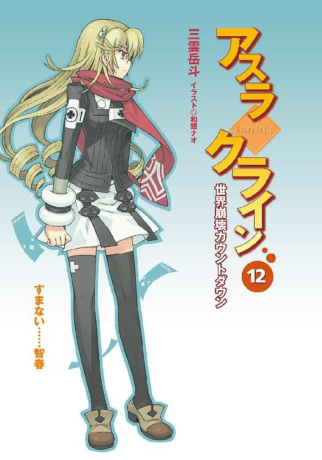
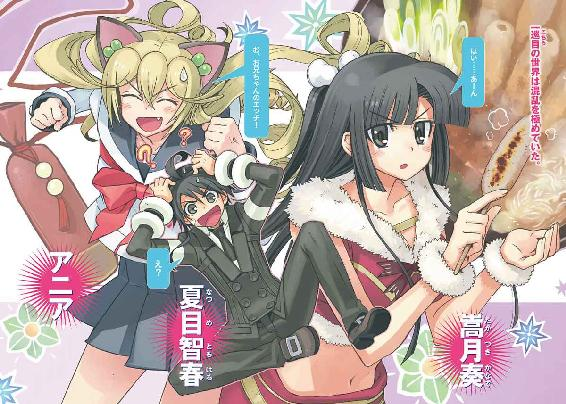
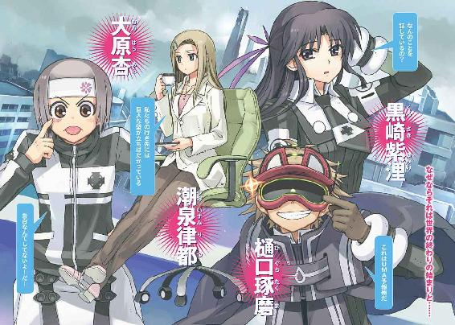
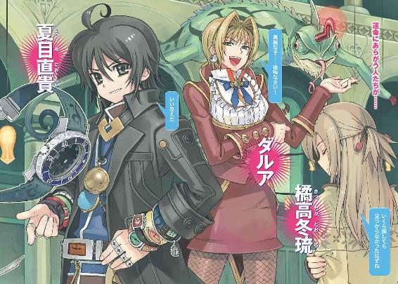
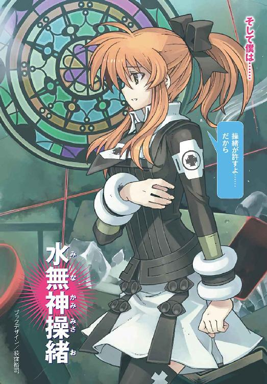
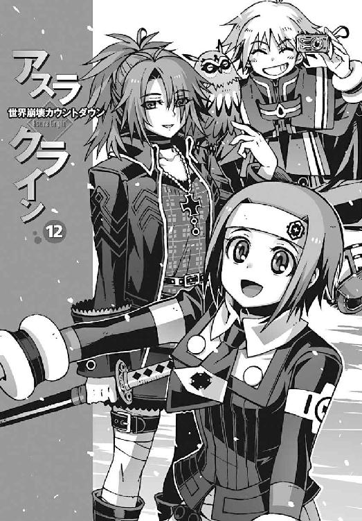
本書（電子版）に掲載されているコンテンツ（ソフトウェア／プログラム／データ／情報を含む）の著作権およびその他の権利は、すべて株式会社アスキー・メディアワークスおよび正当な権利を有する第三者に帰属しています。
法律の定めがある場合または権利者の明示的な承諾がある場合を除き、これらのコンテンツを複製・転載、改変・編集、翻案・翻訳、放送・出版、公衆送信（送信可能化を含む）・再配信、販売・頒布、貸与等に使用することはできません。
φ プロローグ
無音の世界。白い闇。
遮るもののない広大な空間に、純白の闇が広がっている。
微睡みの中にいるような、漠然とした時間の流れ。
ぼんやりと曖昧に霞む景色。
振り返ると、そこには廃墟に似た無人の街並みがあった。
波打つように歪んだ道路。卵の殻のように湾曲した建物の群れ。
およそ現実に有り得るとは思えない奇妙な景色。
それはどこか懐かしい景色だった。
おそらくは公園なのだろう。長い階段と無数の道が交差する、開けた場所に僕は立っていた。
僕の正面。公園中央には、見慣れないオブジェが埋もれている。
熱帯魚の水槽に似た巨大なガラス容器。冷たく輝く金属で縁取られた円筒形のカプセルだ。それは何万年もの歳月を経た化石のように、岩石と一体化した姿で地表に露出している
そのカプセルの上に、一人の少女が座っていた。
セーラー襟の制服を着た小柄な少女だった。
中学生にしては顔立ちが幼い。おそらく十二、三歳といったあたり。髪や瞳の色素が薄く、肌も透きとおるように白い。そのせいか少し外国人っぽい印象を受ける。フランス人形のよう、とでも表現すればいいのだろうか。とにかく唖然とするほど綺麗な女の子だ。
退屈そうに脚を振っていた彼女が、ふとなにかに気づいたように顔を上げた。
大きな瞳が、思いがけず正面から僕を見た。
少女の唇の端がきゅっと吊り上がる。愉しげな笑みが彼女の顔に浮かぶ。
「智春」
大きく手を振りながら、少女は親しげに声をかけてきた。
立ち上がった彼女の背中で、色素の薄い髪が揺れた。その姿に僕は奇妙な既視感を覚えた。とても懐かしい光景だ。まるで重力を感じていないかのように、ふわり、と少女のスカートの裾が広がる。彼女の背後には、どこまでも続く白い闇。
「今ごろ起きてきたの？ もう......相変わらず鈍いなあ」
からかうような口調で、彼女が言った。聞き覚えのある声だった。彼女と同じ顔をした少女のことを僕はよく知っていた。だけど、と僕は戸惑った。だけど、そんなはずはない。
「きみは......？」
困惑した声で僕は訊いた。
その言葉が届かなかったのか、制服の少女はなにも答えない。
すっきりとした頬のラインを見せつけながら、彼女は周囲を見回して、
「それにしても間の抜けた風景だね。これが智春の無意識領域かあ。最初に見たときは笑いすぎで危うく腹筋がよじれるかと思ったわよ。昔から美術とか全然ダメだったもんね」
悪戯っぽい表情を浮かべて、少女が笑う。それは見慣れたいつもの笑顔だ。
彼女は愉しげに息を洩らして、
「でも......ちょっと懐かしい風景かな」
細い首を傾けながらそう言った。
幼さを残した彼女の全身を、僕はしばらく呆然と見つめ、
「操緒......なのか？」
ようやくその名前を口にする。
それを聞いた彼女は、少しムッとしたように眉を吊り上げ、
「そうだよ。まさか、このハリウッド級の美貌をもう忘れちゃったわけ？ まったく、智春は、ちょっと目を離すとこれだから」
唇を尖らせながらそう言った。それは間違いなく操緒の表情だった。僕に取り憑いていた幽霊の少女。機巧魔神《 鐵》の副葬処女。そして三年前の飛行機事故で行方不明になった、かつての僕の幼なじみ。
鐵》の副葬処女。そして三年前の飛行機事故で行方不明になった、かつての僕の幼なじみ。
その操緒が、行方不明になったときと同じ服装、同じ姿で僕の目の前に立っている。
「べつに忘れたわけじゃないよ。だけど、その恰好は......」
露骨に不機嫌な表情になった彼女に、僕は慌てて釈明した。
「ああ、これ？」
操緒はなぜか得意げに、自分の制服のスカートを、ひょいと摘み上げる。
それは洛高に入学する前に、僕が通っていた中学の制服だった。
そして操緒が行方不明になったあの飛行機事故の日に、彼女が最後に着ていた服だ。
「懐かしいでしょ。智春のこだわりに合わせてみたよ。セーラー服」
ちょっと待て、と僕は彼女の言葉を聞き咎め、
「いつ僕がそんなものにこだわったよ？ 人をセーラー服マニアみたいに言うな」
問題なのは制服ではなくて、操緒が幼くなっているという事実のほうだ。誤解を招くような表現はやめて欲しい。
そして僕はふと不安に思う。まさか僕まで若返ってるんじゃないだろうな。
恐る恐る自分の身体を見下ろして、僕は思わず悲鳴を上げた。
「......って、わっ......!?」
「なに？」
きょとんとした表情で操緒が訊いてくる。そんな彼女の視線から逃れるために、僕は奇妙なダンスのようなものを踊る。背中にドッと汗が噴き出した。喉の奥から弱々しい悲鳴が洩れる。
幸いなことに、僕の身体には異常はなかった。高校生の肉体のまま、若返っても、老けてもいない。中学の制服も着ていない。そもそも制服がどうこうという以前の問題だった。
僕の身体を覆い隠すものは、なにもない。
僕は全身、素っ裸で、なにひとつ身に着けていなかったのだ。
「なんだこれっ!? なんで僕だけなにも着てないんだよっ......!?」
誰に言うともなく僕は絶叫した。そして全力で駆け出して、地面に突き刺さったカプセルの背後に回った。操緒はほとんど表情も変えずに、その一部始終を観察して、
「んー......智春の深層意識とかだからじゃない？ ほら、飾らない素顔の自分自身というか。いいじゃん、べつに。操緒は今さら気にしないよ」
「こっちが気にするんだよ！ なんでおまえは普通に服着てんだよ!?」
僕が必死で反論すると、操緒はむうっと目を半眼にして、
「それは操緒にも脱げって意味？ 思春期の欲望剥き出し？ やらしー......」
「違うだろ！ 世界観の整合性とか、そういうことを言ってんだよ！ 男だけ服着てないのは、どう考えてもバランスおかしいだろ！」
「そんなこと言われても智春の意識の中なんだし、無意識の願望が反映されたんじゃない？」
「ないよ、そんな願望は！ いつから僕は露出狂の変質者になったんだよ!?」
「そんな恰好で言われても説得力ないなあ」
「............」
僕はぐったりと疲れた気分で、溜息をついた。
制服の少女はカプセルの上に立ったまま、その場でくるりと回ってみせる。色素の薄い髪が、ふわりと舞う。見上げた頭上に空はなく、ただ純白の闇が広がっているだけだ。
「これ、ただの夢......ってわけじゃないよな。おまえ、本物の操緒なのか？」
嘆息混じりに僕が呟くと、操緒は呆れたように首を振った。
「あたしが、ほかの誰に見える？ 疑り深いなあ。智春のくせに」
「どういう意味だよ、僕のくせにってのは」
僕は不満げな声で訊き返した。しかし操緒は、真っ直ぐな瞳で僕を見据えたまま、
「本当は智春だってわかってんでしょ」
真面目な口調で、そんなことを訊いてくる。
僕は黙って頷いた。なにしろ彼女とは長いつき合いだ。理屈ではなく直感でわかる。目の前にいる小柄な少女は、間違いなく僕の知っている操緒だった。いつも根拠のない自信に満ちあふれ、僕につきまとっていた自称〝守護霊〟の少女。
「無事......だったんだな、操緒。よかった......」
僕は安堵の表情を浮かべた。操緒は、少し面映ゆそうに目を細め、
「ん......幽霊に無事もなにもないと思うけど、大丈夫だよ、あたしはね」
めずらしく歯切れの悪い彼女の口調に、僕は漠然と不安を覚えた。
操緒は、悪戯を告白する子どものような態度で、もじもじと自分の指を絡ませながら、
「鐵は......壊れちゃったかも」
どこか困ったように笑って、そう言った。
ああ、と僕は頷いた。《鐵》が破壊されていく姿を、僕は自分の目で見ていた。機巧魔神《鋼》の攻撃を受け、大破して、それでもなお《鐵》は僕たちを庇い続けた。異世界への移動の衝撃から、僕たちを護ってくれたのだ。
「今、どこにいるんだ、操緒？」
僕は、ふと真顔になって訊いた。操緒がこれまで僕の前に姿を現さなかったのは、《鐵》が大破したことと無関係ではないのかもしれない。だとしたら、このまま操緒を、動かない《鐵》の中に閉じこめておくわけにはいかない。どうにかして彼女を助け出さなければ。
しかし肝心の操緒本人は、普段と変わらぬ緊張感のない口調で、
「うーん、それはちょっと説明しづらいんだけどなあ......」
「なんでだよ!?」
僕は脱力しながら叫んだ。機巧魔神などという、わけのわからない機械に封印され、しかも異世界に飛ばされて、なんでこいつはこんなに平然としているのだ。
「ここは......なんて言うか......まあ、強いていえば、世界の中心......かな」
「は。世界の中心？ は？」
思いがけない操緒の返事に、僕は軽く途方に暮れた。
彼女の口調から判断するに、どうやら操緒は自分が置かれている状況を、ある程度まで把握しているらしい。しかしそれがどんな状況なのか、さっぱりわからない。理解不能。
そして操緒は、混乱する僕を更に置き去りにするように、静かな声で言葉を続けた。
「ねえ、智春......操緒には、わかったよ」
いつになく穏やかな操緒の口調に、僕は胸がざわつくのを感じた。
操緒の瞳は、白い闇の向こうにある遠い場所を見つめていた。
いつもより幼いその横顔に、締めつけられるような不安を覚える。まるで僕の知らない遠い場所に、彼女が行ってしまったような。
「わかったって......なにが？」
僕は掠れた声で訊き返す。操緒は遠くを見つめたまま、
「本当はね、すごく単純なことだったんだよ。直貴くんや、みんながやろうとしていたこと。どうして悪魔がいて、機巧魔神なんてものが造られなければならなかったのか......全部わかったと思う」
操緒はそう言って頭上を仰いだ。
「どういう意味だよ、それ？」
僕の困惑の呟きに、操緒はなにも答えない。
ただ、彼女の背後の白い闇の中で、なにかが動いていることに僕は気づいた。
電子回路のような複雑な軌跡を描きながら、明滅を繰り返す無数の輝き。それはゆっくりと回転する。歯車のように。渦巻きのように。あるいは、この宇宙そのものであるかのように。
僕はふと、それが操緒の見ている景色なのではないかと直感する。
機巧魔神の内部に封印された、副葬処女が見ている風景。それは......どこだ？
「ねえ、智春。覚えてる？」
唐突にいつもの口調に戻って、操緒が愉しそうに訊いてきた。
「ずっと前に、家出した操緒のことを、智春が迎えに来てくれたことがあったよね」
「覚えているというか......心当たりが多すぎて、いつの話か思い出せないんだけど」
僕はやれやれと溜息をつく。それは僕たちが小学生のころ。操緒が幽霊になって僕に取り憑く前の話だ。そのころの操緒は、不在がちで身勝手な彼女の両親のことをひどく嫌っており、しばしば大喧嘩して家を飛び出していた。そんな操緒を捜し出し、なだめすかして家に連れ戻すのは、なぜかいつも僕の役割だった。気まぐれな彼女を見つけ出すため、僕が毎回どれだけ苦労したことか。
なのに、まるでそれが美しい思い出でもあるかのように、操緒はうっとりと目を細め、
「あたしがどこに隠れてても、必ず迎えに来てくれた」
「なんで今、そんな話......」
僕はうんざりと呟いた。今の操緒は幼い家出少女ではない。機巧魔神という化け物の中に封印されて、どことも知れない異世界で行方不明なのだ。幼なじみの小さな少年が闇雲に捜し回って、どうにかなるような状況ではない。
必要なのは情報だった。機巧魔神の謎を解き明かし、操緒を解放する手段の手掛かりになるような有益な情報。しかし操緒は、いつもの悪戯っぽい笑顔で、ただ一方的に言い放つ。
「今度も期待してるからね。ちゃんと迎えに来てよね」
「操緒？」
ぎくり、と僕は身体を震わせた。彼女の声が、ひどく遠い。白い闇が濃さを増して、操緒の姿を覆い隠そうとしていた。意識の接続が途切れかけている。
操緒の幼い輪郭が霞んだ。廃墟に似た街並みが、ゆっくりと遠ざかっていく。無意識領域とやらにこれ以上、留まり続けることができない。意識が覚醒する。夢から覚めるのだ。
「............で、待ってるから」
途切れ途切れに、懐かしい彼女の声が聞こえる。
「待てよ、操緒！ 操緒っ！」
僕は必死に彼女の名を呼び続ける。
そして純白の闇を、花弁のように光が散らした。
時が、動き出す──
一章
どこまでも落ちていくような感覚とともに、目が覚めた。荒い呼吸。視界を満たす白い光。灰色の薄いカーテンを透かして、早朝の太陽が僕の顔を照らしている。
「......操緒っ！」
僕のくぐもった叫び声が、狭い部屋の中に虚しく反響して消えていった。
その呼びかけに答える声はない。僕につきまとっていた幽霊の少女の姿は、今はなかった。
僕は深い溜息をついて、硬直した全身の力を抜いた。ひどい喪失感に胸が痛んだ。
起き抜けの朦朧とした意識の中で、操緒との会話の記憶を再生する。
「今のは夢......なのか......!? いや......」
枕に頬を半分埋めたまま、僕は小さく呟いた。
異様に鮮明な夢の記憶。あれはただの夢ではなかった。間違いなく自分が彼女と会話をしたのだという奇妙な確信があった。
操緒はただの幽霊ではない。彼女は機巧魔神の副葬処女なのだ。そして僕の脳内に施術された術式によって、感覚の一部を僕と共有している。たとえ完全に射影体化することができなくても、夢枕に立つくらいのことならできるのかもしれない。
やはり彼女は、今もどこかで無事なのだ。そう思って僕は再び息を吐く。
ぐったりとベッドに体重を預ける。
無意識の緊張から解放された反動か、柔らかな枕の肌触りが、いつになく心地よく感じられた。ほんのりと残る体温と、適度な弾力。そして甘い髪の匂い。髪の......匂い......？
「おい」
そんな僕の真下で不意に声がした。繊細なオルゴールの響きを思わせる、澄んだ声。しかし、ひどく不機嫌そうな声音だ。
「え？」
驚いて、僕は瞼を開けた。腕立て伏せの要領で身体を起こすと、驚くほど近くに少女の顔があった。まるで人形のような小振りな頭部。不機嫌そうに半開きの瞳は碧眼。ナイトキャップからはみ出た長い髪は、縦ロール気味に渦を巻く天然モノの金髪だった。
少女は仰向けにベッドに横たわったまま、僕を睨んで、硬い声で、
「貴様、いったいなんのつもりだ、智春？」
「ア、アニア......？」
僕は呆然と彼女の名を呼んだ。ほんの少し見ない間に諸般の事情で、十五歳前後にまで急成長した元・交換留学生の天才少女。運喰らいの悪魔である金髪美少女が、なぜか僕と同じベッドの中で寝ていた。ちょっと間違えたら触れてしまいそうなほどの至近距離に、彼女の薄桃色の唇がある。僕は凄まじく動揺し、
「おまえ、なんでこんなところに......僕の部屋でなにを......？」
「なんでこんなところに、というのは......私のセリフだ」
アニアが冷淡な口調で言った。無表情な彼女のこめかみが、ぴくぴくと怒りに震えていた。
どうやら僕は彼女のことを、枕のように抱きかかえて眠っていたらしい。なるほど。寝心地がよかったわけだ。いちおう成長したとはいっても、アニアの小柄な身体は触ってみると驚くほど華奢で、そのくせ不思議と柔らかい。しかも僕の掌の中には、彼女の胸の膨らみが吸いつくようにすっぽりと収まって──
「ここは私の部屋だと言っておいただろうが、この馬鹿者！ がぶ！」
アニアが尖った白い犬歯を、思いきり僕の腕に突き立てた。
「痛っ！ ちょ......待て、これは誤解だから。ただの不幸な間違い......吸うなっ！」
「黙れ、色魔。ほかの女の名前を連呼しながら、ひ、人の胸を揉みまくりおって。貴様のような無礼者は足腰立たなくなるまで吸い尽くしてくれるわ！」
「だから、それは、悪かった......というか責任能力のない状況下での不可抗力だから......！」
「弁解なら地獄でするがいい」
「悪かったって言ってるだろ！」
僕は激痛に呻きながら思い出す。
この屋敷は僕が借り受けた下宿。鳴桜邸という名前の古い洋館だ。そしてここは間違いなく僕の部屋で、ベッドも僕のものだった。ただし、〝二巡目の世界〟では。
ここは僕たちの世界ではなかった。機巧魔神《鋼》の暴走に巻きこまれ、僕たちは〝一巡目の世界〟へと飛ばされたのだ。それは僕たちにとって、すでに滅びた過去でもあり、そのくせ時間的には一年ほど未来という、ひどくややこしい奇妙な場所だ。
そしてその〝一巡目の世界〟で、この鳴桜邸に住んでいたのがアニアだった。
この部屋の使用者もアニアであり、当然ベッドの所有権も彼女にある。昨夜の僕はリビングのソファで毛布を被って寝ることになっていた。
とはいえ長年の習慣というのは恐ろしいもので、夜中に起きてトイレに行ったあと、いつものクセでこの部屋のベッドに、寝ぼけたまま潜りこんでしまったらしい。
「普通、誰かが先にベッドに寝てたら気づくだろうが！」
「操緒が寝てると思ったんだよ。いつもあいつが僕につきまとってたから」
「だから、それが余計に許せんと言ってるのだ！」
アニアが乱暴に言い放ちながら、狼狽する僕を突き飛ばして馬乗りになる。マウントポジションのアニアを、仰向けの僕が下から見上げる姿勢。寝乱れたアニアのパジャマは、はだけた襟の隙間から白い素肌がのぞいている。さっき、触ったときにも思ったのだけど、もしかしてアニアさん、今はノーブラですか。というか、この姿勢、人に見られたら誤解されそうな気もするのだけど──
なぜか急に胸騒ぎを覚えて、僕は部屋の入口のほうに目を向けた。
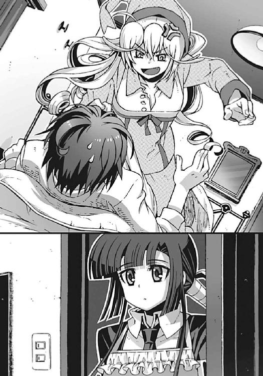
まさにその瞬間、こんこん、という控えめなノックの音が響いた。しばらくしてゆっくりとドアが開いた。アニアの部屋が騒がしくなったので、気になって様子を見に来たのだろう。そこには制服姿の嵩月奏が立っていた。
「た......嵩月!?」
僕はアニアに跨られた姿勢のまま、仰向けに嵩月の姿を見上げた。
制服の上にエプロンをつけた嵩月は、まるで幼妻のような雰囲気を漂わせて、いつにもまして魅力的に感じられた。こんな状況でなかったら、思わず見とれていたかもしれない。しかし今はそんな彼女の姿が、絶望の象徴のように感じられる。
パジャマ姿でベッドの上で、組んずほぐれつの肉弾戦を演じている僕とアニアを、嵩月は、呆然と目を見開いたまま無言で見つめ、
「む......ちょうどいいところに来たな、奏」
アニアが勝ち誇った表情を浮かべて言った。
「聞いてくれ。この馬鹿が、いきなり私のベッドに潜りこんできて、性的な陵辱行為を働いたのだ。具体的に言うと、覚醒前で意識のない状態の私の着衣の下に腕を入れて、胸を触るなどのわいせつな行為を──」
「わああああっ、違うだろ！ いつもの癖でこの部屋のベッドに潜りこんだだけだっ。胸を触ったのは、ただの不幸な偶然で......」
僕は必死で抗弁した。その言葉に、アニアの眉が、ぴくりと怒気をはらんで跳ね上がる。
「この私の胸に触るのが不幸だと!?」
「あ、いや、それは言葉のアヤで」
たしかに気持ちはよかったけど。
「どう考えても、貴様の人生には不釣り合いなほどの幸運だろうが！ 運喰らいの悪魔として、そのような異常を見過ごすわけにはいかんな。その分不相応な運気、根こそぎいただくぞ！」
「いただくな！」
首筋に噛みつこうとするアニアを、僕は必死で押しとどめながら叫び、
「だいたい貴様、操緒の名前を呼びながら私の胸を揉むとはどういう了見だ。あのぺたんこと間違えるか普通!? おまえはどっちの胸が好きなんだ!?」
「なにに対して怒ってんだよ!? だからこれにはワケがあるんだって！」
無意識領域で操緒と会話していたのがすべての元凶なのだ。操緒も、どうせ夢枕に立つなら、もっとまともな状態のときに出てきてくれ。それとも、まさかワザとやってるのか。
「む......どうした、奏？ おまえも怒っているのか？」
アニアが僕を攻撃する手を休めて、嵩月のほうに振り返る。
嵩月は、なにか考えているような表情のまま、曖昧に首を振り、
「いえ......そういうことではないですけど」
「......？」
そんな嵩月の態度に違和感を覚えて、首を傾げるアニア。僕の腰の部分に乗っかったまま、そうやってもぞもぞ動くのは、いろいろと危険なのでやめて欲しい。
嵩月は、なにか言おうと口を開きかけ、しかしすぐに思い直したように目を伏せた。そして、
「朝ご飯の支度しますね。二人とも風邪を引かないように、早く着替えてくださいね」
柔らかな口調でそう言い残して、キッチンのほうへと去っていく。
嵩月の消えた廊下を見つめたまま、アニアがぽつりと呟いた。
「あれは......相当怒ってるな」
「............」
僕は無言で、額に浮いた嫌な汗を拭った。
○
朝食のメニューは、だし巻き卵と納豆と味噌汁。そしてなぜかシーザーサラダとピザマルゲリータという和洋折衷の異色の組み合わせだった。それらを手分けして作ったのは僕と嵩月だ。
最初の打ち合わせでは純和風朝食のはずだったのだが、ふと気づくと嵩月がピザ生地をオーブンで焼いていた。今日の彼女は、たまにぼんやりと上の空というか、なにか考えごとをしていて様子がおかしい。
「......料理は、直貴よりもおまえのほうが上手いな」
ピザを片手にずるずると味噌汁をすすりながら、アニアが淡々と感想を述べた。
「そうか？」
僕はなんとなく複雑な気分で答えた。夏目直貴はかつて僕が兄と呼んでいた男であり、本来この世界にいたはずの、もう一人の僕自身だ。彼と比較されるのは、それがどんな形であれ、僕の感情を不安定にする。
しかしアニアは、そんな僕の気持ちを知ってか知らずか、
「得意なのは女装だけじゃなかったというわけか」
げほ、と僕はレタスを喉に詰まらせてむせた。
「女装はべつに得意じゃないよ。いつまで覚えてるんだ、そんなこと！」
声を上擦らせて反論するが、アニアは素知らぬ顔で目を逸らし、
「......どうした、奏。食べないのか？」
声をかけられた嵩月が、少し驚いたように顔を上げた。
ぼんやりと座っていた彼女のぶんの朝食は、ほとんど手つかずのまま残っていた。嵩月は、どこか無理をしているような、ぎこちない笑顔で、
「あ、いえ」と首を振る。
アニアは、ふむ、と箸の先っちょをくわえたまま、
「今夜のことなら心配ないぞ。そこの夏目エロハルが、おまえに夜這いをかけようとしたら、私と、この呪いの人形たちが黙っていないからな」
「誰が夏目エロハルだっ......」
僕は、憤然と低く呻いた。そして鳴桜邸のリビングの中を見回し、
「てか、これってやっぱり呪いの人形だったのか？ なんでそんな物騒なものを、こんな大量にかき集めてるんだよ？」
「仕方ないだろう。商売道具だからな」
アニアが淡々と返答する。
黙々と食事を続ける彼女の背後にも、その隣の壁にも、とにかくリビングの中は人形だらけだった。壁一面に設えられた巨大な棚に、百体を超える人形たちが並んでいる。豪華な衣装をまとった年代物のアンティークドールたちだ。
感情のない無数のガラス玉の瞳が、食事中の僕たちの姿を、無言のままで見下ろしている。言っちゃあなんだが、メチャメチャ不気味だ。見ているだけで呪われそうな光景だが、まさかそれが本物の呪いの人形だったとは。
「......商売道具って？」
「アンティークの人形のリサイクルを引き受けているのだ。この国には、人形供養などという風習があるのだろう？ おかげで、大量の運気を溜めこんだ古い人形を集めるのが楽だったぞ」
「なるほど......運気を集めるためか......」
僕はようやく納得した。
運喰らい。それがアニアの一族の能力だ。直接的な戦闘能力は低いが、運命そのものを操作する能力を持っている。極めて希少な種族の悪魔らしい。
しかし運気を自在に操るとはいえ、彼女たちは、自分で幸運を作り出しているわけではない。自分たちで消費するぶんの運気すら、どこか余所から補給しなければならないのだ。
かといって周囲の人間から無差別に運気を奪っていたら、不幸を招く存在として人々に迫害されかねない。だからアニアは、長い年月を経て持ち主の運気が乗り移った、古い持ち物から運気を吸うことを好んでいた。持ち主が愛しんでいたアンティークの人形は、最適の触媒だ。
人形たちを満足そうに眺めて、アニアは少し得意げに胸を張り、
「メンテナンスした人形をオークションで売り出せば金にもなるし、一石二鳥の名案だろう。安定的な運気の供給源を探すのは、いつも苦労するからな。おまえのように不幸慣れしているやつが近くにいれば、遠慮なく吸い出すことができたんだが」
「遠慮しろよ！ そもそも吸うなよ！ こっちも好きで不幸になってるわけじゃないんだよ！」
必死の形相で僕は叫んだ。ただでさえ不幸体質なのに、これ以上ばかすか運気を吸われたらたまらない。そんな僕の反応を見て、アニアは楽しそうに笑った。
「それに、ここにある人形たちには、ちょっとした仕掛けも施してあるしな」
「仕掛け？」
怪訝な表情を浮かべた僕に、アニアは少し真面目な顔になって頷き、
「今のおまえにならわかるんじゃないのか、智春？」
「え？ 僕が？」
僕は困惑して問い返す。それに対してアニアがなにか答えようとした、そのときだった。
がしゃん、という大きな音が、鳴桜邸のリビングに鳴り響いた。
嵩月が、持っていた茶碗を落としてしまったのだ。割れて飛び散った茶碗の欠片が、近くの湯飲みにぶつかって、倒れた湯飲みからこぼれたお茶が僕の脚に降り注ぐ。
「うわっ！」
「あ......」
「熱っち......！ 熱ち熱ち熱ち......熱いっ！」
「あ......ご、ごめんなさい。ごめんなさい。拭きますね、すぐに」
ハッと我に返った表情の嵩月が、布巾を持って立ち上がった。
「あー、いや、いいよ。これくらい自分で......」
「拭きます！」
遠慮する僕を見つめて、嵩月がきっぱり断言する。
「あ、はい。すみません」
彼女の迫力に気圧されて、僕は思わず謝ってしまった。僕の両脚の間に跪いて、濡れた脚の付け根を拭いてくれる嵩月。けっこう際どい姿勢というか、嬉しいシチュエーションのような気もするのだが、彼女の様子がいつもと違うので、素直に喜ぶ気になれない。
どうなってるんだよ、とアイコンタクトで助けを求めるが、アニアは素っ気ない態度で顔を背けただけだった。どうやらアニアにも心当たりがないらしい。
「あの......嵩月？ もしかして、なにか怒ってる？」
やむを得ず僕は怖ず怖ずと質問した。
しかし嵩月は、不思議そうな瞳で僕を見上げて首を振っただけだった。
「いえ。ただ......少し考え事をしていただけで」
「考え事？ なにか気になることがあるのか、嵩月？」
少しホッとしながら、もう一度訊いてみる。
「財団のことなら心配は無用だぞ、奏」
アニアがピザの切れ端を口にくわえたまま、もごもごと告げる。
「智春が悪魔としての能力を持っていたのは、連中にとって完璧に想定外だったはずだからな。こないだのような強硬手段を取ることは、もうできないはずだ。少なくとも次に接触してくるときには、対等の取引を持ちかけてくるだろう」
「取引......？」
僕はムッと眉を寄せた。ほんの数日前、僕たちは財団とかいう連中の作った量産機に襲われた。かろうじて撃退することはできたが、危うく死人が出るところだったのだ。
「財団の中にも派閥があってな、ああいう無謀な奴らはほんの一部だけなんだ。財団の目的は、たぶんおまえが想像しているよりもまともだぞ」
「とてもそうは見えなかったけどな」
僕はふて腐れたように唇を歪める。アニアは薄く溜息をついて、
「ある意味では、あいつらは今の私たちに近い立場の連中なんだ。この世界がもうすぐ滅びてしまうことを知ってしまった。それをなんとかしようと足掻いているだけだ」
「そのために機巧魔神の力を欲しがっているわけか」
「そうなるな」
アニアが、ずず、と音を立てて味噌汁をすすった。
僕はそんな彼女の横顔を、じっと観察する。
「あいつらの正式名称......クラウゼンブルヒ財団って言ってたよな？」
「ああ。我が一族の領地と同じ名前だ」
「彼らは、きみと関係があるのか、アニア？」
僕は殊更にゆっくりと質問した。金髪の美少女は、唇についた分葱をペロリとなめて、
「ふむ。微妙だな」
「なんだよそれは」
「どちらかといえば偶然なのだろうが、無関係ではない。直接的なつながりもないがな」
「そうか。知り合いってわけじゃないんだな」
ぼそり、と呟いた僕を見て、アニアはめずらしく優しげな微笑みを浮かべる。
「だから、おまえがあいつらを殺そうとしたことなら、気に病む必要はないぞ。あの状況では、あれは当然の判断だった。やらなければ、こちらがやられていたかもしれないのだからな」
僕はかすかに肩を震わせた。内心の葛藤を見抜かれていたことに、苦笑が洩れる。僕が知っているアニアという少女は、ついこないだまで、他人の気持ちなどお構いなしのお子様だったのだ。まさかそんな彼女の口から、僕を気遣うようなセリフが出てくるとは。
時間にズレが生じていたとはいえ、ほんの数日で、こんなふうに成長されると調子が狂ってしまう。まるで知らない女の子のようで、落ち着かない気分だ。
「ありがとう、アニア......」
僕がそう言うと、アニアは聞こえなかったふりをして納豆をかき混ぜ始めた。その頬が少し赤かった。照れているのかもしれない。そういう新鮮な反応のせいで、ますます財団の正体について追及しにくくなってしまう。
僕は割れた茶碗を片付けていた嵩月に視線を移して、
「嵩月も、財団のことを心配していたのか？」
「そうじゃない......けど、無関係じゃない、かも」
歯切れの悪い口調で答える嵩月。
「どういう意味？」
僕が首を傾げると、嵩月は僕をじっと正面から見返し、やがて意を決したように、
「あの、夏目くんの好み、とか」と小声で訊いてきた。
「え？」
料理の味付けのことだろうか、と僕は思った。唐突だな。
しかし嵩月は、恐ろしく真剣な表情のまま、
「たとえば女の子の胸の大きさ......とか。やっぱり、小さいほうが、好き？」
「はあっ？」
僕は危うく茶碗を取り落としそうになる。隣でアニアがぴくりと耳を動かすのが見えた。
「な、なんでいきなりそんな話に......!?」
上擦った声で訊き返すと、嵩月は、なぜかアニアの胸元のあたりで視線を彷徨わせ、
「それは、あの......水無神さんの夢を見ながら......その......」
「たしかにそれは私としても気になるな」
アニアが、厳かに呟いて僕のほうに向き直る。僕はバラバラと箸を落としながら、
「なんでだよ!?」
「今後の対策を練る上でも、おまえがどういうつもりで私の胸に触ったのか、はっきりさせておかなければ」
「触ろうとして触ったわけじゃないってのに......それに、操緒に会ったのは夢じゃないんだ。あいつと話をしたんだよ。無意識領域とか、なんかそんな場所で」
僕は必死で説明する。平和に朝食を食べていたはずなのに、どうしていきなりこんな話題になったんだ。
「無意識領域？」
ムッとアニアが表情を険しくした。
「そうか......副葬処女と演操者は、脳機能の一部を共有しているからな。たとえ呪的な接続が遮断された状態でも、無意識下で情報を交換する可能性はなくはないな......特におまえらの場合は、安定装置による増幅も効いているしな」
「うん、そう。よくわからないけど、それ」
僕は小刻みに頷いた。突拍子もない話なので一時はどうなることかと思ったが、よかった、信用してもらえたようだ。しかしアニアは、まだ少し疑わしげな表情で、
「おまえの無意識領域で、操緒はどんな恰好をしていた？」
「恰好って......言っとくけど、あいつはちゃんと服を着てたからな。どうしてだかセーラー服だったけど。だから、いかがわしいことはなにも」
僕は力強く言い切った。事実なので、後ろめたいことはなにもない。
「セーラー服？」
アニアが、ほう、と目を細くした。
「操緒は服を着ていた、ということは、おまえは着ていなかったのか？」
「あ、いや......それは」
口ごもる。咄嗟のことだったので、言い訳をなにも考えていなかった。
アニアの目つきがますます冷ややかになり、嵩月も困ったような表情を浮かべる。
「セーラー服と素っ裸か。なるほど。おまえはそういう趣味か」
「ちーがーう！ あれは無意識だから仕方がないんだよ。その、飾らない素顔の自分的な......」
「そんな汚らわしい話はどうでもいい。操緒の姿になにか変わったことはなかったか？」
醒めた口調で質問を続けるアニア。
「......あ、そう言えばあいつ、若返っていたかもしれない。セーラー服というのも、あいつが行方不明になる直前に着てた、うちの中学の制服だったし......」
そうか、とアニアが納得したように息を吐いた。
「なるほどな。鐵は、やはりあそこか......厄介だな......」
アニアが呟いた言葉に、僕は勢いよく身を乗り出して、
「なにか......知っているのか、アニア？」
「ああ」
硬い表情で頷くアニア。嵩月も驚いたように目を大きくして、
「わかった......の？ 水無神さんの居場所？」
「たぶんな。智春、奏、学校に行くぞ。準備をしろ」
残っていた味噌汁を一息で飲み干して、アニアが立ち上がる。
僕は驚いて、ふわりと広がる彼女の金髪を見上げ、
「洛高に？」
壁にかかっていたカレンダーと、デジタル時計の日付を見比べる。今日は日曜日。学校は、いちおう休みのはずだ。冬休み直前の最後の休日。しかしアニアは無愛想な声で、
「おまえたちに見せたいものがある......それに、迎えも来たみたいだしな」
「迎え？」
僕と嵩月は、怪訝顔で窓の外を振り返った。
ちょうど屋敷の門の前に、軽快なバイクのエンジン音が近づいてきたところだった。
○
バイクは年代物のイタリア製スクーターだった。前にアニアが乗り回していたヤツだ。荷台に無理やり乗せられて、死にそうな目に遭ったのでよく覚えている。警察車両の追跡から逃れるために、街中で適当に乗り捨てたはずだが、そのあとで誰かが回収したらしい。
バイクに乗っていたのは、洛高の制服を着た若い男子生徒だった。僕のよく知っている顔だ。〝二巡目の世界〟にいた彼と、ほとんど印象が変わっていない。
その男子生徒は、鳴桜邸の玄関に出てきた僕たちの姿を軽く一瞥して、見慣れたいつもの軽薄そうな笑みを浮かべた。
「よぉ。無事だったか、ニアっち。財団と一戦交えたらしいじゃねえの」
「ふん。相変わらず情報だけは速いな、樋口」
アニアがぞんざいな口調で言い放つ。男子生徒、樋口琢磨はニヤリと頷くと、
「当然。これ、頼まれてたバイクな。回収するのに苦労したぜ」
バイクのキーを抜いてアニアに放った。アニアはそのキーを空中でキャッチ──しようとして失敗し、地面に落ちたキーを、もそもそと屈んで拾い上げた。それでも尊大な態度は崩さず、
「うむ、ご苦労」
僕はそんな彼女たちのやりとりを、しばらくの間、呆然と眺めていた。
この世界で、樋口が科學倶楽部の部長を引き継いだことは知っている。アニアの幼生体退治に、彼が協力していたことも知っている。だがしかし、
「おまえ......樋口か？ なんだその恰好？」
バイクに跨ったままの樋口を見つめて、僕は苦悩混じりの声を出す。樋口が着ているのは、たしかに洛高の制服だ。それはいい。実は制服の上にコートも羽織っている。それもたいした問題ではない。冬だしな。問題なのは、そのコートのデザインだ。
それはコートというよりも、マントというほうが正確だった。足首近くまで届く、異様な長さの漆黒のマントコート。そんなものをヒラヒラさせながら、バイクに乗ってここまで来たのか。よく警察に通報されなかったな。
「なんだと言われても、見てのとおりだ。洛高科學倶楽部の部長の証である黒衣だぜ？」
そう言って樋口は得意げに笑う。
「はあ......黒衣......」
そういえば〝二巡目の世界〟で朱浬さんが着ていた黒衣に、雰囲気が似ているかもしれない。しかし、なんでこいつは制服の上にそんなものを着ているのだ。吸血鬼か。それを着ている自分が恰好いいと思っているあたりが、なんだかわけもなくムカつく。
そんな僕の内心のツッコミにも気づかず、樋口は、面白そうに僕の全身を眺め回し、
「ふーん......おまえが〝二巡目の世界〟の夏目智春？ なるほどね、ちょっとガキっぽいけど、俺の知ってる智春と同じだな。ニアっちの予言どおりってわけか」
「アニアの予言？」
僕は真面目な顔になって訊き返す。樋口はあっさりと頷いて、
「こっちの世界のオリジナル智春は、世界の境界をすっ飛ばしてそっちの世界に行ったんだろ。代わりにおまえがこっちに来た、と」
「え？」
驚く僕を見て、樋口がニヤニヤと笑う。
「そんな不思議そうな顔するなよ。事情はひととおり聞いてるぜ。俺たちが住んでるこの〝一巡目の世界〟は、もうすぐ滅びるんだろ」
動揺で、一瞬、呼吸を忘れた。屈託なく笑う樋口を見返して、弱々しく呻く。
「ああ......うん。僕はそう聞いてる、けど......いいのか？」
「いいって、なにがだ？」
きょとんとした顔で、首を傾げる樋口。世界が滅びるということは、こいつの存在も消える、ということではないのか。
「だって、この世界は......もう......」
「おう。わくわくするよな。だって世界滅亡だぜ？ そんな歴史的な大イベントに立ち会えるなんて、すげえ幸運だろ。俺らがガキのころの〝恐怖の大王〟の予言にはがっかりさせられたからな。今度こそは期待を裏切らないでもらいたいぜ」
僕は今度こそ絶句して、瞳をキラキラと輝かせている樋口の姿を眺めた。そういえば、この樋口は、筋金入りのオカルトマニアなのだった。こいつにとっては、世界の滅亡すら、自分の好奇心を満たす研究対象でしかないのだ。アホだアホだと思っていたが、ここまで徹底されると、実は大物だったんじゃないかという気もしてくる。
「忘れたのか？ 樋口はこういう男だっただろ？」
呆れて言葉をなくした僕を見上げて、アニアが悪戯っぽい口調で言った。
「オカルトマニアもここまでくると尊敬するよ」
僕は小さく嘆息する。たしかに樋口の行動原理はどうしようもなくズレているが、こいつは基本的なスペックは高いのだ。成績優秀だし、見てくれもまあまあ。交際範囲も広くて情報収集に長けている。たった一人で見知らぬ世界に放り出されたアニアにとって、樋口の存在は、かなりの助けになったはずだ。
今のこのアニアが樋口を信頼している理由も、なんとなくわかるような気がする。ダテに科學倶楽部の部長を引き継いだわけではないということか。
そんなふうに僕が無理やり自分を納得させていると、
「そうだ、樋口。この二人を学校に連れて行きたいんだ。案内してやってくれ」
アニアが唐突に無責任な依頼を口にした。
「ええっ？」
僕はさすがに不満の声を上げた。こんな怪しいマント男と、一緒に連れ立って登校するのか？ いくら相手が貴重な協力者でも、正直、勘弁して欲しいぞ。
ふと見れば、嵩月も途方に暮れたような表情を浮かべていた。彼女はこちらの世界では、目立たないように変装しながら生活していたのだ。そんな今までの彼女の努力も、このマントと一緒にいたら台無しだ。
しかし樋口は、そんな僕たちの不満にも気づかず、お気楽な表情で親指を立てると、
「おう！ もちろん構わないぜ。で、ニアっちはどうするんだ？」
アニアは、マフラーを顔に巻きながら、樋口を押しのけてバイクに跨った。
「私には寄るところがある。先に行ってろ」
樋口は少しだけ真剣な顔つきになって、
「ふうん。本家か？」
ああ、とアニアは小さく頷く。
「今度という今度は引っ張り出してやる」
「引っ張り出すって......誰を？」
僕は困惑の表情でアニアに訊いた。金髪の少女は、そんな僕を、じろりと睨んで、
「ふん。おまえたちを巻きこんだ張本人。猫かぶりして傍観者面しているあの女......すべての元凶。黒幕だ」
どこか苛立ったような口調で、吐き捨てるように呟いた。
「く、黒幕？」
わけがわからず復唱する僕。アニアはなにも答えずにバイクのエンジンを始動すると、排煙をまき散らしながら、そのまま走り去っていった。風にたなびくドリル状の金髪も、やがてすぐに見えなくなる。あとには、ぽつんと立ち尽くす僕と嵩月が残された。
そんな僕たちの肩を叩いて、
「さて......じゃあ、まあ、俺らも行きますか」
やけに楽しそうな顔で樋口が笑う。
僕は激しく不安になった。正直、気が重かった。目的もわからないまま学校に行くのは、僕たちにはリスクが大きすぎる。
「いや、あのさ、樋口。いや、樋口......さん？ 僕たちが知っているのは〝二巡目の世界〟の、それも一年前の洛高のことだけなんだけど......」
しかし樋口は、そんな僕を面白そうに眺めて、
「なんだよ、智春。さん付けなんて他人行儀だな、やめようぜ」
馴れ馴れしい態度で僕の背中をバシバシと叩く。そして自信に満ちあふれた笑顔で、
「大丈夫だって。俺に任せとけよ。バレないように上手くやるからさ」
まったく信用できない、と思ったが、抵抗しても無駄だということはよくわかった。僕は、がっくりと肩を落として、仕方なく登校の支度を始める。
「............」
嵩月は、そんな僕と樋口の姿を、なぜか思い詰めたような表情でじっと見つめていた。
二章
鳴桜邸から洛芦和高校までは、徒歩で約十五分ほど。それは〝一巡目の世界〟でも同じだ。しかし、その通い慣れた道のりが、今日に限っては異様に長く感じられた。登校途中の僕たちの姿が、なぜか異様に目立っているせいだ。
三つ編み、眼鏡に、チェックのマフラーの嵩月は、たぶん変装しているつもりなのだろうが、これはこれで可愛らしくて、むしろ普段よりも人目を惹いている気がする。半端に顔を隠しているせいで、余計に注目されているのかもしれない。実際、普段の彼女より、こっちのファッションのほうが好みという連中も普通にいそうだ。
しかしそれ以上に悪目立ちしているのは、もちろん黒マントの樋口だった。
しかもこのアホはなにを考えているのか、サンバイザー風のメカニカルなゴーグルで顔半分を覆って歩いていた。ゴーグルのレンズ面は、電子機器のディスプレイになっているらしく、たまにチカチカとカラフルな輝点が点滅している。当然とんでもなく目立っている。おまえの顔面はクリスマスツリーの電飾か。
「あのさ、樋口」
僕が仕方なく話しかけると、樋口はゴーグルをピカピカ点滅させながら振り返った。どうでもいいが、どうしようもなく目障りだなそれ。
「おう。どうした？」
「なんだ、それ？ なんて言うか、すごく目立ってるんだが......」
「これはＵＭＡ予報器だ」
よくぞ聞いてくれた、と言わんばかりに樋口はニヤリと笑う。
「はあ......ＵＭＡ予報？」
その名前だけでも、なにかロクでもないものなのだろうと想像できた。
樋口は、ヘッドホン状になっているゴーグルの耳の部分をカチカチと弄り回しながら、
「ニアっちが作った、科學倶楽部の秘密兵器。未確認生物が出現する予兆を検知して、事前に予告してくれる装置だよ。うちの部が、全国高校ＵＭＡ写真コンクールで二連覇の快挙を成し遂げたのも、こいつのおかげだ」
「未確認生物の写真......？ それって......」
樋口の言うＵＭＡというのが、使い魔の幼生体のことだと僕は気づく。
なんとなく話が読めてきた。
正式な契約者を持たないまま異世界に出現した使い魔は、本能のままに暴走する怪物だ。特に、世界の境界が不安定になっているこの〝一巡目の世界〟には、それらが出現する頻度が異様に高い。
アニアは、そんな〝はぐれ使い魔〟による被害を防ぐために、こっそりと使い魔退治をしていたらしい。しかしアニア一人では、使い魔の出現地点の予測や情報収集までは手が回らない。だから彼女は、樋口に協力させることを思いついたのだろう。
なにせ樋口は筋金入りのオカルトマニアだ。ＵＭＡの調査をしたいといえば、喜んで協力してくれたに違いない。アホなゴーグルを被って街中をうろつく程度のことは、樋口なら余裕だ。
要するにこの樋口は、アニアにいいように利用されているというわけだ。とはいえ、本人も満足している様子なので、アニアが責められる理由もない。巻き添えになった僕と嵩月が、単に不幸というだけで。
しかし、ＵＭＡ探知機......だと？
「それって、どういう原理で動いてるんだ？」
ふと気になって訊いてみる。どうせ怪しげなオカルト理論で動いているのだろうと思ったが、意外にも樋口は理路整然とした口調で、
「ニアっちが作ってる人形があるだろ。あれってけっこう人気があって、この街にも愛好者が多いんだよ。市内全域に二百体は出回ってるかな」
「そんなに......？」
ずいぶん多いな、と僕は驚いた。まあ、たしかにあの人形の造形自体はよくできてたけど。
「なにしろ人形の売り主が、人形みたいな顔をした〝洛高の魔女〟だろ。一部の愛好家の間じゃ有名なんだ。裏で呪いの人形を扱ってるとか、あることないこと噂になってるしな。人形のおかげで就職できたとか、結婚できたとか、ダイエットに成功したとかの体験談も続々......」
「なるほど......」
それはいかにもありそうな話だ。呪いの人形の噂話も、実話かもしれないところが恐ろしい。
「でもって、実はあの人形の中には探知機が仕込んであるんだ。近所でＵＭＡが出現しそうな予兆を検知すると、その情報がこの予報器に送られてくるって仕組みらしい」
「......大丈夫なのか、人形に探知機なんか仕込んだりして......」
電波の発信とか個人情報の保護とか、なんかいろいろ違法っぽい臭いがプンプンするんだが。
「まあ、細かいことは気にすんなよ。ＵＭＡ写真コンクールで優勝したおかげで、生徒会の連中もうちの部の活動には口出しできなくなったしな」
そう言って自慢げに高笑いする樋口。
「......そのコンクールって、そこまで権威があるものなのか？」
僕は小声で嵩月に訊いた。嵩月は不思議そうな表情で僕を見て、こくり、と小さく頷いた。
「有名......です。一部の業界では」
「えっ、マジ？」
僕は唖然として彼女を見つめ返す。有名なのかよ。どこだよ一部の業界って。
そんな感じで、そのときの僕は、樋口たちとの会話に気を取られすぎていたのだろう。周囲への警戒心が疎かになって、迫りつつある危機に反応するのが遅れた。
どうしようもなく手遅れだった。
「危なーいっ！」
頭上から声が聞こえたような気がした。
そのとき僕たちが歩いていた場所は、通学路の途中の上り坂だった。
傾斜の急な短い坂道を真っ直ぐに進めば、すぐに洛高の正門が見えてくる。
その坂道の前方から、たしかに悲鳴のような声が聞こえてきた。
ほとんど無意識に顔を上げた僕が見たのは、雪のように白く輝く結晶──
それは玉砂利ほどの大きさの半透明の結晶だった。数え切れないほどの小さな塊が、まるで雪崩のように坂の上から押し寄せてくる。なにが起きているのかわからなかった。
だから僕は悲鳴を上げることすらできなかった。
「ぶわっ......!?」
押し寄せてきた結晶の群れに為す術もなく巻きこまれて、僕は仰向けに転倒した。
慌てて僕に駆け寄ろうとした嵩月も、地面に飛び散った結晶に足を取られた。バランスを大きく崩しながらも、嵩月は器用に受け身を取って、
「......氷？」
降り注いだ結晶の正体に気づいた彼女が、怪訝そうな表情を浮かべる。
そう。僕たちを襲ってきた白い塊は氷だった。魚屋のショーケースに敷き詰めてあるような、保冷用のクラッシュアイス。少なく見積もっても軽トラック一台ぶんくらいの量はありそうだ。そんな大量のかち割り氷を、誰かが坂の上でぶちまけたのだ。
僕たちの背後で次々に悲鳴が連鎖する。僕たち以外の通行人も、この傍迷惑な氷雪崩に巻きこまれているらしい。実はけっこう大事故じゃないかこれ。ふと見上げれば、手近なコンクリート壁に張りついている黒マント姿の男。なんで樋口はこんなときに限って、ちゃっかり難を逃れているのか。納得いかない。
「くそ......誰がこんなことを......」
ズキズキと痛む背中やら後頭部やらをさすりながら、僕はぎこちなく上体を起こした。
そんな僕の視界に新たに飛びこんできたのは、とんでもないものだった。
マグロだ。
白く凍りついた巨大な冷凍マグロ。少なく見積もっても体長二メートル五十センチ。体重は三百キロ近くあるだろう。実に見事なクロマグロだ。
その冷凍マグロが、クラッシュアイスを敷き詰めた坂道を滑り降りてくる。
あり得ないその光景に、僕の頭の中は真っ白になる。
重力によって加速したその姿は食卓用の高級魚というよりも、黒い砲弾を連想させた。
そして信じられないことに、その冷凍マグロの上には、女の子が乗っていた。
「どどどどどどいてどいてどいて、きみたち！」
マグロに乗った女の子が、上擦った声で叫んでいる。
小柄で肌の白い少女だった。洛高の女子の制服と、フリルつきの頭飾り。大人しそうな容姿だが、大きな瞳が好奇心できらきらと輝いている。
どうやら彼女は冷凍マグロに跨って、その暴走を阻止しようとしているらしい。
しかし無謀な努力だった。小柄な彼女の体重は、制服を入れても五十キロあるかないか。三百キロの冷凍マグロを、どうやってもコントロールできるとは思えない。それどころか、
「きゃああああああっ!?」
加速する冷凍魚から振り落とされそうになって、少女がマグロの背中にしがみついた。その動きでマグロの進路が変わった。マグロはゆるやかなカーブの軌跡を描いて、路上に転倒したままの姿勢の僕のほうへと突っこんでくる。
今度こそ僕は悲鳴を上げた。
「う、うわあああああっ！」
激突する。しかし不思議なほどに衝撃はない。夢の中にいるような浮遊感。自分がマグロに撥ね飛ばされて、空中を舞っているのだと気づく。スローモーションで地面が近づいてくる。
「──夏目くん！」
僕を呼ぶ嵩月の声が、やけに遠く感じられた。
その直後、でたらめな衝撃と、息が止まるほどの苦痛が襲ってきた。骨の芯まで浸透する断続的なダメージ。バキバキと折れた木の枝が、制服越しに突き刺さってきて凄く痛い。どうやら街路樹の植えこみに突っこんだらしい。不幸中の幸いというやつか。もしコンクリートの壁なんかに激突してたら死ぬところだ。
ふと見れば、暴走した冷凍マグロも、僕のすぐ傍の地面に突き刺さっていた。道路のアスファルトを貫通したその姿は、まるで戦場に残された不発弾のようだ。本当に危ないところだった。冷凍マグロに潰されて死ぬなんて、想像しただけでもゾッとする。
「いったたたたたた。大丈夫だった、きみ？」
氷まみれの道路に、ぺたん、と尻餅をついたまま、マグロ乗りの少女が呼びかけてきた。
「ごめんねー。冷凍マグロを運んでる途中で、台車を倒しちゃって。怪我しなかった？」
「う......」
僕はのろのろと身体を起こす。呆れ果てて文句を言う気にもなれない。全身怪我だらけで、負傷した場所をいちいち探すのも面倒なくらいだった。三百キロのマグロに撥ねられて無傷の人間がいたら、そいつは学生なんかやめて今すぐ格闘家を目指すべきだ。
しかし、そうやって苦痛に喘いでいる僕を見下ろして、
「あー、大丈夫ッスよ。こいつは不幸慣れしてるんで」
気楽な口調で樋口が言う。反論しようにも声が出せない。よかったあ、と両手を合わせて微笑む少女。よくない。全然よくないぞ。
「なんで......冷凍マグロなんか......」
どうにか植えこみの中から抜け出して、息も絶え絶えに僕は訊いた。
小柄な少女は、なぜか照れたように声を上げて笑い、
「あっははー、うち家庭科部だからね。パーティ用に手配したんだ」
なんだそれ、と僕は思った。どこの高校の家庭科部が、パーティの余興でマグロ解体ショーなんかするんだ。そういうのは築地の魚市場でやってくれ。
嵩月の肩を借りて立ち上がりながら、僕はうんざりと溜息をついた。そのとき、
「えっ......」
嵩月が小さく呟いた。大きく目を見開いて彼女は硬直。なにをそんなに驚いているのだろう、と僕は怪訝に思った。嵩月の瞳は、尻餅をついたままの冷凍マグロ少女を見つめている。
小柄な家庭科部員の少女は、ん、と不思議そうに首を傾げた。
その姿に僕も息を呑んだ。
どこか儚げな顔立ちの、可愛らしい女子生徒だった。童顔で、肌の色が白い。彼女の名前を僕は知っていた。生身の彼女に会うのは初めてだったけれど。
「......正門前で騒ぎが起きたと聞いて来たが......またおまえか、哀音」
絶句する僕の背後から、新たな男子生徒の声が聞こえてきた。氷まみれで立ち尽くす僕たちのほうに、誰かがゆっくりと近づいてくる。
声の主の姿を認めて、冷凍マグロ少女が瞳を輝かす。
「あ、シロくん！」
彼女の言葉につられて僕は振り返り、そしてシロくんと呼ばれた男子生徒の正体に気づいた。
「......佐伯......会長？」
洛芦和高校第一生徒会会長、佐伯玲士郎だった。
暑苦しいほどの美形の、生真面目な生徒会長。そして純白の改造制服。この人も〝二巡目の世界〟にいたころから全然変わっていない。
マグロの暴走事故の噂を聞きつけて、様子を見に来たのだろう。この男の性格なら、それはべつに不自然ではない。だがしかし、彼は今、この冷凍マグロ少女のことをなんと呼んだ？
「哀音って......え、哀音さん？」
信じられない気持ちで確認する。冷凍マグロ少女は、ぱちぱちと大きな目を瞬いて、
「ん？ きみ、誰だっけ？ 哀音のこと、知ってるの？」
僕は再び絶句した。
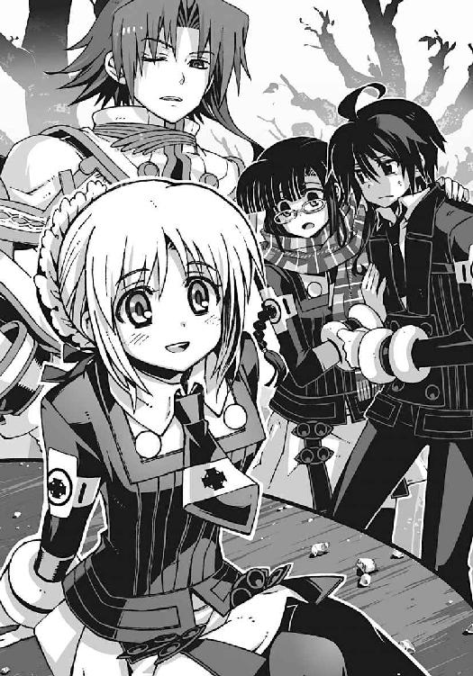
佐伯玲士郎に取り憑いていた幽霊の少女。機巧魔神《翡翠》の副葬処女。いつも儚げに微笑んでいた、無感情で物静かな少女。それが僕の持っている志津間哀音という少女の記憶だ。
目の前の冷凍マグロ少女は、たしかに彼女と同じ顔をしていた。けれど、まるでイメージが違っていた。感情豊かで表情がくるくると変わる。悪戯っぽく微笑んで、悪びれた様子が微塵もない。どちらかといえば、操緒によく似ている。
屈託なく微笑みかけてくる哀音の表情に、僕は胸が締めつけられるような息苦しさを感じた。
性格が違っているのではない。こちらの彼女が、本当の哀音なのだ。
機巧魔神の生け贄として魂を磨り減らし、感情を失う前の本来の彼女──
「知ってる......きみは僕を知らないかもしれないけど、僕はきみのことを前からずっと......」
僕は掠れた声でそう呟いた。
哀音は、唇を噛んでいる僕を不思議そうに見返して、
「わっ、なんだか愛の告白みたいなセリフだね」
ふわり、と柔らかく目を細めた。妙にうきうきと嬉しそうだ。
「あ、いや、そういう意味じゃなくて」
僕は慌てて首を振った。にこにこと微笑んでいる哀音を見て、嘆息する。この無責任なノリ、本当に操緒みたいだ。
そんな僕たちのやりとりを、佐伯兄はやれやれという表情で眺め、
「そこの生徒、怪我をしているな。黒崎くん、彼の手当てを頼む」
そう言って彼は、すぐ隣に控えていた女子生徒を呼んだ。
「はい。会長」
佐伯兄の背後から歩み出たのは、モデルみたいなルックスの背の高い女子生徒だった。肩口のあたりで切り揃えた髪とセルフレームの眼鏡が、凜々しい顔立ちによく似合う。
彼女の姿に僕は硬直する。〝二巡目の世界〟で、僕たちのもっとも身近にいた上級生。科學部部長代理の黒崎朱浬。しかしこちらの世界の彼女は、僕を見ても、眉ひとつ動かさなかった。
「朱浬さん......？ その服は......」
僕は驚いて思わず訊いた。彼女が着ているのは、佐伯兄のものとよく似た純白の改造学生服だった。私服を含めても、朱浬さんが白い服を着ている姿は初めて見た気がする。ちょっとしたカルチャーショックかもしれない。
「生徒会役員の制服よ。怪我、見せて」
しかし彼女は、事務的な口調で素っ気なく答えただけだった。
ひどく切ない気分になる。この白朱浬さんが悪いわけではない。彼女は、ごく当然の反応をしただけだ。僕が知っている黒崎朱浬という女性はもういない。彼女は〝二巡目の世界〟で殺されたのだから。
「傷口がしみたの？ そんな大げさな怪我には見えないけど、病院に行く？」
涙をこらえている僕に気づいて、白朱浬さんが訊いてくる。
「あ......いえ。すみません、なんでもないんです」
僕は小さく首を振った。他人行儀な彼女の口調のせいか、不思議と哀しみは湧いてこなかった。この人は、僕が知っている朱浬さんとは違う。ただそれを実感しただけだ。
一方そのころ、お尻を押さえて立ち上がった哀音が、悪戯っぽい表情で佐伯兄に耳打ち。
「シロくん、どうしよう。哀音、彼に告白されちゃったかも」
「告白？」
怪訝そうに眉を寄せる佐伯兄。僕は慌てた。なに勝手なこと言ってんだ、このマグロ女は。
「だから違いますって。そういう意味では全然なくて」
事実上初対面の生徒会長に、僕が必死に言い訳をしようとしていると、
「夏目？ こんなところで氷まみれでなにを......お兄様も？」
さらに背後から聞き覚えのある声が聞こえてくる。
見覚えのある自転車を押しながら近づいてきたのは、クラスメイトの佐伯玲子だ。
次から次に現れる知り合いの姿に、僕の脳は、処理能力を超えて軽くパニックになった。正門前のような目立つ場所で騒いでいるから、人目についてしょうがない。なるべく目立たないように過ごそうとしていた、僕や嵩月の努力が水の泡だ。
「お、佐伯」そこにさらに悪目立ちする黒マント男が乱入してくる。「こんな早朝から会えるなんて偶然だな。二人の運命を感じるぜ！」
「げっ、樋口。なんであんたまで......いいから、その気色悪いマントをどうにかしなさいよ！」
恥ずかしげもなく臭いセリフを叫ぶ樋口と、甲高い怒声を張り上げる佐伯妹。どうにもならないくらい目立ちすぎている。マフラーで顔を隠したまま、おろおろとうろたえている嵩月。こんなに大勢が集まってきたら、嵩月の正体に気づく生徒が出てくるのも時間の問題だ。
「行こう、嵩月......」
僕は嵩月の手を握って、小声で彼女の耳元に囁く。こくり、と無言で頷く嵩月。
樋口たちの見物に集まってきた野次馬にまぎれ、僕たちは気配を殺してその場を立ち去る。
朝陽を浴びたクラッシュアイスが、きらきらと宝石のように輝いていた。
冷凍マグロは、今も地面に突き刺さっている。
○
正門をくぐると、そこには非日常が広がっていた。
校舎へと続く道の両脇には、夜店のテントがずらりと並んでいる。教室や廊下のあちこちに、手書きのポスターや立て看板。ライトアップされた校庭の樹木には派手な電飾が施されている。
いつもの洛高の姿ではない。ほんの数日前、夜中に校舎に忍びこんだときには、こんなことにはなっていなかった。
「なんだ......これ」
とりあえず僕は呻き声を洩らす。もちろん授業は行われていないが、校舎内には生徒の姿が多い。ほとんどの生徒が登校してきているような印象だ。
「お祭りの準備......かも」
嵩月が、冷静に分析する。たしかに文化祭や体育祭直前の雰囲気によく似ている気もするが、
「うちの学校の文化祭......は、もう終わってるよな」
「ですね」
僕と嵩月は二人で顔を見合わせて困惑する。そんなとき、僕は、校舎の前に所在なげに立つ一人の生徒に目を留めた。どこか少し頼りない雰囲気の、小柄な背中。誰かと待ち合わせでもしているのか、たまに腕時計を見て、不安そうに周囲を見回している。
彼女が顔を上下するたびに、両脇で束ねた髪がぴょこぴょこと跳ねる。まるで垂れ耳のウサギのように。そんな彼女の髪型には見覚えがあった。
「ひかり先輩！」
ゆっくりと近づきながら、僕は彼女に手を振った。
その女子生徒は、びくり、と驚いたように顔を上げた。両サイドに束ねた髪が跳ね上がる。なんだか小動物じみた所作がいちいち可愛らしい。
「は、はいっ！」
少し舌足らずな声が聞こえてくる。彼女は、ほとんど〝二巡目の世界〟にいたころと変わっていない。特に大人っぽくなったということもなくて、むしろそれがホッとする。
「ひかり先輩ですよね？」
いちおう確認のために僕が尋ねると、
「はい。ご、ごめんなさい。沙原ひかりです。生徒会の会計係です......」
ぺこぺこと礼儀正しく頭を下げるひかり先輩。予想外の大げさなリアクションに僕は戸惑い、
「いや、その、謝っていただかなくても」
しかし先輩の緊張は解けない。むしろ僕の顔を見たことで、彼女はほとんど泣き出しそうなほどに怯え、
「あ、あなたは......夏目智春くん......ですか？」
「はい。まあ、いちおう」
正確にはこの世界の夏目智春というわけではないが、かといって、ほかに名乗る名前があるわけでもない。そんな僕のことをひかり先輩は、潤んだ瞳で凝視しながら、
「あの......私、なにかしたんでしょうか？」
「え、なにかって？」
質問の意味が不明すぎた。ひかり先輩は、ひく、と息を呑み、
「その......誰かに呪われるようなことを......」
消え入りそうな声で質問するひかり先輩。僕はさすがに混乱して、
「は、はい？ なんで僕が先輩を呪わなければならないんですか」
「だ、だって、夏目くんって、あの洛高の魔女さんの彼氏、なんですよね？ 六夏ちゃんが、前にそう言ってたから......」
半泣きの表情で、ひかり先輩が説明する。僕の横に立っていた嵩月が、その瞬間、奇妙な気配を発したような気がしたが、振り向いても彼女の横顔にはなんの感情も浮かんでいなかった。気のせいか？
まあともかく、ひかり先輩が怯えている理由はよく理解できた。
「......六夏......あいつが元凶か」
圧し殺した低い声で僕は呟いた。ひぃ、と身を縮こまらせるひかり先輩。僕は焦って、無理やりな笑顔を作る。ひかり先輩が悪いわけではない。
「大丈夫です。アニアは他人を呪ったりしない......こともないですけど、ひかり先輩には手を出しませんし、そもそも僕はあいつの彼氏じゃないですから」
「ほ......ホントに？」
「ただ、先輩に訊きたいことがあっただけで」
「訊きたいこと、ですか？」
ようやく警戒を解いたひかり先輩が、少し不思議そうに僕たちを見た。僕は、疲れた溜息を挟んで、お祭りムードの校舎を指さすと、
「はい。この校舎......なにがあったんですか。みんな、なにをやってるんです？」
「え？ クリパの準備のことですか？」
逆にびっくりしたような顔で、ひかり先輩が訊き返してきた。
「くりぱ？」
僕と嵩月が、まったく同時に、二人同じ角度で首を傾げた。ひかり先輩は微笑んで、
「クリスマスパーティです。洛高最大のイベントですよ」
ああ......と僕は声を洩らした。そういえば、そんな季節だった。普段はあまり意識しないが、いちおう洛高はミッション校で、たしかにクリスマスは重要な行事のひとつだと聞いている。
「大がかり......なんですね。すごく」
嵩月が感嘆したように呟いた。たしかにな、と僕も同意。なにしろ家庭科部が冷凍マグロの解体ショーをやるくらいだからな。
ひかり先輩は、驚く僕たちを見てクスクスと微笑んで、
「そうですよ。うちの学校の伝説って知ってます？」
「伝説？」なんだそれ。
「クリスマスパーティの夜に校舎の中で女の子から告白したり、中庭で女の子から告白したり、校庭で女の子から告白したり、通学路の途中で女の子から告白したりして生まれたカップルは永遠に幸せになるって言われてるんですよ」
「......めちゃめちゃアバウトな伝説ですね......場所を限定する意味あるんですかそれは」
クリスマスパーティは関係なくないか、と思ったが、ひかり先輩がうっとりした表情を浮かべていたので、あえて指摘するのはやめておく。
「まあ......みんなが張り切っている理由は、なんとなく理解できました」
ありがとうございます、と僕は、ひかり先輩に礼を言う。ひかり先輩は、そんな僕と嵩月のことを、なぜか興味津々の眼差しで見比べて、
「うふふ。そちらの彼女も、頑張ってくださいね」
からかうようなひかり先輩の軽い言葉に、嵩月がかーっと頬を赤らめた。社交辞令のような挨拶に対する思いがけない過剰反応に、僕は少し驚いた。さすがに気になって、というよりも半分は嵩月の横顔に見とれていると、
「ちわーっ！」
「ぐわっ」
威勢のいい掛け声とともに背中に凄まじい衝撃を感じて、僕は校舎の壁まで吹っ飛ばされた。
衝撃の原因は台車だった。プラスチックコンテナを満載した台車が、ものすごい勢いで背後から突っこんできて、僕のことを撥ね飛ばしたのだ。
「あ」
壁に激突して呻く僕を見て、嵩月がぽかんと目を丸くしている。そして、
「ども、遅くなりましたッス。パンのお届けに上がりましたッス！ なんか、ぶつかっちゃったッスか？」
台車を運んできた男が、へらへらと皮肉っぽい笑みを浮かべながら、帽子を取った。
パン屋のマークがついた作業服の若者。いつも笑っているような、胡散臭いタレ目の少年だ。そいつの名前を、僕は知っていた。瞬時に感情が沸騰する。
「ま、真日和！ おまえっ！」
切れた唇を拭って立ち上がると、僕は作業服の男につかみかかった。タレ目は驚いたように上体を仰け反らせて、
「ちょ......ストップ、ストップ！ なんでいきなりそんな激怒しちゃってるんスか!? 落ち着いてくださいよ。このパック牛乳、おまけするッスから」
「そんなんいるかっ！ おまえは......おまえのせいで......」
男の襟首をつかんで、僕は奥歯を軋ませた。直貴や朱浬さんを死に至らしめ、瑤の機巧魔神《白銀》を破壊した。そんな結果を招いた原因のひとつが、この男の裏切りだ。〝二巡目の世界〟で、こいつは僕たちの敵だったのだ。だが、
「夏目くん......」
嵩月が静かに僕を呼んだ。彼女が自分の掌を、そっと僕の手に重ねてくる。
僕は真日和をつかんでいた腕から力を抜いた。
わかっていた。ここにいる真日和は、僕たちの知っているあの男ではない。
僕の腕から解放された真日和が、わけがわからないというふうに首を捻り、そんな僕たちのやりとりを見て、ひかり先輩は涙目でうろたえながら、
「あ、あの......す、すみません。夏目くん。私のせいですか。私がこんな通路の真ん中で立ち話をしていたせいで......」
「いえ......すみません。ひかり先輩には、なんの責任もないんです」
僕はそう言いながら、真日和の手からパック牛乳を奪い取る。結局、飲むんじゃないッスか、と唇を尖らせて真日和。
「あの、夏目くんって真日和くんと知り合い、なの？」
ひかり先輩が、少し不思議そうに真日和に訊いた。真日和はおざなりに首を振り、
「や、どうなんスかね。あんまり覚えてないッスけど......そうだ、あんた。うちの娘の写真、見ます？ 美々安っていうんですけどね」
「......娘？」
当惑する僕に、真日和は気持ち悪いほどの笑顔で頷き、パスケースに入った写真を差し出してきた。その写真をのぞきこみ、僕と嵩月は同時に息を呑んだ。
生後半年くらいの赤ん坊と、それを抱いている女性の写真だった。女性は若い。若すぎる。せいぜい十七、八といったところ。ひかり先輩や嵩月とほとんど変わらない。彼女がこの赤ちゃんの母親ということか。しかも、その赤ちゃんが真日和の娘ということは──
「そっか、真日和くんが結婚して、もう一年近く経つんだねー」
ひかり先輩が少し懐かしそうな声で言った。
「け、結婚？」
僕は声を裏返らせて叫んだ。
「やあ、照れるッス」
溶けるような笑顔で頭をかく真日和。僕は震える手で写真を指さし、
「って、真日和の娘？ 結婚したって......じゃあ、この人が真日和の奥さんってこと？」
「あ......ご結婚おめでとうございます」
嵩月がおっとりとした口調で祝辞を述べた。
「や、ども。どもッス。恥ずかしながら洛高を中退して、一家を支えて働いてるッス」
そう言って、作業服の胸を張る真日和。そうか。こいつがパンを満載した台車を運んできたのは、そのせいか。でもって生徒会会計のひかり先輩は、パンの受け取りをするためにここで真日和を待っていた、と。
「夏目くん、どうしたの？」
呆然と立ち尽くす僕を見て、ひかり先輩が心配そうに訊いてくる。僕はハッと我に返った。あまりにもいろんなことがありすぎて、軽い放心状態に陥っていたようだ。
「すみません。軽い頭痛が」
僕は弱々しく笑って首を振る。
「お、額から血ィ出てるッスよ？ 保健室に行ったほうがいいんじゃないッスかね」
娘の写真を眺めて上機嫌の真日和が、妙に親切な口調でそんなことを言ってくる。
「そうするよ」
今さらおまえのせいだ、とも言い出せず、僕は投げやりに肩をすくめた。
○
嵩月に付き添われて、保健室に移動した。
真日和に言われたから、というわけではなく、ほかに行くあてがなかったからだ。アニアに言われて学校に来たのはいいが、なにをすればいいのか、実はまだよくわかっていない。なにか見せたいものがあるという話だったが、結局それがなにか聞きそびれてしまっていた。
保健室が近づいてくるに連れ、どんよりと気分が重くなってくる。あまり認めたくないことだけれど、それは嵩月が僕の隣にいるせいでもある。
この世界に飛ばされてきた最初の夜。この保健室で、僕は嵩月のことを好きだ、と言った。しかし彼女からの返事はなかった。
その言葉は、どうやら嵩月の中では聞かなかったことにされているらしい。こういう状態を世間では、一般的にフラれたと呼ぶのではなかっただろうか。
そんなに落ちこんでるつもりはないのだが、さすがに嵩月に連れられて、あの日と同じこの保健室に来るのは、精神的に少し厳しいものがある。
「すみませーん」
僕はほとんどやけっぱちな気分で、保健室のドアを乱暴に開けた。鍵はかかっていなかった。
「ちょっと怪我しちゃって......包帯とガーゼ、もらえます？」
保健室の奥に向かって呼びかける。しかし養護教諭の返事はなかった。保健室の中に彼女の姿は見あたらない。
代わりに、ベッドを周囲を仕切っているカーテンが揺れた。薄水色のカーテンの隙間から、制服姿の女子生徒が顔を出す。
「養護の滝原先生は不在です」
その女子生徒は僕を見て、恭しく頭を下げながらそう言った。ほっそりとした体型と、長い黒髪。ゾッとするほどに整った顔立ち。生気をあまり感じさせない、妖精めいた美少女だ。
「鳳島でもよろしければ、応急処置のお手伝いはさせていただきますけれども」
慇懃な口調で女子生徒が告げた。穏やかに微笑む彼女の姿に、僕は一瞬、呼吸を忘れた。引きつるように唇を震わせ、かろうじて彼女の名前だけを口にする。
「......と、鳳島氷羽子」
「はい」
「どうして......ここに」
「鳳島が、その質問に答える義務はありますか？」
氷羽子が淡々と問い返す。彼女の思いがけない反問に、僕は戸惑った。
「いや、それは......」
しかし氷羽子は、僕の答えを待たず、
「そうですね。べつに隠し立てすることではありません。怪我人の付き添いです」
「怪我人？」
「兄です」
そう言うと氷羽子は、自分の背後のカーテンを開けた。保健室のベッドの上には、男子生徒が一人で寝ていた。銀髪っぽく染めた髪を逆立てた、あまり賢くなさそうな男子だ。
どう見ても洛高の制服が似合わないその男は──
「......鳳島蹴策!? え、兄？ お兄さん？」
げっ、と呻きながら、僕は鳳島蹴策と氷羽子を見比べた。氷羽子は静かに首肯して、
「はい。法律的には傍系２親等の年長の男性ということになります。生物学的にも鳳島蹴策は、鳳島氷羽子と両親を同一とする個体です」
「あ、そう......だったのか......」
似てない兄妹だな、と思いつつ、やっぱりという思いもあった。鳳島の名前を持つ氷使いの悪魔。無関係ではないだろうとは思っていたけれど。
とはいえ、こちらの世界では、彼らも悪魔というわけではないんだっけか。
「えーと、彼は、どうして負傷を？」
あまり彼女たちと関わり合いになりたくはなかったが、いちおう気になったので訊いてみる。
氷羽子は、少し表情を曇らせて、
「鳳島にもよくわからないのですが、目撃者の証言を総合すると、登校中に坂の上から降ってきた冷凍マグロに轢かれたそうです」
「マ、マグロ......」
氷羽子は半信半疑の口調だったが、僕には心当たりがありすぎた。哀音の犠牲者がここにもいたのか。しかしその事実を鳳島が知ったら、間違いなくまた佐伯兄と喧嘩になるだろう。巻きこまれると面倒くさいので、黙っていようと僕は思う。
氷羽子は、そんな僕の反応を不審に思ったのか、
「なにかご存じなのですか？」
僕は慌てて話題を変えた。
「あ、いや、そうじゃないけど。ええと、それで、きみが付き添いを？ 仲いいんだ？」
「兄妹、ですから」
そう呟いた一瞬だけ、氷羽子の表情が温かいものに変わった気がした。
彼女たち兄妹の絆の強さが、それだけでもよくわかった。
だがしかし──と、僕は思う。だったらどうして〝二巡目の世界〟で、鳳島は氷羽子のことを妹ではないと否定したのだろう。そして氷羽子は、なぜ鳳島にきつく当たっていたのだろう。そもそも、氷羽子はなんのために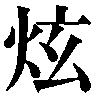塔貴也に協力したのだ？ ほとんど接点のなさそうなあの二人が、危険を冒してまで契約したのはなぜだ？
そこになにか重大なヒントが隠されている。そう感じた。しかしそんな僕の思考を、ひんやりとした感触が遮った。嵩月だった。真剣な表情の嵩月が、なぜか僕の手を、ぎゅっ、と強く握っていた。まるでこれ以上、氷羽子と会話するなと言わんばかりに。
「嵩月？ どうしたの？」
僕は軽く動揺して、僕の手を握る彼女を見た。
「......あ、いえ」
嵩月は硬い表情で首を振り、
「嵩月......だと!?」
そのとき、死んだように眠っていた鳳島兄が、むくり、と垂直に上体を起こした。鳳島兄は血走った目で保健室の中をぐるぐると見回し、馬鹿でかい声で、
「まさか我が校が誇るアイドルの嵩月奏ちゃんか？ 奇跡の生還を遂げた巫女っ子なのか？ ど、どこに......!?」
「......お兄様」
冷え冷えとした氷羽子の声が、鳳島兄の浮かれた言葉を断ち切った。
鳳島兄の顔面から、サッと音を立てて血の気が引いた。
「......げっ、氷羽子!?」
「お兄様は、やはり私よりも嵩月さんのほうが大事なのですか？」
半眼になった氷羽子が、静かに鳳島兄を問い詰める。鳳島兄は激しく首を振り、
「な、何を言うんだ、氷羽子。おまえのことが一番大切に決まってるじゃないか」
「信用しても、よろしいのですか？」
「も、もちろんさぁ」
白々しい声で必死に弁解する鳳島兄。いちおう氷羽子だけでなく、鳳島兄も妹のことを大切に思ってはいるらしい。しかし、それでは余計に〝二巡目の世界〟との矛盾が広がる。
「なんなんだ、いったい......なにがどうなって......」
僕はひどく混乱しながらも、鳳島兄妹の矛盾を解き明かそうと考えこみ、
「行きましょう、夏目くん。ダメです、ここにいては」
そんな僕の腕を嵩月が無理やり引き寄せた。
「え。だけど、治療がまだ」
このまま外に出たら、なんのために保健室に来たのかわからない。しかし嵩月は恐い顔で、
「ダメです」
鼻先がぶつかりそうなほどの至近距離で彼女に睨まれ、僕はあっさり自分の主張を取り下げた。さすがに今の彼女に逆らう気にはなれなかった。それに実はさっきから、つかまれた腕が彼女の胸に当たっていたりして、すでに抵抗する気力が失われている。
「わ、わかったよ」
嵩月に引きずられるようにして、僕は再び廊下へと戻る。
保健室の中からは、懸命に妹に謝り続ける鳳島兄の声が、いつまでも聞こえ続けていた。
○
校舎内では、四日後に迫ったクリスマスパーティの準備が、本格的に始まっていた。
校内の飾りつけをしている者。バンド演奏や演劇の練習をしている者。仮装用の衣装を縫ったり、巨大なオブジェを作ったりしている者。教室の中だけでなく廊下にも溢れて、生徒たちは忙しく走り回っている。僕や嵩月がまぎれこんでも目立たないのは有り難かったが、その代わり、いつ知り合いに遭遇するかわからないので、気が休まる暇がない。
「お、いたいた。智春、嵩月。どこ行ってたんだよ、おまえら」
そんなとき誰かに名前を呼ばれて、僕はビクッと足を止めた。振り返ると、黒マント姿の怪しい男が近づいてくるところだった。
「樋口」
「おう。なんだか、ちょっと見ない間にやつれたな、智春。大丈夫か？」
「......まあね。いろいろとショックなことがありすぎて」
馴れ馴れしく顔をのぞきこんでくる樋口に、僕は弱々しい笑顔で答えた。
「ふーん。なんだかんだで、違う世界から来たんだもんな」
勝手に納得したように呟く樋口。
「だったら、教室には連れて行かないほうがよさそうだな。クラスメイトだって全員知ってるわけじゃないだろうし」
「うん......そうだね」
たしかに現状ではそれは避けたい。また妙なトラブルに巻きこまれそうで恐い。
うーん、と樋口は少し考えこんで、
「だったら、科學倶楽部の部室に行ってるか。ニアっちもそろそろ登校してくるはずだしな」
「ああ、そうしてもらえると助かるかも」
「じゃあ、そういうことで。これ、部室の鍵な。こないだ誰かに扉ごとぶっ壊されて、後始末に苦労したんだ」
「ははは......」
僕は笑ってごまかしながら部室の鍵を受け取った。部室の扉が破壊された原因が、僕が連れてきた秋希さんの抜刀術のせいだとは、さすがに言えない。
とりあえず嵩月を連れてこの場を離れよう、と思ったとき、
「あ......待って」
嵩月が僕の手を離して、立ち去ろうとしていた樋口を呼び止めた。
樋口も不思議そうに振り向いて、
「ん？ どうした、嵩月？」
あの、と嵩月は、なぜか言い出しにくそうに頬を赤らめ、
「相談、したいことが」
きょとん、と樋口は眉を上げ、
「相談？ 俺に？」
「はい。あ......できれば、二人きりで」
「え？」
思わず僕の顔が引きつった。しかし嵩月は振り返らない。樋口はますます怪訝な顔になって、
「智春がいたらできない話？」
「............」
嵩月は少し迷ったあとで、こくり、と小さく頷いた。
「ふーん。じゃあ、学食にでも行ってみるか」
カリカリと頭をかきながら、気楽な口調で呟く樋口。嵩月も特に不満はないらしく、樋口のあとについていく。
「じゃあ、智春。あとで合流すっから、部室で待っててくれ」
樋口はそう言って右手を挙げた。それから、思い出したように僕の傍に寄ってきて、
「安心しろ。嵩月に手を出したりしないから......ふひひ」
それだけ言い残すと、嵩月と連れだって去っていく。そんな樋口たちを見送って、
「ふひひってなんだよ」
僕は小声で悪態をついた。科學倶楽部の部室の鍵を握りしめ、とぼとぼと歩き出す。
あまり考えないようにしようとは思ったが、嵩月の相談とやらの内容は、やはりどうしても気になった。僕には聞かせられない内容で、よりによって樋口に相談。思い当たることは多くない。やはりこないだの保健室での一件か。
「............」
騒々しい校舎の中で一人きりになると、急に心細い気分になった。
自分が見知らぬ場所にいるのだと、今さらのように実感する。遠い昔に忘れてしまった、頼りなく寒々しい感覚を思い出す。それは孤独という感覚だった。自分の中に、ぽっかりとなにかが欠けているような感覚。無意識に右肩のほうを見上げている自分に気づいて、僕は苦笑。
そうか、と僕は自分の胸を押さえた。そうか、操緒がいないせいか。
「智春？」
ひどい寂寥感に俯いていた僕は、緊張感のない声に呼ばれて顔を上げた。
「なにしてんの、こんなところで？」
意外なほど近い場所に、ジャージの上着に制服のスカートという、活動的な出で立ちの女子生徒が立っていた。よく動く大きな瞳が印象的な少女。大原杏だ。
「......杏」
「わっ、どうしたの、その怪我」
杏は僕に答える余裕も与えず、傷だらけの僕の全身を見回し、
「これは、その、マグロとパン屋に轢かれて......」
「マグロ？ パン屋さん？」
わけがわからない、というふうに首を傾げる杏。まあ、普通はそうなるよな。しかしほかに説明のしようもない。杏がやれやれと首を振り、
「もう、しょうがないなあ。ほら、こっち来て」
杏の小さな手が、意外なほど強い力で僕を引きずっていく。
「え？ ちょっと......」
杏に連行されながら、僕は妙に懐かしい風景を思い出していた。あれは中学に入学した直後のこと。まだ樋口とも出会う前の話だ。飛行機事故で操緒が行方不明になって幽霊憑きという噂が流れ、学校で孤立していた僕に、物怖じせずに声をかけてきたのが杏だった。
あのときも彼女は僕をこうやって引きずって、陸上部の部室に連れて行ったのだ。
そこまで思い出して、僕は、ひどく哀しい気持ちになった。
僕の記憶の中にいる杏は、今ここにいる杏じゃない。
「もう。けっこうひどい打撲じゃん。今はよくても、明日になったら腫れるよ、これ」
「あ、うん......」
女子陸上部の部室から救急箱を持ち出してきて、杏は手際よく治療を始めた。僕の制服も無理やり脱がせて、背中にぺたぺたと湿布を貼っていく。
「なんだか、久しぶりだね。智春とこうやって二人で話すの」
やたらしみる消毒液を噴きかけながら、杏が言った。僕はとぼける。
「そうだっけ」
「そうだよ。部活も勝手にやめちゃうし、バイトもずっと休んでるしさ」
「......悪い」
本当に申し訳ない気分になって、僕は素直に謝った。実は身に覚えのない話なのだが、これも連帯責任というやつだ。まったく、と僕は心の中で舌打ち。直貴のやつ、ちゃんとフォローしておけよな。
杏は、もう、と嘆息して、
「うちのお父さんたちも寂しがってるんだからね。たまには晩ご飯だけでも食べにおいでよ。潮泉さんも一緒でいいからさ」
「潮泉さん？」
彼女の口から出てきた予想外の名前に、僕は戸惑う。杏は、ぱちぱちと瞬きして、
「ニア子さん。同じ下宿に住んでるんでしょ。大家さんの娘さんって言ってたじゃん。金髪の」
「潮泉ニア子......？ って......ああ、そうか」
アニアのことか、と僕は気づいた。
〝二巡目の世界〟から五年前に飛ばされたアニアは、本来、こちらの世界にはいない存在だ。当然パスポートも戸籍もない。そのままでは、まともな社会生活を送ることが不可能だ。だから彼女は、潮泉家を頼ったのだろう。
潮泉家の財力をもってすれば、アニアの身分をごまかすくらいは簡単だ。かくしてアニアは、潮泉ニア子というかなりいい加減な戸籍を手に入れ、今に至るというわけか。
ふむふむ、と僕が一人で納得していると、
「智春？」
いつになく真面目な表情で、杏が顔を寄せてきた。意外に大人びた彼女の表情に、僕は少しドキリとした。ふと思い出す。ここは本来の僕の世界よりも、一年だけ時間が進んでいる。今の彼女は一年後の、成長した姿の杏なのだ。
「なんか......背、縮んだ？」
杏の言葉に、心臓が撥ねる。彼女が一年ぶん成長しているということは、逆にいえば、僕は一年若返っているということでもある。親しくない人間なら気づかない程度の差異でも、身近な人間なら違和感に気づくかもしれない。実際、アニアが僕のことを、直貴と間違ったことは一度もなかった。
「き、気のせいじゃないか？」
それでも僕はごまかすしかない。杏は、ムッと顔をしかめて、
「なんか、顔立ちも幼くなってるような気がする」
予想以上に杏は鋭い。アスリートのカンというやつなのか。
僕はだらだらと冷や汗を流し、そして杏は、
「あなた......誰？」
見知らぬ人間を見るような瞳を、僕に向けてきた。
「え......」
「似てるけど......智春じゃない......」
「杏。違う......僕は......」
僕は本気で否定する。たしかに僕は、この世界の夏目智春ではない。それでも間違いなく夏目智春なのだ。そんな僕の気迫が伝わったのか、杏は、ほんの少しだけ迷いを浮かべ、
「じゃあ、あのときの返事を聞かせて」と言った。
「へ、返事？」
それはいったいなんの返事なのでしょうか。
「あのときの告白の返事」
「こ......告白？」
なんだって。そんな話は聞いてないぞ、直貴のヤツ。
たじろぐ僕に、杏は、ぐい、と顔を近づけて、
「智春があたしにキスしたこと、まさか忘れたわけじゃないわよね？」
「キ、キス......!?」
今度こそ心臓が止まるかと思った。僕の知らないところで、なにやってんだ、あの男は！
「や、覚えてる。覚えてるけど......そんなの急に言われても......」
とにかくこの場を切り抜けなければと、僕は適当に話を合わせ、
「かかったわね、偽物」
ゆらり、と立ち上がった杏が、勝ち誇ったように僕に指を突きつけた。
「え!?」
「告白なんてしてないよーだ！」
あかんべえ、のポーズで言い放つ杏。僕はしばらく動きを止めて、
「だ、騙したのかよ!?」
思わず抗議の声を上げた。杏は眉を吊り上げて、
「騙してるのはそっちでしょ。さあ、答えて。あなた、何者？ 答えないと、吉田先輩直伝のグライド投法が火を噴くわよ！」
部室前に置かれていたカゴから、砲丸を取り出して身構える杏。馬鹿やめろそんなもの人に向けるな危ないだろ、と僕は身を固くして──
そのとき突然、なにかが僕の中で音を立てて切れた。罪悪感が僕の許容量を超えて、なにもかも投げ出したい衝動に駆られた。これ以上、杏をごまかし続けることが、ひどく虚しく思えてしまったのだ。そう。彼女の言うとおりだ。
「騙してるのはこっちか......そうかもな。僕は杏の知ってる夏目智春とは違う」
「どういうこと？」
急に殊勝になった僕を見て、杏が声のトーンを落とした。
「それは......説明するとややこしいんだけど......」
僕は頭を抱えて言い淀む。苦悩する僕の姿を、杏は無言で眺めていたが、
「わかった！ 樋口のせいでしょ！」
しばらくして、唐突にそう叫んだ。僕は、ぽかんと彼女を見上げ、
「え？ 樋口？」
「樋口ってば、今度は智春になにやったの？ 催眠術？ 降霊術？ 禁断の人格転移の魔法？」
ぎりぎりと歯軋りしながら、まくし立てる杏。僕はそれをチャンスとばかりに、
「そ、そうなんだ。今の僕は樋口によって無意識の海から呼び覚まされた夏目智春の十三番目の人格なんだ。見た目が幼いのは、精神が肉体に与える影響的ななにかのせいで......」
とりあえず口から出任せを言ってみたのだが、
「やっぱり、そういうことだったのね......樋口のやつ。あとで陸上短距離用スパイクの錆にしてやるわ」
驚くほどあっさりと杏は信じた。すまん樋口、と僕は心の中で謝った。これも日頃の行いの報いだ。因果応報というやつだ、たぶん。
「元に戻るアテはあるの？」
杏が不安そうに訊いてくる。彼女が心配しているのは、ここにいる僕ではなく、もう一人の僕。この世界の夏目智春のことだ。
「うん......もちろん」
僕は口元だけで微笑んで、ぎこちなく頷いた。
杏は、華やかに表情を輝かせ、
「そっか。じゃあ、智春に伝えてくれるかな。早くしろって。大原杏が待ってるからって」
「わかった。伝えるよ、必ず」
苦い感情を呑みこみながら、僕は静かに頷いた。杏は微笑み、
「じゃあ、きみも元気でね。智春の十三番目の人格さん」
「あ、ああ。さよなら」
手を振りながら去っていく杏の背中を、僕は最後まで見送った。
最後にもう一度だけ、呟く。自分に言い聞かせるように。
「さよなら......杏」
○
科學倶楽部の部室には誰もいなかった。もともと周囲から隔離されているような、薄暗くて陰気な場所だ。だが、今はそれがむしろ有り難かった。
僕は部屋の隅で壁にもたれたまま、膝を抱えて、顔を伏せていた。
涙は流れていない。声も洩れない。ただひどく哀しいだけだった。僕が杏と交わした無責任な約束。その重さが心にのしかかる。決して果たされることのない約束。ほんの一瞬、彼女が傷つくのを先延ばしにするためだけの嘘。
〝一巡目の世界〟の智春は死んだ。杏の知っている彼が帰ってくることはない。彼女の願いが叶えられることはないのだ。永遠に。僕はそのことを知っていた。そして嘘をついたのだ。
「ぐ......」
僕は部室の壁を殴りつけた。
拳が裂けて血が滲んだ。けれど痛みは感じなかった。胸の奥の痛みが大きすぎて、感覚が麻痺してしまったのかもしれない。
もう一度、拳を振り上げ、力任せに壁に叩きつける。そしてもう一度。
その拳が、途中で誰かの手で止められた。
ふわり、と柔らかな体温が僕を包んだ。誰かが背後から僕を抱きしめてくれているのだ。甘い香りが広がって鼻腔をくすぐる。どこか懐かしい匂いだった。
「どうして泣いているの？」
背後から囁くような声がした。泣きたくなるほど、懐かしい声。おっとりとした独特のイントネーション。
「なにか哀しいことがあったの、トモハル？」
「朱浬......さん？」
僕はゆっくりと振り向いた。驚くほど近い距離に、大人びた少女の美貌があった。彼女は、色っぽく唇の端を吊り上げて、
「なんだか新鮮だわ。朱浬と間違われるなんて。ちょっと楽しいかも」
どこか愉快そうにそう言った。僕はそのとき初めて、彼女の胸にかかる長い髪に気づいた。彼女は、佐伯兄と一緒にいた白朱浬さんとは別人だ。飛行機事故で行方不明になったといわれていた、朱浬さんと同じ顔をした双子の妹──
「まさか。紫浬さん......なんですか？」
「正解......はい、ご褒美」
そう言って彼女は、小さい子どもにそうするように、僕の頭をぽんぽんと撫でた。その優しい感覚に、じわり、と僕は涙が滲むのを感じた。
「どうして......紫浬さんが、ここに？」
掠れた声で僕が訊くと、紫浬さんは少し拗ねたように唇を曲げた。
「だって、ここの部員だもの」
「部員？ 紫浬さんが？」
疑わしげな口調で僕が訊く。僕の記憶が間違っていなければ、こちらの世界の紫浬さんは、なにやら偉い映画監督に才能を見いだされた天才的な女優だったはずだ。女優活動をしながら高校に通ってもべつに悪くはないが、よりによってこんな怪しげな部に入部しなくても。
しかし紫浬さんは、平然とした口調で、
「そうよ。科學倶楽部元部長代理。今は引退しちゃったけどね」
「部長代理？ なんでまた、そんな、わざわざ......？」
混乱している僕のことを、紫浬さんは、しばらく面白そうに眺めていた。そして、
「ふふっ、きみはあたしが知っているトモハルじゃないのね。同じ顔だけど、違う......面白いわね、科学的に」
ぺたぺたと僕の顔を触りながら、そんなことを言ってくる。
「はあ」
なにが面白いのだろう、と僕は溜息。この人のほうがよっぽど変だと思う。
「それで、なにがあったの？ お姉さんに話してご覧なさい」
ふざけているような口調とは裏腹の、優しげな眼差しで紫浬さんが訊いてきた。奇妙に懐かしい眼差しだった。そんな彼女の瞳に誘われるように、僕は正直な気持ちを口にする。
「......知り合いが、死んだんです。大勢......傷ついた人たちも......」
自分が口にしたその言葉に、僕は思いがけず衝撃を受ける。僕の目の前で死んだ人間、その中には紫浬さんも含まれているのだ。〝二巡目の世界〟の紫浬さんは、彼女を封印していた機巧魔神《白銀》ごと冬琉会長に斬られて、完全に消滅している。
そして紫浬さんは僕を背後から抱きしめたまま、
「大切な人たちだった？」
その質問には迷う必要がなかった。僕は小さく頷いて、
「実の兄のような男と......姉のような先輩と......」
直貴や、朱浬さん。そして行方不明になった環緒さんたち。彼らの姿を鮮明に思い出す。
「あの人たちがいてくれたら......どんなときも絶対に大丈夫だって思ってました。どうしようもなく追い詰められたときでも、兄貴や朱浬さんがいてくれたら......なのに......」
今まで彼らの存在が、どれだけ自分の支えになっていたか、僕はようやく理解した。助けに来てくれなくてもよかった。彼らが生きていてくれるだけでよかったのだ。
自分がいつか彼らのようになれたら、どんなにか自由かと夢想していた。僕は彼らに憧れていたのだ。そして彼らを失うまで、僕はそんなことにすら気づいていなかった。
「......好きだったんだ、その人たちのことが」
紫浬さんの声が、僕の耳に優しく響く。
「はい」
僕は頷いた。よろしい、と紫浬さんは軽やかに笑って、
「それで、きみはなにをすればいいのかな、トモハル？」
「それは......」
突然の彼女の質問に、僕はハッと顔を上げた。
紫浬さんは続ける。
「彼らはきみになにを期待してたの？ 嘆き悲しむこと？ それとも彼らの仇を取ること？」
違う、と僕は心の内で叫ぶ。科學部は何のために創られた？ 直貴や朱浬さんは僕になにを望んでいた？ 僕が洛高に入学したあの日に、朱浬さんに言われた言葉を思い出す。
科學部の活動内容は黒科学の探究だ。
この狂った世界の謎を解き明かすために──
「僕は......真実が知りたいです。彼らが望んでいたことを今度こそ理解するために......」
紫浬さんは、優しく微笑みながら僕の言葉を聞いていた。
「ご褒美」
ぽんぽん、と彼女の手が優しく僕の頭を撫でる。そして彼女は不意に僕の正面に回りこむと、
「偉い子には、お姉さんがひとつだけ何でも願いを聞いてあげよう」
部室のパイプ椅子に座って、ちょっと偉そうにそう言った。
「願い......ですか？」
そんなことを突然言われても困るのだが。しかし紫浬さんは、ニヤニヤと笑って、
「そう。性的なお願いでも構わないわよ。Ｒ15指定くらいまでならね」
なんだか、まるで僕のよく知っている科學部部長代理みたいなセリフだ、と思う。そして、そのことで僕はふと閃いて、
「じゃあ。お願いしていいですか？」
「なあに？」
僕は少しまだ迷いながらも、覚悟を決めて、それを口にした。
「今だけ......あなたのことを朱浬さんと呼ばせてください」
紫浬さんは、驚くほどあっさりとそれを受け入れて、
「ふふ、オッケー」
長い髪を後ろでまとめてくれる。そうすると彼女は、ほとんど朱浬さんと区別がつかない。
「これでいい、トモハル？」
「はい」
微笑む紫浬さんに、僕は深々と頭を下げた。
こんなことをしても、自己満足に過ぎないことはわかっている。それでも言わなければ、と思ったのだ。朱浬さんが生きている間に伝えられなかった言葉を、彼女と同じ姿を持っているこの人に聞いて欲しかった。これまでの感謝と、そしてこれからの誓いを。
そして彼女に憧れていたことを。
「朱浬さん......あの、僕は......」
大きく深呼吸して僕は言葉を絞り出し、
「あ、ストップ」
それを紫浬さんは、お気軽な口調で中断させた。
緊張のピークからいきなり引きずり下ろされた僕は、ほとんど半泣きになって、
「なんなんですか、いったい!?」
「あー、いやいや。続けてもらってもべつによかったんだけどね」
ちらり、と悪戯っぽく舌を出して紫浬さんは笑った。
「でも、せっかくだから、そういうことは本人に伝えてもらったほうがいいのかな、と思って」
「本人っていっても......僕の知っている朱浬さんは、こちらの世界の白朱浬さんじゃなくて」
僕は恨みがましい目つきで紫浬さんを睨む。彼女は含みのある態度で微笑んで、
「ああ、うん。わかるわよ。事情はよくわからないけど、なんとなくわかる。だからさ」
自信に満ちた口調で、紫浬さんは断言した。
「生きてるわよ、彼女」
「......え？」
僕はだらしなく口を開けて紫浬さんを見つめた。ふふっ、と紫浬さんはおっとり微笑み、
「きみの知ってる、黒崎朱浬と名乗っているもう一人の女の子」
「そんな馬鹿な......だって、朱浬さんはあのとき、たしかに......」
冬琉会長の〝冬櫻〟で胸を貫かれ、氷羽子の使い魔に粉砕された。僕はそれをこの目で見たのだ。
「うん。でもね、彼女は生きてるわ」
紫浬さんは、力強く明言する。僕はふと思い出す。そう言えば、なぜかアニアも同じことを言っていた。直貴は自分が死ぬ前に、出来る限りの手段を仕掛けたはずだと。自分以外の誰も死なずに済むように。
もしもそれが事実なら、たしかに朱浬さんは生きている可能性がある。だがしかし、
「どうして、そんなことがわかるんですか」
僕は、真顔で紫浬さんを問い詰める。すると彼女は、〝二巡目の世界〟の機巧化少女にそっくりの表情を浮かべて、美しく笑った。
「女のカンよ。科学的でしょう？」
○
アニアが科學倶楽部の部室に現れたのは、それから間もなくのことだった。自販機のコーヒーをすすっていた紫浬さんが、ひらひらと手を振って彼女を出迎え、
「あら、ニアちゃん。お久しぶりね」
「......紫浬か......そこの智春はなにをやっているんだ」
部屋の隅で頭を抱えている僕を眺めて、怪訝な表情を浮かべるアニア。
「ふふっ、思春期の少年には、いろいろ悩みがあるものなのよ」
紫浬さんが、なにやらよくわからないことを言う。なんだそれは、とアニアが顔をしかめる。思春期はべつに関係ないですから、と僕は顔を上げて無言で抗議。
「智春と紫浬だけか？ 奏たちはどうした？」
アニアが、赤いロングマフラーをするすると解きながら訊いてくる。僕はふて腐れたように頬杖を突きながら、
「いや......嵩月が樋口に相談したいことがあるって言って......」
「おまえ抜きで？」
アニアが、ほう、と息を吐く。蔑むような視線を僕に向け、そのくせ妙に楽しげに、
「なにか奏を困らせるようなことでもしたのか？」
「いや......それは......」
いきなり核心を突いてくるアニアの質問に、僕はもごもごと口ごもる。
「ふん。それは面白いな。まあ、だいたいの事情は想像がつくが」
アニアが、白い歯を見せて晴れやかに笑う。
「なんでそんな嬉しそうなんだよ」
僕が唇を歪めて言うと、運喰らいの悪魔は素っ気なく醒めた口調で、
「なぜ私が、おまえがフラれたくらいで喜ばなければならないのだ」
「フラれたからとは限らないだろ！」
「ふん、まあいい。紫浬がいるのは好都合だ。来い、智春。おまえに見せたいものがある」
アニアが、落ちこむ僕を冷ややかに見下ろして手招きする。僕はハッとして立ち上がり、
「見せたいもの？ そういえば僕たちを学校に連れてきた理由って......」
「そうだ。口で説明するよりも、実際に見てもらったほうが手っ取り早いからな」
アニアはそう言って廊下に向かう。その先にあるのは、旧校舎の屋上に続く非常階段だ。僕は焦って彼女のあとを追いかけた。
「ふーん。なにを見せてくれるのかな」
僕の背後にぴたりとつけたまま、紫浬さんが愉しそうに笑う。アニアは真面目な顔で彼女を振り返り、
「むしろ見せないというべきかもな、紫浬。おまえにとっては」
「あら？」
紫浬さんは目を丸くして、不思議そうに首を傾けた。
アニアが非常階段の錆びた扉に手を掛けた。
「屋上？ 勝手に出ちゃっていいのか？」
「ああ。ここからなら障害物がない。よく見えるはずだ」
扉を開けると、そこには冬の空が広がっていた。ぼんやりと霞む青空。乾いた空気。見下ろす街並みも、うっすらと煙っている。なんの変哲もない、見慣れた街の風景だ。
「洛高から見て街の南側......川沿いの方角になにがあったか、覚えているか」
そう言いながら、アニアが僕になにかを渡してきた。軍用のごつい双眼鏡だった。
「なにがあったか......って、普通の団地だろ。倉庫街もあったっけ」
答えながら、僕は双眼鏡を目に当てた。アニアが、ふふんと唇を吊り上げ、
「そう思うなら見てみろ。本当にそんなものがあるかどうか」
「え？」
言われなくても、と僕は双眼鏡の視界をアニアの示す方角に向けた。そして息を呑む。
「なんだよ......これ」
僕の視界に入ってきたのは、現実の映像とは思えない奇怪な映像だった。透きとおった建物。凍りついた水晶のような街並み。そこに生きた人間の姿はなく、ただ透明な建造物の残骸が残されているだけだ。砂漠に残された遺跡のように、あるいは砂時計のように、風化して、さらさらと崩れ落ちていく。それとよく似た光景を、僕は前にも見たことがあった。
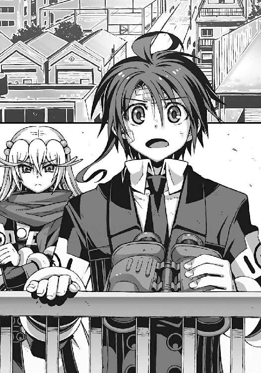
「街が......結晶化して......これじゃあ、クルスティナさんと同じ......」
「そう。非在化だ」
アニアが抑揚のない声で呟いた。
「なに？ なんのことを話してるの、二人とも？」
僕とアニアの会話を聞いて、紫浬さんが困惑顔になる。
そんな彼女の反応で、僕は気づいた。
紫浬さんには見えていない。彼女には、非在化しつつある風景が認識できていないのだ。
この世界の人間には、非在化した街の存在が理解できない。
加賀篝が、非在化して消滅したクルスティナさんの記憶を失ったように。
「これが、世界の綻び......滅びの前兆だ、智春」
アニアが独り言のように呟いた。無感情な彼女の声が、かすかに震えているようにも思えたのは気のせいか。
「この世界は、もうすぐ滅びる。しかしこの世界の住人は、自分たちが滅びつつあることすら気づいていない。気づくことができない。なぜなら消滅した世界を、人は認識することができないからだ。その世界の記録も記憶もすべて消える」
「世界の非在化......」
乾いた声で、僕は呻いた。このとき初めて僕は実感した。この世界に残された時間が、あとほんのわずかだということ。そして直貴が、機巧魔神を手に入れ、〝二巡目の世界〟に行かなければならなかった本当の理由。
「これが......あんたの見た景色だったのか......兄貴......」
誰にも届かない僕の言葉を、風がかき消していく。
三章
学校で用事を済ませていくというアニアと別れて、僕は一人で学校を出た。
向かったのは、旧校舎の屋上から見た、非在化した地区だった。よその世界から来た異邦の人間──〝悪魔〟である僕たちだけが認識できる場所。
風化したガラスの街。触れるだけで壊れていく、存在そのものが失われていく脆い世界。
「......これが、世界の非在化......か」
水晶細工の砂漠のような街を歩きながら、僕はなんとも言いようのない気分になる。
アニアの話では、この地区は、まだ完全には非在化していないらしかった。
非在化が完了すると、その場所はもはや残骸すら残らない。街を含む空間そのものが、この世界から消滅する。つまり、世界がそのぶんだけ小さくなる。やがて世界そのものが非在化を終えると、この世界は〝無〟となる。存在したという過去すら残らないのだ。
「......こんなの......どうすればいいんだ!?」
世界の非在化。そんなことが許されていいとは思わない。だが、それを知ってしまったからといって、僕になにができるというのだろう。
機巧魔神を失って、元の世界に戻る手段すら持たない無力な高校生に。
いや、違う。なにもできない、とは限らない。
ご褒美、と言って僕の頭を撫でてくれた、紫浬さんの手の感触を思い出す。
彼女が教えてくれたのだ。僕が、なにをすればいいのか。僕になにができるのか。
考えろ、考えろ、考えろ。朱浬さんなら、こんなときになにをする。直貴なら？ 彼らが、自分の無力さを理由に、諦めるとはとても思えない。きっと彼らは涼しげな顔で、この世界の不条理すらねじ伏せようとするはずだ。
「......どうする、夏目智春？」
僕は自分に問いかける。このふざけた世界を、いったい僕はどうしたい？
非在化進行中の不安定な地区に、あまり長く留まるな。アニアに言われた警告も忘れ、僕はその場に立ち尽くして考える。
そんな僕の後頭部を、まったく予期せぬ衝撃が突然襲ってきた。
「痛て！」
尖った凶器のようなもので頭をつつかれて、僕はたまらず悲鳴を上げた。続けて誰かが僕の髪を引っ張った。情け容赦のない乱暴さだった。
振り返った僕の視界を、灰色の巨大な翼が覆い隠す。
それは馬鹿でかい猛禽だった。フクロウだ。
音もなく上空から舞い降りてきたフクロウが、なにかを訴えるような仕草で僕を襲っている。このフクロウの名前を僕は知っていた。
鳥類の見分けなんかつかないが、こんな猛禽を放し飼いにしている非常識な飼い主が市内に何人もいるとは思えない。間違いない。橘高秋希のペットの──
「クロガネ......!? なんだよ、おい......痛ててててて！」
なぜかやたらと僕に懐いている巨大フクロウが、乱暴に僕の髪を引っ張った。僕を引きずってどこかに連れて行こうとしているのだ。しかしそのやり方はやめてくれ。ハゲたらどうしてくれるんだ。
「こっちに来いと言ってるのか？ いきなり襲ってきて、なんでそんな......」
思わず僕は抗議の声を上げるが、
──バサァッ！
クロガネが、巨大な翼を広げて僕を威嚇する。
「うわっ......わかったよ」
僕は交渉を諦めた。傍若無人なフクロウに引きずられるままに、非在化地区から立ち去り、見慣れた街に帰還する。車酔いのような、かすかな酩酊感が襲ってくる。不安定な世界の境界をまたぐのは、何度やっても慣れない気分だった。気持ち悪い。
通常空間に戻ってくると、そこは見覚えのある道だった。
川沿いにある閑静な住宅地。川の対岸に、木造の大きな屋敷が見える。時代劇の武家屋敷によく似た造り。剣術の道場だ。
それを見て僕はようやくクロガネの意図を理解した。この猛禽が、僕をどこに連れて行こうとしていたのか。
「そうか。橘高道場、か......」
僕の呟きに応えるように、クロガネは、ホゥと一声だけ鳴いた。
橘高道場の玄関で、僕を出迎えてくれたのは橘高姉妹の妹のほうだった。セーター姿で濡れせんべいを口にくわえたままの彼女は、特に驚いた様子もなく、
「あら、夏目智春」
「冬琉会長......すみません、急に」
僕は深々と頭を下げた。どうもこの人の前に出ると無意識に緊張する。
それは彼女が〝二巡目の世界〟で僕たちの敵に回ったから、というわけではなく、こないだ道場で足腰立たなくなるまでしごかれたせいだ。あれはほとんどイジメだった。おかげでいろいろと吹っ切れたのも事実だけれど。
冬琉会長はやれやれと息を吐き、
「だからあたしはもう会長じゃないっての。お姉ちゃんの見舞いに来てくれたの？」
「あ、はい。クロガネがどうしてもって」
「ふうん」
僕の肩にとまったフクロウを見て、彼女は素っ気なく呟いた。
「まあいいわ。入って。来客中だけど」
「来客？ いいんですか？」
「いいのよ。たぶんあなたの知ってる顔だし」
冬琉会長に案内されて、僕は秋希さんの部屋に向かった。
先日の財団との戦闘で負傷した秋希さんは、一週間の入院予定を無理やり二日で切り上げて、今は自宅療養中という話だった。鍛え方が違うのだ、とは秋希さんの言。医者に言わせると、あんなでたらめな患者には初めて会った、ということらしい。
そんな秋希さんの見舞いに来ている、僕の知り合い。いったい誰のことだ、と訝しみながら、僕は秋希さんの部屋の襖を開けて、
「うげ」
その場で硬直して立ち竦む。退屈そうにベッドで寝ている秋希さんの横には、どこか場違いな雰囲気の、見目麗しい人物が座っていた。ほっそりとした長身。彫りの深い顔立ち。おそろしく美形の男性のような女の人だ。
「雪原......瑤......」
その女の名前を口にして、僕は隣にいる冬琉会長の横顔を窺い見る。僕の脳裏に再生されたのは、〝二巡目の世界〟で壮絶な死闘を演じていた彼女たち二人の姿だった。
しかし、もちろん彼女たち自身が、そんなことを知るはずもない。
振り返った瑤は、僕を見てニヤリと微笑むと、
「夏目智春か、久しぶりだな......いや......ふーん......夏目智春、ね」
立ち上がって、無遠慮に僕に顔を近づけてくる。
男装の麗人に間近でじっくり観察されて、僕はじりじりと後ずさり、
「な、なんですか？」
「いや。べつに」
思わせぶりな口調でそう告げる瑤。まるで僕が、オリジナルの夏目智春ではないことに気づいているような態度だ。恐ろしい野生のカンだ。この人もやっぱり普通じゃない。
ついに壁際に追い詰められて、僕が脂汗を流していると、
「こら。そこの科學倶楽部。人の病室で怪しい空気を醸し出すのはやめてもらおうか」
ベッドの上で上体を起こした秋希さんが、冷淡な声で警告した。
枕の下から取り出した脇差を抜いて、パンクな髪型の少女が静かな殺気を漂わせている。
それを見た瑤は、芝居がかった仕草で肩をすくめて、
「ああ、悪いね。今日の主役はもちろんきみだよ、姫」
「誰が姫だ。そういう遊びはおまえの倶楽部の後輩の子とやれ」
冷たく瑤を突き放す秋希さん。なんでこの人は、枕の下に日本刀なんか隠してあるんだ。そんな秋希さんと対等に渡り合う瑤のマイペースもさすがだ。
冬琉会長は、そんな二人のやりとりを呆れ顔で眺め、
「お茶でも淹れてくるわ」
そう言い残して去っていく。もしかしたら逃げたのかもしれない、と僕は思った。常識人の彼女には、このような雰囲気は耐え難いだろう。僕だって出来ることなら逃げ出したい。
だが、まあ、それはそれとして、
「科學倶楽部？ 倶楽部の後輩って......え？」
秋希さんの奇妙な発言に気づいて、僕は、彼女たちの顔を見比べた。
「ひどいな。先輩の顔を忘れたのかい？ 夏目智春？」
瑤が愉快そうに笑って前髪をかき上げる。え、先輩？ 誰が、誰の？
「そいつは先代の科學倶楽部の副部長だ」
秋希さんが、脇差の柄で瑤を示しながら解説してくれる。
なんだそれ、と僕は思った。瑤は紫浬さんの１コ先輩なので、塔貴也と同じ学年のはずだ。塔貴也が科學倶楽部の部長で、瑤が副部長。なんという傍迷惑なメンバーだ。生徒会の連中が、科學倶楽部に手を出せなかった理由もよくわかる。
それに......なるほど、紫浬さんが科學倶楽部にいたのは、瑤が理由か。
「おやおや、もうこんな時間か」
高価そうな腕時計をちらりと眺めて、瑤が名残惜しそうに呟いた。
「残念だけど、そろそろボクは行かないと。ファンの子を待たせるわけにもいかないしね」
「ファン？」
僕は怪訝な心境で瑤を見返す。そういえば洛高を卒業して、この人はいったいなにをやっているのだろう。ホスト？
「ホストか。それも悪くないが、今は役者をね」
まるで心を読んだかのように僕の疑念を正確に把握して、瑤が答えた。
「役者？」
「そう。子ども向けの特撮番組とか」
「うわ......」
言われてみれば異様に似合うな。もちろん正義の味方ではなくて、悪の組織の美形幹部とか。
「そんなわけで、ボクは退散するかな。ついでにこれを渡しておくよ」
そう言って、瑤が、僕になにかを放り投げてくる。反射的にそれを受け取って、僕は表情を凍らせた。金属特有の冷たい感触と重量感。ジュラルミンの肌触り。それは小型のアタッシュケースだった。銀色のその輝きに、僕は嫌な予感を覚え、
「なんですか、これ？」
「ニア子からの頼まれものなんだ」と瑤。「彼女に渡して欲しい。きみにここで会えたおかげで洛高に行く手間が省けたよ」
「アニアからの頼まれもの？ 中身は......なんです？」
「女の子同士の秘密のアイテム」
「は？」
「見ないほうがいいと思うよ。きみの夢が壊れるかもしれない。ニア子の純情なイメージとか」
「はあ......見るなと言われれば見ませんけど」
よくわからないが、あまり関わり合いにならないほうがよさそうだ。そう判断した僕を見て、瑤は満足そうに微笑み、
「いい子だ。じゃあね。夏目智春によく似た誰かさん。ああ、見送りは結構だよ」
彼女は颯爽と部屋を出て行った。
遠くなっていく瑤の足音を、僕はひどく疲れた気分で聞きながら、
「結局なんだったんだ、あの人は」脱力しながら独りごちる。
「まったくだ......バナナ、喰うか？」
苦笑混じりに僕に同意して、秋希さんがバナナを、僕とフクロウにそれぞれ差し出してきた。
「あ、どうも。いただきます」
僕は礼を言ってバナナを受け取る。バナナはどうやら、瑤が持ってきたお見舞いの品らしい。
バナナの皮を剥きながら、僕はあらためて秋希さんの部屋を見回す。床の間には、ギターと日本刀。洋服ハンガーには革ジャンと剣道着。和風でありながらパンク趣味丸出しで、正直、あまり落ち着かない部屋だ。ニンジャとかサムライとかフジヤマとかの、間違った日本贔屓の外国人の自宅みたいだ。そのくせ女の子の部屋に特有の甘い匂いも漂っていて、それも落ち着かない理由のひとつだったりする。
クロガネも、器用に嘴で皮を剥いてバナナを食べていた。もそもそとバナナを咀嚼しながら、どうしてクロガネは僕をここに連れてきたのだろう、と考えこんでいると、
「ふぅん。少し見ないうちに、だいぶマシな面構えになったな」
そんな僕を眺めて、秋希さんが言った。なんのことだ、と僕は首を傾げて、
「そうですか......？」
「自分では気づかないか。それも悪くないな。桃、喰うか？」
「はい。ありがとうございます」
自分が変わったという実感はあまりなかったが、秋希さんに褒められると素直に嬉しかった。その勢いで彼女から桃を受け取って、さて、どうやって皮を剥こうかと僕が思案していると、
「ついでにこいつも持っていけ」
ごそごそとベッド脇の小物入れの中をあさって、秋希さんが手提げ袋を差し出してくる。瑤のアタッシュケースのことを思い出して緊張したが、今度は、ごく普通の紙袋だった。
「これは......？」
受け取ってみると、意外に軽い。中に入っているものは、なにかの布地に見える。ひらひらの薄いレースと、ピンクの水玉模様の──
「おまえの彼女の忘れ物だ。うちで着替えていった下着だよ」
「うわっ」
僕は動揺して紙袋を落っことした。なんか今、普通に中身に触ってしまったんだけど。てか、こんなものを僕が預かってもいいのか。
落っことした弾みで散らばった中身を、ひたすら無心で元に戻そうとして、僕はふと気づく。下着のほかにも、なにか硬いものが袋に入っている。漆塗りの鞘に収められた短剣だ。
「それと護身用の懐剣だ。それも彼女のものだろう。だいぶ傷んでいたので手入れしておいた」
「あ......嵩月の......」
いつぞや彼女の親父さんが僕に預けた、嵩月一族の護り刀とかいう懐剣か。嵩月が炎の剣を生み出す際に、触媒として使っていたのを過去に何度か見たことがある。人間化した今の彼女にはほとんど無用の代物で、だから嵩月も置き忘れてしまったのだろうが。
「無銘だが、かなりの業物だな。時価数百万円はくだらないと思うぞ」
「マジですか......」
手が震えて、またしても袋を取り落としそうになる。嵩月の親父さんといい秋希さんといい、そんなものを気軽に僕に預けないで欲しい。なくしたりしたらどうするんだ。
「さて、夏目智春。リンゴ喰うか？」
どこからともなく取り出した小刀で、リンゴを剥きながら秋希さんが訊いてくる。この人のベッドの周囲には、いったいどれだけ刃物が隠されているんだ？
「いや、さすがにもうお腹いっぱいで。そろそろ帰ろうかと」
僕はそう言って辞去しようとしたが、
「待て。もう少しここにいろ。塔貴也がおまえと会いたがっていた」
秋希さんが無理やりリンゴを押しつけてくる。しかも、うさぎリンゴだった。この人は見た目に似合わず、こういう可愛いところがあるんだよな。それはともかく、
「......部長が？」僕に会いたがっている？
「もうすぐここに来るはずだ」
「約束してたんですか？」
いつの間に連絡したのだろう、と僕は怪訝に思ったが、
「いや。わかるんだ。私には」
「............」
なんの根拠もなく、秋希さんはきっぱりと言い切った。そういうものなのか、と僕は漠然と納得した。〝二巡目の世界〟での塔貴也の暴走や、こちらの世界での二人の姿を見ていると、なにかそんな特別な絆が彼ら二人にあるのだと信じられる気がした。
手持ちぶさたになってリンゴを齧る僕に、秋希さんが訊いてくる。
「メロン喰うか？」
「だからもう食べられませんて！」
○
それから十五分ほどが経って、本当に塔貴也はやってきた。
「やあ、こんにちは。夏目智春セカンド」
橘高邸の玄関先。人懐こい笑顔を浮かべ、社交的に握手を求めてくる塔貴也。
健康的に日焼けした肌と清潔感のある服装。きちんと手入れが行き届いた髪。こちらの世界の爽やかな塔貴也には、どうも慣れない。むしろそこはかとなくむかつきを感じる。
「......セカンド？」
差し出された彼の右手を見下ろして、僕は訝しげに目を細める。なんだ、その呼び名。
求められた握手を拒否した僕を、塔貴也は気にした様子もなく見つめて、
「直接顔を合わせるのは二度目だね。元気そうで嬉しいよ。こっちの僕にとってもきみは興味深い研究対象だからね」
「それは......どうも」
何気に自己中心的な彼のセリフに、僕は憮然とした顔で答える。
「とりあえずここではなんだから、僕の部屋に行こうか」
「部長の部屋って......庭のプレハブですか？ こないだ吹っ飛ばされたんじゃ......」
不審に思いながら、僕は橘高邸の裏庭をのぞきこむ。
塔貴也の自宅は、庭を挟んだ橘高家のお隣さんだ。その庭に建てたプレハブの勉強部屋に、彼は引きこもって生活していると聞いていた。大学に通う傍ら、ネットワークを通じて企業の研究を手伝っているとかなんとか。
しかし彼のプレハブ小屋は、先日の財団の襲撃事件で、ロケット弾によって跡形もなく吹き飛ばされてしまったはずだが──
「......って、直ってる？ ていうか、前より豪華になってる!? なんなんですかこれ？」
中庭にそそり立つ、円筒形の奇妙な建物に気づいて僕は絶叫した。
継ぎ目のない金属光沢の外壁に覆われ、屋根に無数のアンテナを突き立てた謎の建造物だ。それは住居というよりも、宇宙ステーションの実験室を連想させた。爆砕されたプレハブ小屋の代わりに、なんでこんなものが建っているのだ。ここん家のプレハブ小屋は、爆発すると代わりのやつが宇宙から降ってくる仕組みにでもなってるのか？
「いや、こないだ財団の役員を名乗る女性がやってきてね。慰謝料やらいろいろ置いていったんだ」
塔貴也はこともなげに言う。
「じゃあ、これも財団が？」
「大丈夫。盗聴器やカメラなんかは仕掛けられてないよ」
さあ行こう、と明るく言って、僕を謎の実験室へと連れこむ塔貴也。
財団のヘリが民家を襲撃したことが、まったく騒ぎにならないと思っていたら、こんなところで裏取引に応じていたヤツがいたのか。裏切り者め。やはりこの人は信用できない。
しかし彼が、僕の知らない情報をいくつか握っているのも事実だ。
「あのですね。部長......質問したいことがいくつかあるんですけど」
「僕に答えられる範囲ならば答えよう。だけどそれは、あとにしてもらえるかな」
玄関扉のタッチパネルに、解錠用の暗号コードを打ちこみながら塔貴也が言った。
僕は少しムッとして訊き返す。
「なぜです？」
「きみを待っている人がいるから」
「えっ、誰？」
「僕のスポンサーの一人。大学の学費や研究費を出してくれてる人」
「はあ......そんな人がいるんですか......」
確たる根拠はなかったが、漠然と嫌な予感がした。いくら爽やかな笑顔を浮かべていても、塔貴也の研究内容は、あまりまともな内容ではないはずだ。そんな研究に出資しているという時点で、その人物も普通の相手ではないはずだ。
「彼女がそうだよ」
部屋の奥を指さして、塔貴也が言う。
ちょっと待て、と僕は混乱する。最初からここで待たせていたのかよ。そいういうことは、もっと早く言ってくれ。心の準備が出来てないのに。
塔貴也の新しい住居の中は、本当に宇宙船の内部のようだった。部屋の壁一面を覆い尽くす電子機器。アルミ製のロフトベッド。航空機を思わせるリクライニングシート。
そのシートの上には、ショートヘアの女性。短いタイトスカートに、胸の膨らみを強調したブラウス。年齢は二十代後半というあたりか。やたらエロいオバ──お姉さんだ。
彼女は悠然と脚を組んで、立ち尽くす僕を見つめている。
「ダルア・ミドラマルスィ・クラウゼンブルヒ女史。クラウゼンブルヒ財団の日本支部長だよ」
「財団......!?」
僕は、愕然として塔貴也のほうを振り返る。なぜ彼と財団の幹部が通じているんだ。
「部長。あんた、まさか......!?」
「早とちりしないでくれ。彼女は財団の中では穏健派なんだ。僕のプレハブをミサイルで吹っ飛ばした連中とは違う」
「だけど......」
それでも彼女は僕たちの敵ではないのか。思わずそう口にしかけた僕に、
「推定するに、私たちの正体に興味があるのではないですか？ セカンド？」
ダルア、と呼ばれた財団の女幹部が、笑い含みの声で質問してきた。
僕はゆっくりと彼女の顔を見た。どこか事務的な微笑からは、彼女の真意は読み取れない。
「その意味で、私はあなたに有益な情報を提供できると予想しますわ」
「セカンド......って、その呼び方、やめてもらえませんか？」
僕は不機嫌な口調で言った。初対面の人間から、番号で呼ばれるいわれはない。
「不快に思われたなら、謝罪する意思がありましてよ。ですが、これはあくまでも便宜的な名称ですの。同一でありながら出身世界が異なる個体〝夏目智春〟を識別するのに都合がよかったものですから」
つまり呼び方を変えるつもりはない、というわけか。僕は嘆息して、
「その財団の偉い人が、僕になんの用ですか？」
皮肉混じりの僕の問いかけに、ダルアは表情ひとつ変えずに答えた。
「我が財団は、あなたに協力を要請します、セカンド」
「協力？」
そうです、とダルアは目を細め、
「あなたが保有する〝二巡目の世界〟に関する知識と、テクノロジーを我々に譲渡すること。これが我々の要望ですわ」
「〝二巡目の世界〟のテクノロジー......機巧魔神のことですか？」
「理解が早くて、助かります。見かけほど愚鈍ではないようですわね」
「............」
僕は無言で顔を歪めた。もしかして今のは褒めているつもりなのだろうか。
「もちろん無償での引き渡しを要求したりはしませんわ。あなたへの見返りは、まずは安全の保証。そしてこちら側の世界での、あなたの活動の支援」
「......支援？」
少し意外なダルアの言葉に、僕は眉を上げた。財団の女幹部が満足げに微笑する。
「あなたに我々の知る情報を供与し、こちらの世界でのあなたの目的が達成できるように人的、金銭的な協力を行います。あなたを元の世界に戻すための手伝いをする、ということですわ」
僕は沈黙して、彼女の言葉の意味を考える。
悪い取引ではないと思えた。むしろ願ってもない好条件だ。情報収集だけでも、大がかりな組織がサポートしてくれるなら、きっと格段に効率が上がる。
だからこそ、逆に引っかかる。
「そこまでして、財団が、機巧魔神の技術を欲しがる理由はなんです？」
僕は険しい口調で問い詰める。ダルアは妖艶に口元を緩めて、
「それを説明するためには、まずはあなたに我々の......財団の存在理由を理解してもらうべきだと考えます」
「存在理由？」
彼女の思いがけない提案に、僕は戸惑った。
「イエス。なぜ我々のような組織が存在するのか、あなたは理解していないと推定します。違いまして？」
「......聞かせてください」
「いいでしょう。とても簡単な理由です。世界が非在化しつつあることは知っていますね、セカンド？」
「............」
僕は無言で肯定する。ついさっき、自分の目で非在化した世界を見てきたばかりだ。
ダルア・ミドラマルスィは、どこか気怠げに溜息をついて、
「世界の非在化がどのような原理で進行しているのか、我々もまだ把握していません。ですが、地震の起こりやすい地形とそうでない地形があるように、世界の非在化も発生しやすい土地とそうでない土地があると考えられます。たとえばあなたが住んでいるこの街は、世界の境界が極めて揺らぎやすい土地なのですわ」
なるほど、と僕は納得する。震源地に近い。たしかアニアも、そんなことを言っていた。
ダルアはそこで、ほんの一瞬、哀しみに耐えるように沈黙を挟んだ。
「そして、それは我々の故郷......クラウゼンブルヒ辺境伯自治領も同じなのです。ある意味、我々のほうが悲惨だったかもしれない。我々の故郷は、もうないのです」
「えっ......!?」
衝撃を感じた。クラウゼンブルヒ辺境伯自治領。そこはアニアの故郷でもあるはずだ。驚く僕を見て、ダルアは静かに首を振り、
「我々の国は、完全に非在化した、失われた土地なのですわ。人々の記憶からも、記録からも消え失せた幻の故郷。財団とは、かろうじて非在化の影響から逃れた、我らが同胞の生き残り。我々は、存在しない国の民の末裔なのです」
「そんな......」
僕は、背筋に冷たい感覚が這い上がってくるのを感じた。彼女の言葉は、嘘ではないと感じられた。脆く風化した水晶細工の街。非在化した場所の光景が、ダルアの故郷の姿と重なる。
「どうしてそんな人たちが、機巧魔神の技術を欲しがっているんです......？」
「自明ですわ。この〝一巡目の世界〟は、やがて滅びる。我々の故郷のように非在化して」
僕の質問に、ダルアは即答する。今度こそ僕は絶句した。
「だから、我々は移住するのです」
ダルアは、少し愉しげな口調で言葉を続けた。
「移住......って、どこに？」
「滅亡を免れたもうひとつの世界......〝二巡目の世界〟へ。セカンド、あなたのオリジナルである、こちら側の世界の夏目智春がそうしたように」
馬鹿な、と僕は肩を震わせた。
「そんなことをしたら......向こうの世界にいる人たちは......」
「おそらく無事では済まないでしょうね。ひとつの世界に、同じ人間が二人存在することはできない。どちらかの人格が消滅するか、あるいはイレギュラーな存在である悪魔と化すか」
「それがわかっていて、財団はなぜ......！」
「それでは訊きましょう、セカンド」
艶めかしく澄んだダルアの声に、ほんのかすかな怒気が混じった。
「あなたは、我々に大人しく滅びろと命じるのですか、セカンド？ 今この世界で生きている我々に。あなたが出会った、あなたの友人たちにも」
「それは......」
瞬間、脳裏に浮かんだのは杏の姿だった。氷まみれで尻餅をついていた哀音や、佐伯兄妹。氷羽子と鳳島。そして樋口や紫浬さん。
この世界が滅びれば、当然、彼らも消滅することになる。彼らの存在も。記憶も。すべて。そんな僕の迷いを見抜いて、
「協力して、もらえますわね？」
ダルアが優しく問いかけてくる。この世界の消滅の重さに、僕が耐え切れないことを確信している笑顔。迷う時間は残されていなかった。こうしている今も、この世界は消滅に向かっているのだから。けれど僕には判断できない。財団に協力することが、正しいのかどうかわからない。朱浬さんなら。直貴なら。もしこの場に操緒がいれば、彼女はなんて返事をする......？
──気に入らないなあ。
僕のすぐ耳元で、操緒の声が聞こえたような気がした。
もちろん、ただの幻聴だ。けれどもし操緒がこの場にいたならば、彼女がそう答えたことは確信できた。あいつとは長いつき合いなのだ。正しい答えはわからなくても、操緒の答えなら、簡単に予想できる。
きっと理由なんてない。そんなことまで彼女は考えてはいない。どうせダルアの胸がでかいのが気に入らないとか、そんな理屈。だけどあいつの直感は当たる。僕の不幸体質を、補ってあまりあるほどに。なにしろあいつは、僕の自称〝守護霊〟なのだから。
「いやです」
僕は静かに答えた。ダルアの眉がピクリと跳ね上がる。
「説明を要求するわ」
感情を圧し殺した声で、彼女が訊いた。僕はゆっくりと首を振り、
「わかりません。だけど、僕はあなたたちの計画には協力しない。協力しちゃいけない理由があるんです」
「......どういう意味？」
微笑を消してこちらを睨むダルアに、僕はとびきりの笑顔で答えてやる。
「アニアのことを信じているから」
理解できない、というふうにダルアが首を振った。それを無視して、僕は続けた。
「あなたは、たぶん僕に会いに来る前にアニアに接触したはずだ。だけど彼女はあなたに協力しなかった」
「............」
「アニアは、あなたたちと同じクラウゼンブルヒ自治領の出身で、しかも僕よりもずっと長くこの世界で暮らしてきた。そのアニアが、あなたたちに協力しなかったということは、なにか理由があるんです」
「非論理的ですわ......」
軋んだ声で、ダルアが僕の言葉を遮った。
「〝二巡目の世界〟から来たフォルチュナ家の末娘。ただの我が儘なガキではありませんこと」
それでも、と僕は首を振る。そう、それでも。
「彼女は僕の友人ですから」
僕のその答えを聞いた瞬間、それまで沈黙を続けていた塔貴也が、ニヤリと愉快そうに笑うのが見えた。そのときになって、ようやく彼の真意に気づく。塔貴也は僕を試していたのだ。ダルアを使って、僕という人間を彼は試していた。
「......交渉決裂......ですわね」
ダルアが、乱暴に床を踏みしめて立ち上がった。強い香水の匂いが部屋に立ちこめる。唇を引きつるように震わせて、
「後悔しますわよ」
憎々しげな口調でそう言い残すと、ダルアは、僕を押しのけるようにして部屋を出て行った。
彼女の後ろ姿に、ばいばい、と小さく手をふる塔貴也。そんな彼の横顔を睨んで、
「ふぅ」
僕はぐったりと溜息をついた。
○
夕刻。重い身体を引きずるようにして、僕は、橘高道場から鳴桜邸までの道を歩いていた。
残照に照らされた藍色の街並み。民家の窓からは夕飯の香り。道路脇のコンビニから聞こえてくるのは、古いクリスマスソングのメロディだった。
「......疲れた......」
弱々しい僕の呟きが、薄闇の中に吸いこまれて消える。すると僕の背後を歩いていた少女が、
「惰弱ね、夏目智春」
なぜか怒ったような声でそう言った。冬琉会長の声だった。
ダウンのコートとブーツ姿の冬琉会長が、僕のあとをついてくる。革製の旅行カバンを持った彼女は、友人の家に遊びに行く途中の、普通の女子大生のようだった。問題なのは、彼女が背負った巨大な日本刀のケースだが、それはとりあえず見なかったことにする。
「......すみません、今日はちょっと精神的にいろいろありまして」
僕は、やる気のない表情で投げやりに言った。
本当に今日はヘビィな一日だった。
洛高で出会った連中のことだけでも頭が混乱していたのに、世界の非在化と財団の正体まで知らされてしまったのだ。おまけに嵩月まで少し様子がおかしかった。僕の知能レベルでは、正直もう理解の限界だ。なにもかも投げ出してしまいたい気分だった。とはいえ、
「ところで冬琉会長は、なぜさっきから僕のあとをついてこられるのでしょうか？」
さすがに少し気になってきたので、僕はおそるおそる訊いてみる。
冬琉会長の答えは簡潔だった。
「護衛よ。あなたの」
「え？ なんで？」
そんなことを僕は頼んでないが、秋希さんにでも命令されたのだろうか。それに、
「......その荷物はなんです？」
「着替えだけど？ あとはパジャマと洗面用具」
「泊まってくつもりなんですか!?」
なんで、いきなりそんな急展開になるのだ。女の子が男子の家に泊まるといったら、普通は、もっとこう甘酸っぱいやりとりがあってもよさそうなものなのに。少なくともパジャマと日本刀を一緒に持ってくるのはおかしいだろ。
冬琉会長は、しかし真面目な表情で、
「こないだの財団とかいう連中に、喧嘩を売ってきたんでしょ？ 塔貴也が感心してたわよ」
「いや、そんな......喧嘩したつもりではないんですが」
僕は曖昧に言葉を濁した。敵に回したつもりはないが、でもまあ、それと似たようなものか。
「でも、ほら、冬琉会長に護衛してもらわなくても、いちおう今の僕は自分の身くらいは守れるつもりなんですけど」
こう見えてもいちおう悪魔ですから、と自嘲気味に僕は胸を張るが、
「いいのよ。私がやらなかったら、お姉ちゃんが自分でやるって言うに決まってるんだから」
「なるほど......」
そう言われると、そんな気もした。秋希さんはそういう人だった。
「あとね、実戦を甘く見ないほうがいいわ。悪魔の力、だっけ？ そんなものを使わなくても、生身でも人は殺せる。あなたが気づく間もなくね」
「う......」
僕は言葉を失った。冬琉会長の言葉には、彼女が自分で思っている以上の説得力があった。
なにしろ冬琉会長は〝二巡目の世界〟で、最強と呼ばれていた機巧魔神《白銀》を生身で撃破した人物なのだ。どちらかといえばこの人も、〝化け物〟側の人間なのだった。
「それにあなたの能力は、生身の人間を相手に使うには強力すぎるでしょう。人間が相手なら、悪いけど、私の剣のほうが使い勝手がいいわ。無差別に人を殺す覚悟があるなら別だけど」
そう言われてしまうと、僕にはもう反論の材料がなかった。
「すみません......お世話になります」
「最初から素直にそう言いなさい」
頭を下げる僕を見て、冬琉会長がクスッと笑う。そういう表情を浮かべると、彼女は意外に可愛らしくて、その落差に僕は軽く動揺する。いろんな意味で手強い人だ。本当に。
それから数分も経たないうちに、鳴桜邸が見えてきた。
近所の子どもたちからは、幽霊屋敷として恐れられている煉瓦造りの洋館だ。庭にある巨大な桜の木も、この季節には、ただの不気味な大木でしかない。
それでも冬琉会長は、ものめずらしそうにその姿を見上げて、
「ふうん......これが噂の鳴桜邸？」
どんな噂だよ、と僕は溜息をついた。だいたいロクでもない話だろうと、簡単に想像できるのが少し哀しい。
「誰か、いるの？」
屋敷の窓から洩れている明かりに気づいて、冬琉会長が僕に訊いてくる。
「アニアか嵩月のどちらかだと思いますけど......」
僕は素っ気なく返答した。どうせすぐにバレるのだから、今さら隠しても仕方がない。
「あなた......あの子たちと一緒に住んでるの？」
冬琉会長が、怒ったような顔つきで僕を睨んだ。僕は沈黙して、目を逸らす。さすがに聞き流してはくれなかったか。たしかに、あの二人と一緒に寝泊まりしていることについては、僕も多少の後ろめたさを覚えてはいるのだ。
まったく最近の高校生は......などと、説教モードに突入する冬琉会長。さすがは元生徒会長。生真面目だ。てか、あんたもついこないだまで高校生だっただろ、と僕は内心つっこんで、
「いろいろやむを得ない事情があるんですよ。非常事態なんですから！」
「......いかがわしいことはしてないでしょうね？」
「してませんて」
どうにか冬琉会長の追及をかわして、僕は鳴桜邸の玄関に辿り着く。
とりあえず僕たちの普段の生活を見せれば、冬琉会長も納得するだろうと思う。嵩月たちと一緒に寝泊まりしてるとはいっても、美味しい思いをした記憶はまったくないからな。
嵩月とは微妙にギクシャクしているし、僕にとってのアニアは生意気なお子様時代のままのイメージが強い。今さらそんな気を遣うような対象ではないのだ。
そんなことを自分に言い聞かせ、むしろリラックスして、僕は鳴桜邸の玄関扉を開けた。完璧に油断していた。甘かった。
「あ......お帰りなさい」
玄関扉を開けたままの姿勢で、僕は凍りついたように動きを止める。
鳴桜邸の玄関には、サンタがいた。
ふわふわの白いフェイクファーの縁取り。足首までの赤いブーツ。ノースリーブの上着と、真っ赤なミニスカート。プロのイベントコンパニオンのような、見事なミニスカサンタだった。
自宅の玄関に、ミニスカサンタ。
なにがどうなったらこんな状況になるのか、もうまったくワケがわからない。
しかもサンタの正体は、人間離れした美少女だ。サンタの背中には、長い黒髪が揺れている。
「えーと......嵩月、さん？」
サンタ服の嵩月に、僕は冷静な声で呼びかけた。人間、本当に驚いたときには、錯乱を通り越して逆に無感動な状態になるらしい。
「どうして、そんな服装を？」
淡々と質問する僕を見て、さすがに恥ずかしくなったのか、
「あー......もうすぐクリスマス、だから、それで」
嵩月はいつもの口調に戻って、よくわからないことを回答した。
そして彼女は、なにかを思い出したように急に表情を引き締めた。左手を自分の腰、右の人差し指を僕の鼻先に突きつけ、
「べ、べつにあんたのために着てあげたわけじゃない......ですから！」
上擦った声でそう宣言する嵩月。パタパタと逃げるように走り去っていく彼女の後ろ姿を、僕は今度こそ唖然として見送った。
キャラが完全に変わっている。明らかな異常事態だった。
「......彼女はなにをやってるわけ？」
きっかり三十秒ほどの沈黙を置いて、冬琉会長がぽつりと訊いてきた。僕は小さく首を振った。本当になにをやってるんだ、嵩月のやつ。あれはなにかの罰ゲームか？
「なにがなんだか、僕にもさっぱり」
「あなたがやらせてるんじゃないの？」
「ち、違いますよ！」
疑わしげに僕を見る冬琉会長の言葉を、僕は慌てて否定する。お願いですから、こんなところでいきなり刀を構えないでください。
「それがその......嵩月は、朝から少し様子がおかしかったんですけど」
「ふーん。変な風邪薬でも飲んだのかしらね......？」
僕と冬琉会長は、互いに顔をつき合わせて首を捻る。もちろんいくら考えても、嵩月の身に起きた異変の原因はわからなかった。とりあえず、こうして玄関に立ち尽くしていても意味がない、という当然の結論が導き出されただけだ。
冬琉会長を案内して、僕は屋敷のリビングへと向かった。
キッチンの奥にでも隠れてしまったのか、嵩月の姿は見あたらない。代わりにリビングにはアニアがいた。長い巻き毛の金髪を揺らして、彼女は僕たちを振り返り、
「む、智春......帰ったか。遅かったな」
「......アニア？」
僕は面喰らったように顔をしかめた。アニアが着ていたのも、なにやら見慣れない服だった。今ドキ風の短いプリーツスカートに、リボンタイ。どう見ても洛高の制服ではない。
「おまえ......そのセーラー服、どうしたんだよ？ それ市立の女子校の制服だろ？」
「うむ。奏に頼まれて、ちょっとな」
アニアはどこか不本意そうな表情で、もごもごと口ごもる。しかも目を逸らしてうつむいた彼女の頭には、なにやら人間にはあり得ない器官が装着されていた。
短い獣毛に覆われた、柔らかそうな三角形の突起。ネコミミだ。
「その耳はなんなんだ？」
僕が冷ややかな声で指摘すると、アニアは、びくっと肩を震わせた。
上目遣いに僕を見上げてきた彼女は、どこかヤケクソ気味の口調になって、
「き、気分転換のようなものだ。あまり......気にしないで......お、お兄ちゃん」
「はあぁ？」
ぞわっと全身の毛を逆立てて、僕は思わず天井を仰いだ。今度こそ僕をパニックが襲ってくる。嵩月だけでなくアニアまでもが、精神に変調をきたしてしまったのだろうか。もしかして原因はストレスか。極度のストレスが原因なのだろうか。
うつろな目つきで頭を抱える僕と、ネコミミのアニア。そんな僕たちの姿を眺めて、
「まったく最近の高校生は......」
冬琉会長は怒ったように呟いた。
○
夕食の準備が整ってからも、嵩月たちの異変は続いたままだった。
嵩月はヘソのあたりを大きく露出したミニスカサンタ服のまま、ときおり奇怪な言動に走り、セーラー服のアニアは僕をお兄ちゃんと呼び続ける。本人たちが好きでやっているとはあまり思いたくなかったが、誰かに脅されたり、強制されているわけでもなさそうだった。
さすがの冬琉会長も途中で突っこむ気力が尽きたのか、不機嫌ながらも静かになって、
「悪いわね、夕飯をごちそうになってしまって」
配膳を手伝いながら、わざわざアニアに礼を言う。
しかしアニアは、行儀悪く食卓に肘を突いたまま、
「護衛してもらってるんだから、これくらいは当然だ......ニャン」
ぞわっと全身に鳥肌が立って、僕は危うく運搬中の土鍋を落っことすところだった。ちなみに今夜の夕食は、嵩月特製のきりたんぽ鍋である。
「なあ、アニア......そのキャラはどうにかならないのか。明らかに無理してるだろ？」
僕が非難がましい目つきでそう言うと、
「どうしてそんなことを言うの、お兄ちゃん？ ニャン？」
なぜかアニアは、ムキになって不自然な口調で反論してくる。
「無理ではない......ニャ。私は演技力にも自信があるニャン」
「やっぱり演技なんじゃないかよ」僕は勝ち誇った気分で指摘。
「む」アニアが、屈辱を感じているような表情で、セーラー服の肩を震わせる。
そのとき黙りこんだアニアを気遣うように、ミニスカサンタが唐突に立ち上がった。
「夏目くん！」
「は、はい？」
身を乗り出してくる嵩月に、気圧されるように僕は姿勢を正し、
「この味噌つけたんぽ、わたしが作ったんです」
そう言って彼女は、木の棒を挿したきりたんぽを頭上に掲げた。
「ああ、うん。そうだね。見てたけど......」
僕はあやふやな笑みを浮かべる。どうでもいいが、嵩月の衣装は、布地の面積が極端に少ないので、そういう際どいポーズをとられると目のやり場に困ってしまう。わざとやっているわけではないとは思うけど。嬉しくないわけでもないのだけれど。
彼女の脇腹を正視し続ける精神力が枯渇して、僕はそっと目を逸らし、
「はい......あーん」
そんな僕の眼前へと、嵩月が味噌つけたんぽを差し出してくる。
「え？」
彼女の意図が把握できずに、僕はぽかんと目を丸くする。まさかこれを食べろというのか。いやでも、それなら普通に皿の上に置いてくれたらいいのに。
そうやって僕が固まっていると、
「な、なによ。わたしが食べなさいって言ってるん......ですから、さっさと食べなさいよ」
嵩月が、なぜか声を甲高くしてそう叫んだ。
「あ、はい。すみません......」
まったくワケがわからないまま、僕はやむを得ず味噌つけたんぽに齧りついた。
それを見て、ホッとしたように息を吐く嵩月。無言の冬琉会長がちょっと恐い。
だがしかし、今ので僕にもわかってきた。
ミニスカサンタの嵩月はツンデレ。セーラー服のアニアは、ネコミミ妹キャラを演じているつもりらしい。しかし、なんのために二人がそんなことをしているのかがわからない。やはりストレスが原因なのか......？
「それで......なんでこんなことやってるんだ、嵩月」
味噌つけたんぽを口に含んだまま、僕はおずおずと訊いてみる。嵩月は、どことなく佐伯妹っぽい表情を浮かべて、
「こ、こんなことってなによ？」
「いやだから、その無理やりな感じのしゃべり方とか、衣装とか」
「べ、べつに......そんなの、あんたには関係ない......です」
たまに素に戻るのが、可愛いというか、痛々しいというか。
「もしかして......樋口の入れ知恵なのか？」
ふと思いついてカマをかけてみる。嵩月がこんなふうに奇行に走り出したのは、そういえば、学校で樋口に相談とやらを持ちかけてからのことだ。
「う......」
僕の指摘が的中したのか、嵩月が困ったように視線を外した。
やっぱりか、と光よりも速く納得する。樋口のアホが、嵩月たちになにか吹きこんだのだとしたら、この状況にも合理的な説明がつく。サンタの衣装やセーラー服を用意したのも、おそらくあいつの仕業だろう。
「樋口に相談があるって言ってたのはこのコスプレのことか？ だけど、なんでこんなこと」
サンタ服の嵩月を見つめて、僕は怪訝に目を細め、
「うう......うるちゃい......あんたには関係ないって言ってるでしょ」
だからもうそれはいいんだってば。
「......お、お兄ちゃんのエッチ！」
なんの脈絡もなくそんなことを叫んで、アニアが僕の顔面をいきなり殴りつけた。猫パンチ、というよりも、腰の入ったいいフックだ。僕は、顎を押さえて呻きながら、
「なんだよそれ!? 突然わけのわからないことを言ってごまかすなっ！」
「ちっ」
アニアが憎々しげに舌打ちして、セーラー服のリボンタイを解いた。
「もうやめだ、奏。やはり付け焼き刃では無理があったようだ......この馬鹿が、素直に喜んで浮かれていれば、幸せな気分でいられたものを」
「理由もわかんないのに喜べないだろ。幸せというより恐いっての」
僕はふて腐れた顔で文句を言う。ふん、とアニアは荒々しく鼻を鳴らして、
「べつに深刻な理由などない。おまえに楽しい思い出を作ってやろうと思っただけだ」
「え？ なんで？」
理由もなくアニアがそんなことを思ったのだとしたら、そっちのほうがむしろ恐いぞ。
困惑する僕を見て、アニアはぼそりと、
「......今は操緒がいないからな。私たちでも、あいつの代わりくらいにはなるかと思ったのだ。おまえはセーラー服が好きだと言ってたしな」
ほーっ、と冷ややかな目つきで冬琉会長が僕を見る。僕は頬を紅潮させて、
「そんなことひと言も言ってないだろ！ 捏造すんな！」
「夢の中で操緒にセーラー服を着せて、喜んでいたと告白してただろうが」
「してねーよ！ だいたい代わりもなにも、操緒はそういう性格じゃないだろ。ネコミミとかツンデレとか！」
僕がキレ気味にそう叫ぶと、アニアは急に真顔に戻って、
「そう言われればそうだったな。性格設定が甘かったか。しょせん樋口のアイデアだしな」
「いったい樋口にどういう相談を持ちかけたんだよ」
僕はぐったりと椅子にもたれて脱力する。
嵩月は、途方に暮れたような顔でそんな僕を見て、
「あ、あの......サンタは嫌い......だった？」
「いや、そんなことはない。嫌いじゃないよ。ちょっと目のやり場に困るだけで」
顔を斜めに背けたまま、僕は正直にそう答えた。際どい露出の胸回りを両腕で隠して、嵩月が耳まで顔を赤くする。そして彼女はミニスカートの裾を押さえて立ち上がり、
「き、着替えてきます」
そう言い残して出て行こうとした。少し残念な気もしたけれど、いつもの嵩月らしい反応に少しホッとする。
「待った、嵩月。着替えるなら、これも持っていってくれ」
僕は嵩月を呼び止めて、橘高家から持ち帰った紙袋を差し出した。
「はい。これは......？」
「秋希さんから預かったんだ。嵩月の......その、下着とか」
「えっ!? あっ......」
僕がなにを運んできたのか、すぐに理解したのだろう。嵩月は激しく狼狽して、僕の手から紙袋を奪おうとした。
彼女の不幸は、僕が紙袋だけではなく、もうひとつのアタッシュケースも一緒に持っていたことだ。紙袋と一緒にアタッシュケースも受け取ってしまって、予想外のその重量に、嵩月は手をすべらせた。ダイニングテーブルの椅子に当たって、ばらける紙袋の中身。散らばる下着。音を立てて床に激突するアタッシュケース。
「うーっ......ううーっ......ご、ごめんなさい......」
弱々しく呻きながら、飛び散った下着をかき集める嵩月。
「見てない。見てないから......」
僕は慌てて彼女に背中を向け、そして、床を転がっていくそれを見た。
それは、一見とても卑猥な形をしていた。マツタケによく似た形状の、蛍光グリーンの筒。キノコというか子孫繁栄の御守りというか、そんな感じのオモチャに見えた。
しかし僕はぎょっとする。そのキノコ型の金属筒には見覚えがある。
「......馬鹿な！ なんでこんなものがここにある......!?」
そう叫んでからハッと気づく。雪原瑤に渡された、アタッシュケースが開いている。
ケースの中身は、こいつだったのか。かつて魔神相剋者、加賀篝隆也が狙っていた機巧魔神用の謎の機能拡張──〝イグナイター〟！
愕然としている僕を見つめて、ネコミミつきのアニアが真顔で口を開いた。
「こいつのことを覚えていたか......瑤に会ったな、智春」
「ああ、うん。秋希さんの見舞いに行ったときに、橘高道場で......だけど、なんで......」
忘れることなどできるはずがなかった。このプラグインを巡る戦いでは、信じられないくらい多くの犠牲者が出たのだ。そしてあのとき加賀篝は、結局イグナイターを手に入れることができなかった。
回収されたイグナイターは、洛高の生徒会によって保管され、研究対象に回されたはずだ。そのイグナイターを託されて、調べていたのは交換留学生の天才少女だった。
アニア・フォルチュナ・ソメシュル・ミク・クレウゼンブルヒ──それがその少女の名だ。
「まさか、これって......アニア、きみが......」
「そうだ、智春」
金属筒を拾い上げながら、アニアが告げる。
「このイグナイターは、〝二巡目の世界〟から私が持ちこんだものだ。鋼の攻撃でこちらの世界に飛ばされたとき、私の所持品の中にこいつがあった。塔貴也は気づいてなかったようだがな」
そう言ってアニアがアタッシュケースの中から取り出したのは、ヒモつきの巾着袋だった。首にかけて、服の下にぶら下げるタイプの小さな古い布袋。当時十歳のお子様だったアニアは、貴重な研究材料であるイグナイターをこいつに突っこんで、持ち歩いていたのだろう。
そしてイグナイターは、アニアと一緒に、この〝一巡目の世界〟に持ちこまれた。
「なるほど......そういうことだったの......」
そのとき冬琉会長が、静かな、とても静かな声で呟いた。
椅子の上に姿勢よく腰掛けたまま、彼女は、どこか焦点の合わない瞳でアニアを見ていた。
「冬琉......？」
アニアが驚いた顔で振り返る。
しかし冬琉会長は反応しない。彼女は、ただ薄く微笑むだけ。懐かしい友人を遠い場所から見ているように、寂しげな微笑を浮かべただけだ。
「私たちが、いくら捜しても見つからなかったはずね。第一生徒会の保管室にも、鳴桜邸の地下室にもあるわけがなかった......そもそも〝二巡目の世界〟には、イグナイターはもうなかったのだから......」
「〝二巡目の世界〟......!? 第一生徒会室って......冬琉会長!?」
どういうことだ、と僕は冬琉会長を見つめる。なぜ〝二巡目の世界〟にしか存在しないはずの〝第一生徒会〟や、〝鳴桜邸の地下室〟のことを知っている？
「そういうことか。冬琉......いつから、ここにいた？」
アニアが奇妙なセリフを口にする。冬琉会長が鳴桜邸に着いた直後に、アニアは彼女と会っているはずだ。しかしアニアは平坦な声で、
「智春......そいつは、冬琉だ」と言った。「おまえたちがよく知っている〝二巡目の世界〟の橘高冬琉だ」
「あっちの世界の冬琉会長？ だけど、そんな......どうやって？」
僕は動揺を隠せなかった。洛高第三生徒会の会長だった彼女はもういない。塔貴也の機巧魔神《鋼》の副葬処女となることを選んで、彼女は僕たちの前から姿を消した。
今の彼女は操緒と同じ射影体、実体を持たない幽霊のはずだ。
「射影体の......憑依能力！」
嵩月が硬い声で呟いた。彼女の言葉で僕も理解する。
「そうか......今の冬琉会長は......操緒と同じ......」
感情を映さない冬琉会長の瞳が、僕の言葉を肯定するように小さく揺れた。
あまり幽霊らしくない幽霊の操緒だが、彼女には普通の射影体と違う特殊な性質がある。普通の人間の目にも見えること。そして、ほんの短時間だが、僕の身体の一部に憑依できること。
それは〝安定装置〟と呼ばれる、特殊なプラグインの機能だと聞いていた。
「塔貴也の鋼は最終生産品......完成体の機巧魔神だ。最初から安定装置の機能が組みこまれている。射影体の導きによって、空間移動の精度を高めるためにな......」
アニアが淡々と説明する。冬琉会長も頷いて、
「そう。これが機巧魔神のプラグイン......安定装置の本来の機能なの。実体を持たない射影体は、世界の境界を比較的簡単に移動することができる。そして、その世界の〝自分自身〟に憑依して、短時間なら自由に操れる」
彼女の言葉に、僕の疑問が解けていく。
〝安定装置〟は、ほとんど役に立たないと言われていたプラグインだ。肝心の憑依能力にしたところで、僕の手のコントロールを一瞬乗っ取るくらいしかできなかった。
だがそれは、操緒が他人に憑依しようとしていたせいだ。
べつの世界にいる〝自分自身〟に憑依することで、射影体は完全に相手を操れるようになる。今の冬琉会長のように。
「冬琉......おまえが〝一巡目の世界〟を調べていたのは、このイグナイターを探すためか」
アニアの質問に、憑依された状態の冬琉会長が頷く。
「ええ、そうよ。塔貴也がそれを望んでいるから」
「馬鹿なことを。手に入れたところで、塔貴也にこいつの使い途など......」
「悪いけど、長時間の憑依はこちらの肉体にかかる負担が大きいの。説得するのもされるのもなしよ。要求だけ伝えさせてもらうわ。取引よ、アニア」
「取引？」
アニアが不機嫌そうに唇を尖らせる。冬琉会長は無表情のまま、
「塔貴也の鋼が、もう一度、転移門を開くわ。私たちにイグナイターを渡しなさい。その代わり、あなたたちを〝二巡目の世界〟に連れ戻してあげる」
「取引か、小綺麗な言葉を選んだな。私たちを連れ戻さなければ、イグナイターが手に入らないというだけの理由だろうに」
「それでも悪い話ではないはずよ。あなたたちが〝二巡目〟に戻る方法はほかにない」
舌打ちするアニアを眺めて、冬琉会長は微苦笑めいた表情を浮かべ、
「約百二十時間の猶予をあげるわ。五日後の深夜零時に、鋼がもう一度門を開く。その前に、夏目智春の鐵を復活させなさい。そうすれば、あなたちも無事に......元の......世界............に............」
彼女の身体がぐらりと揺れた。糸の切れた人形のように、ゆっくりと前のめりに倒れこむ。憑代の体力の消耗が限界に達して、射影体の憑依が持続できなくなったのだ。
「冬琉会長......！」
僕は慌てて彼女の身体を抱きかかえた。
「......う......夏目智春......」
血の気をなくした冬琉会長が、僕の姿を認めて低く呻く。彼女の全身はしっとりと汗ばんでいたが、予想したほど消耗しているわけではなさそうだ。軽い貧血といったところだろう。
「なんだ、ここは......なぜ私がこんな......」
鳴桜邸の室内を見回して、冬琉会長が困惑の相を浮かべた。単に記憶が混乱しているのか、それとも憑依されている間の記憶が失われているということか。
彼女は不思議そうな表情で、テーブルの上のきりたんぽ鍋やネコミミのアニアを眺め、やがてミニスカサンタの嵩月の露出度の高い素肌に目を留めた。
「夏目智春......彼女たちにそんな恰好をさせてなにをやっている......？」
冷え冷えとした低い声が、冬琉会長の喉から洩れた。ぎくり、と僕は表情を凍らせ、
「ちょっと冬琉会長？ あなた、いったいいつから記憶がないんですか？」
「いや......それよりもどこを触っている......？」
冬琉会長に指摘され、僕は自分の左手に伝わってくる、心地よい温もりと弾力に気づいた。
そういえば以前にお風呂で遭遇したときにも思ったのだが、冬琉会長は意外に着やせするタイプなのだ。
「って......ち、違うんです、冬琉会長......これにはわけが......！」
「ほぉう......」
冬琉会長は、ゆらり、と立ち上がりながら足下を見下ろす。床の上に散乱していたのは、回収の途中だった嵩月の下着。そしてアニアの手に握られているのは、卑猥な形をした金属筒。
言い訳をするには、あまりにも時間が不足していた。
冬琉会長は、傍らに立てかけてあった日本刀におもむろに手を伸ばし、
「冬櫻、抜刀！」
「ちょっ......話を聞いて！ 冬琉会長！」
冬琉会長の怒声と僕の悲鳴が、夜の鳴桜邸に響き渡る。
そんな中アニアは一人きり、手の中の金属筒にじっと目を落とし、ぼそりと、
「五日後......か。厳しいな......どうする、直貴」
その呟きに気づいた者はいなかった。
四章
その夜も僕は夢をみていたらしい。夢の中でも、それが夢だと気づいている夢。
どこか見覚えのある廃墟の街。
純白の闇が広がる世界。
街並みを見下ろす高台の上、錆びたガードレールに寄っかかってその男は立っていた。
「やあ」
男は、僕に気づいて顔を上げた。長身を屈めるようにして身を乗り出し、無造作に伸ばした前髪をかき上げる。
「ようやくお目覚めか。相変わらず煮え切らない男だな」
どこか懐かしそうな表情を浮かべて、彼は僕の姿をじっと眺める。
無意識の警戒心の表れなのか、今度は僕も服を着ていた。そのことに少しホッとしながら、僕は男を睨みつけた。
「あんたは......」
「しかし間の抜けた風景だな......これがおまえの意識領域か」
僕の言葉を遮るようにして、男がクックッと笑う。妙に親しげな笑い声。
「我ながら芸術家を目指さなくてよかったと思うよ。操緒がこれを見たら、笑い過ぎで死んでしまうんじゃないか。それで成仏するかもしれないぜ」
「兄貴......いや、僕......か」
「そう。本来この〝一巡目の世界〟で、夏目智春と呼ばれていたほうの〝僕〟だ」
男──かつて夏目直貴と名乗っていたもう一人の〝僕〟が、皮肉っぽく目を眇めた。そしてわざとらしく肩をすくめながら、
「だが、とりあえずは兄貴と呼んでくれて構わないよ。今さら俺とおまえと同一人物だと主張する気はないし、正直、同じ人間と思われるのも不愉快だしな」
もう一人の自分の不遜な言葉を無視して、僕は薄く溜息をついた。
「なにやってんだよ。あんた、死んだんじゃなかったのか？」
「おまえはどういう定義で〝死〟という言葉を使ってるんだ？」
無駄に真剣な口調で答えが返ってきて、面喰らう。
「はあ......？」
「生物学的な意味においては、たしかに俺は死んだんだろうな。俺がこうやっておまえと話しているのが、その証拠だ」
「どういう意味だよ？ もっとわかりやすく話せよな」
「〝二巡目の世界〟で悪魔化した俺は、人の記憶や感情をある程度まで制御することができた。他人の脳に介入して、強制的に記憶を書き換えていたわけだ」
「............」
僕は頷く。異世界に移動した代償として、彼は〝悪魔〟と呼ばれる存在に変わっていた。その結果、特殊な能力と引き替えに、非在化によって命を蝕まれていくことになる。
「環緒さんに聞いたよ。それがあんたの能力だったんだろ」
「だが、その認識制御が解けかかっている。術者が死んで魔力の供給が途絶えたのが原因だ。俺はそうなったときに起動するように、おまえの中に仕組まれていた疑似人格なんだ。警告係だとでも思ってくれ。残留思念というやつになるのかな」
「残留思念......」
そういうことか、とようやく理解できた。つまり今の彼は、本物の幽霊というわけだ。
彼はニヤリと自嘲するように笑って、
「だから心配しなくていい。俺はすぐに消える。もう二度とおまえの顔を見なくて済むと思うと清々するよ。俺にとって、おまえという存在は自分の恥ずかしい過去そのものだからな」
僕は無言で顔をしかめた。気持ちはわかるが余計なお世話だ。
「わざわざそんな皮肉を言いに出てきたのかよ？」
ニセ直貴は真顔で首を振った。
「いや、そうじゃない。言っただろ。俺は警告係だって」
「警告？」
「ああ、そうだ。おまえはこの先、ちょっとばかり厄介な選択を迫られることになるだろう」
「う......」
またそれか、と僕は天を仰いだ。選択。その言葉だけで、十分にうんざりした気分を味わうことができた。あの不親切なニセ直貴が、わざわざ警告係まで残していったのだ。相当な面倒事だということは容易に想像できる。
唇を歪める僕を見て、ニセ直貴は愉快そうに笑った。
「だから最後に、同一人物のよしみでアドバイスしてやろうと思ってね」
「それはどうも」
そう言って僕は嘆息する。ニセ直貴は、不満そうに唇を尖らせて、
「感謝の念が感じられないな」
「あんたの思わせぶりな言葉には、さんざん振り回されてきたからね。今さら助けてもらえるなんて期待してないよ」
ほう、と感心したように片眉を上げるニセ直貴。
「安易に他人に頼らないのはいい傾向だ。少しは成長したじゃないか」
「あんたが信用をなくしただけだっての」
「自分のことを信じられなくなったら、人間おしまいだぜ」
「同じ人物だと主張する気はないんだろ」
「まあそれもそうか」
ニセ直貴は両手をコートのポケットに突っこんだまま、肩を揺らして笑った。
「それで......なにが言いたいんだって？」
僕は静かな口調で訊いた。ニセ直貴の答えは短かった。
「──〝太極はやがて両儀を生ず〟」
「......はい？」
僕は眉間に皺を寄せる。渋面の僕を無視して、直貴は白く曇った空を見上げ、
「無限の白と無限の黒......混ぜ合わせると何色になるんだろうな」
「だからなんの話だよ!?」
僕はイライラと問い返した。ニセ直貴は他人事のような表情で笑う。
「残留思念である俺が記憶しているのは、それだけだ。あとは自分で考えな」
「ちょっと待てよ。あんた、いったいなにを......」
「悪いが時間切れだ......智春......悪いな。面倒な役目を押しつけて」
微苦笑を浮かべたニセ直貴の姿が、闇に溶けこんで薄れていく。
それに気づいて僕はハッとした。夏目直貴という名前を騙っていた〝悪魔〟の魔法は、もうすぐ解ける。そしてもう二度と彼には会えないのだ。
その事実に、僕は自分の半身が引きちぎられるような痛みを覚えた。
彼と話したいことも、彼に訊きたいこともまだたくさんあったのに。
「おまえたちの......神によろしくな......」
最後にそんな言葉を言い残して、彼の姿は完全に見えなくなる。
白い闇の奥に向かって、僕は必死で手を伸ばして叫んだ。
「──兄貴！」
○
闇の中で目が覚めた。僕は毛布を撥ね飛ばしながら身体を起こす。
気怠く熱を持った全身に、冷たい汗が滲んでいた。先日まで物置として使われていた鳴桜邸の客間。月明かりが照らすベッドのマットレスを、僕は乱暴に殴りつけた。
「......くっ......あいつ、最後の最後まで......」
喉の奥から絞り出す声に、後悔の苦い思念が広がっていく。
僕が兄と呼んでいた男は今度こそ完全に消滅した。そのことを本能的に理解する。
欠落していた僕の記憶が戻っていた。記憶の中のロックされていた部分が思い出せるようになった、ということなのかもしれない。あのニセ直貴と過ごした記憶の一部が、捏造されたものであったこと。そして本物の夏目直貴という人物は、〝二巡目の世界〟ではとっくの昔に死んだ人間だったいうこと──
だが、それらの記憶のほとんどは、今の僕にとっては、どうでもいいことだった。
それがたとえ偽りの肩書きであっても、僕にとって兄と呼べる存在は、やはりあのニセ直貴だけだったからだ。
そしてその〝兄〟が最後に残した、思わせぶりな警告のことを、僕は考えようとした。太極。無限。白と黒。なんのことだ──？
夜の闇の中、間近に鳥の羽音を聞いたのは、その直後だった。
「......って、うわあっ！」
鍵を掛けて寝たつもりだったが、そもそも窓を閉め忘れていたのだろうか。開けっ放しの出窓の窓枠に、巨大な鳥が止まっていた。
闇の中に輝く緑色の瞳。その双眸に射すくめられて、僕はベッドから転げ落ちる。
鳥はぐるりと首を回して、そんな僕を真っ直ぐに見下ろした。
街中を飛んでいるのが非常識なくらいの巨大な猛禽だった。どこか思慮深い人間を思わせる容貌。見覚えのあるフクロウだ。
「......ク、クロガネ」
僕はその猛禽の名を呼んだ。まるでその声に反応するように、フクロウが部屋の中に入りこんでくる。そのあまりのフリーダムぶりに、驚きを通り越して僕は投げやりな気分になった。こいつのやることにいちいち驚いていたら身が持たない。
なにしに来たんだよ、と僕は迷惑な思いでフクロウを睨んだ。まさか秋希さんのお使いというわけでもないだろうし、こんな夜中になんの用だ？
僕の背後で、慌ただしくドアが開く気配がする。
振り返ると、パジャマ姿の嵩月と目が合った。
「あ......夏目くん？ 大丈夫？ 悲鳴が......」
軽く息を弾ませながら、嵩月が言った。僕の悲鳴を聞きつけて、わざわざ起きて駆けつけてきてくれたらしい。寝乱れたままの髪がちょっと色っぽい。
嵩月のパジャマは、アニアからの借り物で、身長差のせいで全体的にサイズが足りてなかった。特に胸回りはきつそうだ。ぱっつんぱっつんの胸元から、僕は必死で目を逸らし、
「ごめん、嵩月。こんな朝早く......というか夜中に。だけど、この鳥類が」
僕が非難がましい視線をクロガネに向けると、
バサァッ──！
「うわっ......」
フクロウが唐突に翼を広げた。いきなり数倍に膨れ上がった猛禽のシルエットにビビって、僕は再びベッドから転落した。
そんな僕の足下に、バラバラとなにかが落ちてきた。
ＩＣチップを埋めこんだ、プラスチック製の磁気カードだ。表面には英語で来客用の文字。あとはシリアル番号だけが刻印されている。
「なんだ、このカード......？」
「......通行証？」
カードを眺めて、僕と嵩月は首を捻った。
見覚えのないカードだった。どうしてクロガネがこんなものを運んできたのか、さっぱり理解できなかった。どこかで拾ったものを、自慢するために持ってきただけなのだろうか。つかまえたネズミを飼い主の前に運んでくる飼い猫のように。
「まったく人騒がせな鳥類だな......起こしちゃってごめん、嵩月。本当に」
「いえ。わたしはべつに......」
僕の手元をのぞきこんでいた嵩月は、微笑みながら首を振った。
その瞬間、彼女は立ちくらみを起こしたようにふらついた。よろめく嵩月を支えようとしてバランスを崩し、僕は彼女と抱き合うような形でベッドの上に倒れこむ。
「た、嵩月？」
「ごめんなさい......ちょっと寝ぼけて......本当にごめんなさい」
そう言って焦って立ち上がろうとした嵩月が、目眩を起こしたように再びよろけて僕の上に倒れてきた。今度は抱き止めるのに失敗して、僕は思い切り顔面で彼女の胸を受け止める形になる。あまりの密着度に息が止まった。重いというよりも柔らかい。下ろした髪とか無防備なパジャマとか体温とか吐息とか、いろいろ強烈な刺激にさらされて理性が限界だった。
それでもどうにか僕が正気を保っていられたのは、フクロウに監視されていたおかげだ。
「あ、謝ってもらわなくても大丈夫だから......それよりも、大丈夫か、嵩月？」
間近で嵩月の顔を見つめて、僕は彼女の異変に気づく。嵩月の白い肌が上気して、ほんのりと赤い。浅い呼吸がどこか切なげで、大きな瞳が涙で潤んでいる。
ものすごく可愛らしい。というよりもナチュラルに色っぽい。
彼女のこの様子はもしかして──
「嵩月......もしかして熱があるんじゃないのか？」
「えっ......」
嵩月が掠れた吐息のような声を出す。やはり普通の状態ではなさそうだ。
「全身けっこう熱いんだけど。こないだの熱がぶり返してないか......？」
少し困ったような表情を浮かべて、嵩月はふるふると首を振った。
「平気......朝まで眠れば」
「いや、これは全然平気じゃないだろ。とりあえず部屋まで連れてくよ。ここは窓が開けっ放しで冷え切ってるし」
そう言って僕は、嵩月をお姫様抱っこの姿勢で持ち上げた。意外にも嵩月は抵抗せずに、素直に体重を預けてくる。薄いパジャマ越しに浮かび上がっている嵩月の身体の線を意識しないよう、僕は頭の中で歴代総理大臣の名前を順番に暗唱しながら、
「寒くないか？ なにか着る？」
第二次大隈内閣のあたりで、ふと嵩月に訊いてみた。
嵩月はゆっくりと首を振り、
「あ、今は、毛布があれば」
「そっか」
頷いて、僕は嵩月をベッドの上に下ろした。そして母親が子どもにそうするように、嵩月に布団を掛けてやる。
ベッドに横たわる嵩月は、月明かりに照らされて綺麗だった。異様なまでに美しすぎた。今の彼女の姿は、夜空の星や、脆い雪の結晶を連想させた。目を離すとそのまま消えてしまいそうな不安を覚えて、なんとなくこのまま立ち去るのがためらわれる。
なにか話しかけたほうがいいのか、それともやはり立ち去るべきか。軽く途方に暮れていた僕は、嵩月の指先が僕の手を握ったままだったことに気づいて、ホッと肩の力を抜いた。おそらく嵩月本人も気づいていない無意識の仕草だが、どうやら僕はここにいてもいいらしい。
「えーと、あのさ」
寝ている嵩月を無言で見ていると、妙な気分になってしまいそうなので、僕はぎこちなく口を開いた。嵩月は潤んだ瞳を瞬いて、
「え？」
「こういうときって、どうすればいいのかな？ 看病とか、あまり経験したことがなくて」
どちらかといえば僕はこれまで一方的に看病される側だったのだ。
「すみません。わたしも......こういうのは初めてなので......」
嵩月は照れたように微笑んで、首を振る。反則的なまでに可愛らしいその表情に、僕はわけもなく腕立て伏せを始めたい衝動を覚えた。鼻血が出そうだ。
「とりあえず、なにか僕にして欲しいことは、ある？」
どうにか平静を装う僕の質問に、嵩月はひどく遠慮がちな声で、
「あと少しだけ......一緒にいてくれたら......」
そう言って彼女は、僕の手を握る指先に力を入れた。
僕は嵩月の指を握り返しつつ、空いているほうの掌を彼女のおでこに当てた。伝わってきた体温は想像以上に高かった。四十度近く出ているかもしれない。
「痛くないか？ 頭とか、関節とか」
「あ、そんなに痛くない、です。大丈夫。でも」
「え？」
「あんまり見られると、恥ずかしい......かも」
「あ、ああ。ごめん」
間近で嵩月を凝視している自分に気づいて、僕は慌てて顔を背けた。
そのとき背後で、ホゥとフクロウの鳴き声がした。クロガネだ。まさかこんなところまでついて来てたのか。僕は不機嫌な表情で振り返り、
「うるさいな、邪魔するなよ──」
そう言いかけたところで、心臓が止まりそうな驚愕を味わった。
そこにいたのはクロガネだけではなかった。巨大なフクロウを頭の上に乗せて、ナイトキャップにパジャマ姿の小柄な少女が立っていた。特徴的な碧い瞳を、ひどく不愉快そうに輝かせ、
「ほう......私を邪魔だと言ったのか？」
運喰らいの悪魔の少女が、静かな声で訊いてくる。
「ア、アニア......いつから、そこに......？」
全身を硬直させたまま、僕は上擦った声を出す。深夜の女の子の寝室。ベッドに横たわった彼女をのぞきこんでいる男子。この状況は、なんというかよくない。非常にまずい。
「貴様が〝経験したことがなくて〟とか言っているあたりからだ。そのあと奏が〝わたしも初めて〟とか〝痛い〟とか〝痛くない〟とか〝恥ずかしい〟とか......」
「ちょっと待て、アニア。それは違う。いや、合ってるけどいろいろ間違ってるから！」
「まったく、貴様の声が夜中に奏の部屋から聞こえてくるから、なにかと思えば......」
腕を組んだアニアが、不機嫌そうに溜息をつく。
「だから、それは誤解だって！ 僕たちは、その......」
「べつにごまかさなくても構わないぞ。私も、もう子どもではないからな。ただしひとつだけ忠告しておくと、今の人間化した奏と性行為に及んでも、おそらく契約は成立しないぞ」
「だから、そうじゃなくて！」
「せっかくの初体験の邪魔をして悪かったな。黙って見学しているから、気にせず続けてくれ」
「気にするっての！ 続けられるか！ じゃなくて......！」
「わかっている。ただの冗談だ」
悲痛な叫びを上げる僕を見て、アニアはたいして面白くもなさそうに鼻を鳴らした。
僕はぐったりと脱力してその場にへたりこんだ。こんなときに、そういう心臓に悪い冗談はやめて欲しい。嵩月は、状況が今イチ把握できていないのか、きょとんとした表情を浮かべている。彼女が熱でぼーっとしていて助かった。
「奏の症状は......熱だけか。とりあえず薬を出しておくか。ついでに、これも貼っておけ」
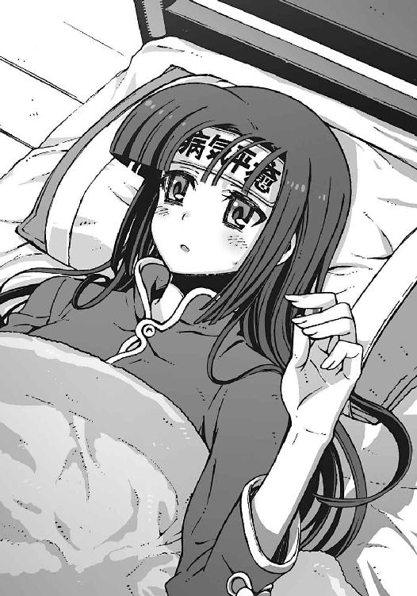
アニアは、タンスの引き出しから冷えピタを取り出すと、その表面にマジックで『病気平癒』と書きこみ、嵩月の額に貼りつけた。
まったく適当な作りだが、それだけでもずいぶん僕は安心した。運喰らいであるアニアが運気をこめた御守りだ。生半可な神社の開運グッズなんかよりも、よほど効果は信頼できる。
「毛布も足しておいたほうがよさそうだな。運ぶのを手伝え、智春」
「ああ、うん」
アニアに命じられて、部屋を出て行く彼女を僕は慌てて追いかけた。階段の前で追いついて、僕はアニアの小柄な背中に呼びかける。
「アニア」
「なんだ？」
「嵩月の熱のこと......あれはただの病気なのか？」
僕の言葉に、アニアが階段を上ろうとする足を止めた。
さっきからずっと心に引っかかっていたことだ。この世界に来てほんの一週間足らずの間に、嵩月が発熱して倒れたのは二度目だった。最初は単に疲労のせいだと思っていたが、どうやらそれだけが原因ではないのかもしれない。
普通の風邪やインフルエンザという可能性もないではないが、それにしては症状が不自然だ。嵩月の消耗が激しいことも気にかかる。
「もしかして嵩月のあれは......」
「ああ......拒絶反応の可能性が高いな」
アニアは僕に背中を向けたまま、無感情な声で呟いた。
「拒絶反応？」アニアの答えに、僕は呻いた。「〝一巡目の世界〟の嵩月の身体に、〝二巡目の世界〟の彼女の魂が宿っているせいか」
「今の奏のようなケースは私も知らないから、推測になるが......おそらくな」
アニアの肩にかかる金髪が揺れた。彼女が背中を震わせたのだ。
「すまない、智春。もっと早く私が気づくべきだった。今の奏の身体は......たぶんそう長くは保たないだろう......このままでは......奏は......」
「どうすればいいんだ、アニア？」
彼女の言葉を遮って、僕は訊いた。自らの不安を隠すように、殊更に明るい声を出し、
「なにか方法があるんだろ............アニア？」
しかしアニアは振り返らなかった。窓の外に浮かぶ月を見上げ、金髪の悪魔の少女は、ただ弱々しく首を振る。少し遅れて彼女の声が聞こえた。
「すまない、智春」
啜り泣く幼子のような声だった。
○
アニアが調合した怪しげな薬を飲まされ、嵩月はすぐに眠りに落ちた。
すっかり目が冴えてしまった僕とアニアは、食堂で少し早めの朝食をとる。
窓の外はまだ暗い。そのせいか、二人きりの食卓はやけに寒々しく、物寂しかった。
時計の針は午前五時を指している。
「なあ、アニア......昨日のアレはなんだったんだ？」
焦げたトーストを齧りながら、ふと思いついて僕は質問した。
「アレとはなんだ。目的語は明確に伝達しろ」
口の周りにべたべたとジャムをつけたまま、尊大な口調でアニアが訊き返す。
「おまえと嵩月の仮装のことだよ。あれはいったいなにがしたかったんだよ」
僕はやれやれと溜息をついて、壁のコート掛けを指さした。そこにはミニスカサンタの衣装とセーラー服がぶら下がっている。
嫌なことを思い出した、とアニアは軽く顔をしかめ、
「......おまえは、悪魔の正体を知ってるな」
ジャムのスプーンをくわえたまま、そんなことを訊いてきた。
僕はぞんざいに頷き返す。
「べつの世界から来た人間と、その子孫のことだろ。悪魔の持つ特殊な能力は、世界と世界の間に生じる摩擦のようなものだって」
「そう。我々は水中に潜った水鳥のようなものだ。空と海。二つの世界の境界をかき乱して、魚たちを驚かす......だが、しょせん鳥は水の中では生きていけない。悪魔も同じだ。私たちの存在は、やがて世界から拒否されて排除される......非在化だ」
非在化、というアニアの言葉に、いくつかの苦い記憶が甦った。
アニアの目の前で消滅した彼女の姉。非在化の発作に苦しんでいた〝二巡目の世界〟の嵩月。そして滅びつつある廃墟の街──
「......だから悪魔は契約者を必要としているんだろ。その世界の人間に魂を分け与えてもらうことで、悪魔は存在を許される。その代わりに、悪魔は使い魔を異世界から召喚して契約者を護る能力を手に入れた......って」
「そうだ。雌型の悪魔の場合はな」
コーヒーにどばどばと砂糖をぶちこみながら、アニアが告げる。
「雌型悪魔......だけ？」
怪訝な表情の僕を、アニアは無表情に睨んで、
「おまえの知っている雄型悪魔に、契約者を持っているやつがいたか？ 使い魔は？」
「いや......そう言われると......」
僕は困惑して首を振った。
強面の嵩月の親父さん。八伎さんをはじめとする、嵩月組の皆さん。それに鳳島兄──
たしかに彼らの誰一人として、使い魔を持っている者はいなかった。彼らに契約者がいるという話も聞いたことがない。
「それが雄型と雌型の悪魔の決定的な違いだ。特定の契約者を持たない──いや、持つことができない雄型悪魔は、契約ではない、べつの形で魂の欠損を補完する必要がある」
「べつの形って？」
「愛する者の〝記憶〟だ」
「......は？」
アニアらしからぬロマンチックなセリフを聞かされて、僕は思わず固まった。
運喰らいの少女は、もしかしたら自分でも照れているのか、苦々しげな表情になって、
「愛した人間に関する思い出。その人間に対する想い......雄型悪魔はそれらを通じて、間接的に〝抗非在化性〟を補給している」
「ああ......」
僕は、もつれていた疑問が解けていく感覚を味わっていた。
雌型悪魔は愛した人間の記憶を奪い、雄型悪魔は自分自身が誰かを愛した記憶を失う。ちょうどコインの裏表のような関係だ。方向性は逆だが、そのふたつは基本的に等価だといえる。
「それって......雄型悪魔が魔力を使ったら......」
「愛した人間に関する〝記憶〟を失う。当然の帰結だな」
アニアが素っ気なく呟いた。
そのとき僕は、鳳島兄妹のことを思い出していた。
あれほどまでに〝妹〟という存在に固執していながら、鳳島兄は氷羽子のことを知らない、と言っていた。だが、やつは知らないわけではなかったのだ。やつは──
「そうか。〝二巡目の世界〟の鳳島は、氷羽子のことを思い出せなかったのか......最愛の妹の記憶を失ってしまっていたから」
「おそらくな」
鳳島という名前に、アニアが心底嫌そうな顔をする。かつて彼女はあの男に〝理想の妹〟と呼ばれて、散々つきまとわれたことがあるのだ。だがしかし、
「あの鳳島が〝妹〟という存在に異様な執着を見せていたのも、欠落した記憶を無意識に埋めようとしていたのだろう。本物の妹の記憶をな」
「なるほどね......」
アニアの説明に、僕は複雑な気分になる。
それは鳳島氷羽子の目的が、ようやく解明できたからだった。
氷羽子が塔貴也と契約して、彼に協力している理由。彼女は、再び時間を巻き戻すことで、兄である鳳島蹴策の失われた記憶を甦らせようとしているのだ。自分のことを愛してくれた、かつての兄を取り戻すために。
それはどこか歪んだ愛情だが、だからこそ彼女の想いの強烈さは、部外者の僕にも理解できた。恐怖すら感じるほどにはっきりと。しかし、それは今は関係ない話だ。
「それはわかったけど、そのことと、昨日のアニアのネコミミ妹になんの関係があるんだ？」
首を傾げて、僕は呟く。
「............」
アニアはなにも答えない。ふて腐れたような顔のまま、コーヒーをちびちび舐めているだけ。そんな彼女を見ながら、僕はふと思いついて、
「まさか......僕のため、なのか？ こちらの世界に来て〝悪魔化〟した僕が、非在化するのを遅らせるために......？」
魔力を使うことで愛した者の記憶を失うというのは、つまり愛した者の記憶が多ければ多いほど非在化の危険が減る、ということでもある。
そう言えばアニアは昨日、僕に言ったのだ。思い出を作ってやろうと思った、と。こちらの世界には操緒がいないからその代わりだ、とも。
「奏が、そうしようと無理やり誘ってきたのだ」
むっつりと頬を膨らませたままアニアが言った。
「嵩月が？ 自分から？」
なんとなく意外な気がして、僕は目を瞬く。
アニアは疲れたような息を吐き、
「おまえは悪魔と敵対する演操者でありながら、自ら悪魔と化した矛盾する存在だ。だから通常よりも非在化の進行が早いはずだ。それを少しでも防ぎたかったんだろう。奏が、父親のことを嫌っていた本当の理由......気づいていたか？」
「え？」
突然の質問に、僕は戸惑う。極道ライクな商売をしているから、じゃなかったのか？
「複雑な気分だろうな。自分の母親のことを忘れてしまった父親を見るのは」
アニアが溜息混じりに独りごちた。それを聞いて、僕はもうなにも言えなくなる。
言われてみれば嵩月は、両親のことを、あまり語りたがらなかった。そして自分の娘をあれだけ溺愛しているあのオッサンの口からも、嵩月の母親の名前が出てきたことはない。
だから悪魔が記憶を失うということに対して、嵩月は、僕が想像している以上に複雑な感情を抱いているのかもしれなかった。
「そうか......それで嵩月は樋口に相談して、僕が喜びそうなことを......」
だからミニスカサンタだったのか。少しでも強く僕の記憶に焼きつくように。
たしかにあれは、簡単には忘れられそうにない記憶だ。しかしあのツンデレはどう考えても、僕ではなくて樋口の趣味だろう。
「でも、あんなことをしてなにか意味があったのかな？」
「なに？」
嵩月の好意を踏みにじるような僕の呟きに、アニアが怒りを露わにした。ものすごい目つきで睨まれて、僕は慌てて、
「いや、だって、仮に僕が嵩月やアニアのことを好きだとしても、もともと二人はこの世界の人間じゃないだろ。アニアたちの〝記憶〟を消費しても僕の非在化は防げないんじゃないかな、とか......ほら、この世界の人間の〝魂〟と二人はまったく無関係だし......」
「............」
僕の指摘にアニアが沈黙した。彼女の瞳に浮かんでいたのは、驚きの感情だった。どうやら僕が指摘したことを、彼女はすっかり見落としていたらしい。
「あれ......もしかして気づいてなかったのか、アニア？ 天才少女なのに？」
僕は軽く驚いてそう訊いた。べつに馬鹿にしたつもりではなく、純粋に意外に思ったのだ。しかしそれをアニアは侮辱ととらえたのだろう。見る間に彼女の顔色が憤怒に染まり、
「がぶっ！」
「わ、なんだよ!? なんで噛むんだ!? ちょ、マジで痛い痛い痛い！ 吸うな、こらっ！」
「ふががっ、ふがががが、がっががががっ！ むっ......」
噛みついてきたアニアから逃れようと、僕が必死で暴れていると、なにかが床に落ちて軽い音を立てた。それに気づいたアニアが急に表情を険しくする。
床に落ちたのはカードだった。プラスチック製の磁気カードだ。
「おい、智春。貴様......こんなものをどこで手に入れた？」
磁気カードを拾い上げたアニアが、なぜか怒ったように訊いてくる。
「ああ、これか。クロガネが持ってきたんだよ」
歯形の残る腕をさすりながら、僕は投げやりに説明した。パジャマのポケットに突っこんで、そのまま存在を忘れていたのだ。
アニアは少し不審な顔をして、
「クロガネ？」
「フクロウ。秋希さんのペットの」
「そうか、フクロウ......ちっ！ そういうことか」
行儀悪く舌打ちしながら、アニアが残っていたパンにかぶりついた。
僕は漠然と不安な気分を覚えて、彼女を見返す。いつの間にかアニアの表情が変わっていた。妙に殺気立った攻撃的な表情だ。ある意味、生き生きしている、と言えなくもない。
「午後になったら出かける。それまでに少し眠っておけ、智春。こいつは牢獄からの招待状だ」
パンを口にくわえたまま、アニアは椅子を蹴散らして立ち上がった。
「牢獄？」
僕は顔を歪めて訊き返す。とにかく嫌な予感しかしなかった。わけがわからないまま牢獄に行くぞと言われて、喜ぶ人間がいたら顔を見てみたい。
しかしアニアは一人で勝手にエキサイトした口調で、
「あの狂科学者どもが、ようやく顔を見せる気になったらしい。喜べ、黒幕のお出ましだ。」
「待った。いったいなんの話をしてるんだ。牢獄ってどこだよ。それに黒幕って......誰だ？」
僕は仕方なくアニアを制止して問いただした。
アニアは面倒くさそうな顔で僕を見下ろし、
「ブラックホールという言葉は、もともと牢獄という意味だ」
そんなこともしらないのかバカめ、と言わんばかりの口調だった。僕は少しムッとしながら、
「......ブラックホールって、もしかして超弦重力炉ってやつのことを言ってるのか？」
数日前にアニアに見せられた光景のことを思い出す。地下深くに向かって螺旋状に抉られた地面。その奥底にあるという巨大施設。超弦重力炉。
たしかにあれは、牢獄と呼ぶに相応しい雰囲気の建造物だったけれど。
「そこで律都たちが待っている」
アニアが不意に静かな声を出す。
僕はハッと顔を上げる。〝一巡目の世界〟の潮泉律都──アニアの口から彼女の名前が出てくることはべつに不思議ではなかったが、
「律都さん......たち？」
どういう意味だ、と僕はアニアを見つめた。
嵩月の従姉で、年齢不詳の美人医大生。資産家、潮泉家の一人娘。
なぜ彼女が超弦重力炉なんかにいる。彼女と一緒にいるのは──誰だ？
ふん、とアニアは白い歯を剥いて、獰猛に笑う。
「そうだ。待っているはずだ──律都と、律都の契約者がな」
○
僕たちを乗せたタクシーは、洛高から森ひとつ隔てた場所にある、奇妙な施設へと向かった。企業の研究所のような、あるいは病院のような外観の建造物だ。
三日月型の小さな湖の畔に立っていて、周囲三方を湖面に囲まれている。そのせいで、遠目には水面上に浮かんでいるようにも見える。施設の設備は現代的だが、左右対称に配置された建物の造りは、どことなく古代の神殿を彷彿とさせた。妙な威圧感のある、あまり近づきたくない雰囲気の建物だ。
「ここから先は入れないんだよ、悪いね」
運転手は粗雑な口調でそう言って、施設の門の前で車を止めた。入れない、というよりも、入りたくないという本心が滲み出ている口調だった。アニアは意外にも文句を言わず、素直に料金を払って車を降りた。
彼女のあとについて降りながら、僕はタクシーのカーナビの画面を確認する。
電子地図に表示された、施設の名前は空白だ。
国道を大きく迂回するのでずいぶん遠く感じたが、実際の距離は、洛高から数キロも離れていなかった。そして超弦重力炉がある場所も、けっこう近い。僕の脳裏には、なぜかわけもなく〝魔の三角地帯〟という言葉が思い浮かぶ。
「嵩月、歩けるか？」
「はい。あの、それよりも、この建物」
車を降りた嵩月は、頭上の太陽に目を細めながら、目の前の施設を見上げた。
「うん......」
頷きながら、僕は嵩月に手を差し出した。いちおう熱は下がっていたが、彼女の足取りは、まだ少しどこか危なっかしい。それを自覚しているのか、嵩月は困ったような表情を浮かべながらも、怖ず怖ずと僕の手を取った。
「これって僕たちが前に洛高の地下でみたのと同じ施設、だよな」
古代神殿のような湖畔の建物を眺めて、僕は呟く。
僕たちが〝二巡目の世界〟の地下で見たのは、半ば廃墟と化した〝遺跡〟だった。それでもたしかに目の前の建物の面影が残っていた。あの遺跡を、朱浬さんたちは、妙な名前で呼んでいたはずだ。あれは、そう──
「十字稜。高エネルギー物理学研究機構の研究本部の通称だ」
僕の疑問に答えるように、アニアが素っ気なく説明する。
「行き先は、超弦重力炉じゃなかったっけ？」
「そうだ。だからここに来たんだろうが」
「どういう意味だよ？」
「おまえは飛行機に乗りたいからといって、いきなり滑走路に出て行くのか。馬鹿なのか？」
「ぐぬっ......」
アニアの冷淡な言葉になにも言い返せず、僕はギリギリと歯噛みした。ちょっと見ない間に五年ぶん成長して、それに比例して生意気さが増しているような気がする。
無機質なコンクリートで塗り固められた建物の周囲に、人の姿は見あたらなかった。
建物の正面には、いかにも頑丈そうなシャッターで閉ざされた自動改札風のチェックゲート。どうやらそれが、この施設の出入口らしい。
「通行証は持ってきたんだろうな、智春」
アニアが、ゲート手前で振り返って訊いてくる。
「通行証ってこれのことか？」
僕は、クロガネが持ってきたプラスチックカードを取り出した。
「だけどこれ二枚しかなかったんだけど」
ゲートの構造からして、通行証は一人一枚必要なはずだった。しかし手元のカードは二枚だけ。もともと出所のわからない拾いモノだから、どこに文句を言えばいいのかもわからない。
しかしアニアは特に困った様子もなく、
「私のぶんは不要だ。その二枚はおまえたちが使え」
「アニアは？」
「私のは、ここにある」
そう言って彼女は、制服のポケットから新たなカードを取り出した。僕の持っている来客用カードとは違う。名前と顔写真が入った彼女の専用カードだ。
「......なんで？」
僕は唖然として、カードを掲げているアニアを眺めた。カードに印刷された写真の少女は、今の彼女よりもだいぶ幼い。つまりアニアはずっと前から、この施設に出入りしていたということになる。
驚く僕を見てアニアは静かに溜息をつき、
「私がこの世界に来る前から、この施設では、異世界からの来訪者に関する研究が行われていたんだ。すなわち〝悪魔〟についての研究ということだ。機械仕掛けの人工の悪魔──機巧魔神についての研究もな」
「......じゃあ機巧魔神は......」
僕の言葉に頷くアニア。
「そう。この施設で造られた......当時はまだ機巧魔神という呼び名はなかったし、魔力装置の動力源として使われる被験者も、副葬処女ではなく供与者と呼ばれていたが」
「供与者......」
僕は思わず、隣にいた嵩月を振り返る。嵩月も、驚いたような表情を浮かべていた。かつて〝一巡目の世界〟の嵩月が、その肩書きで呼ばれていた映像を、僕たちは見た記憶がある。やはりあれは夢ではなかったのだ。
「環緒さん......〝一巡目の世界〟の操緒が治療を受けていたのも、この研究所だったんだな」
「そう......おまえたちにとっては因縁の場所だな」
僕の質問に答えながら、アニアがチェックゲートを抜けた。僕と嵩月もそのあとに続く。
分厚い金属製のシャッターをくぐって、建物の中に入る。
「............」
そのとき僕は、ふとザラっとした違和感を覚えて立ち止まった。悪意にも似た攻撃的な気配。反射的に背後を振り返る。が、もちろんそこにはなにもない。視界に映る範囲には誰もいない。
「どうした、智春？」
ふと気づくと、アニアが怪訝な顔でこちらを見ていた。嵩月も心配そうに僕を見上げている。
「ああ、ごめん。なんでもない──」
そう言おうとして、しかし僕の口から洩れたのは、げっ、という短い悲鳴だけだった。
〝十字稜〟内部の長い通路の奥に、一羽の鳥が止まっていた。僕たちの到着を待ち構えるようにして、身じろぎもせずにこちらを見つめている。妙に見慣れた姿の鳥だった。
「ク、クロガネ......？」
なんであいつがここにいるんだ、という疑問が浮かぶ。しかし一方で妙に納得もしていた。
あのフクロウがこの施設に自由に出入りできるのなら、やつが僕たちに通行証を持ってきた理由も簡単に説明がつく。
「ふん。案内役というわけか」
アニアはたいして驚きもせずにそう言った。彼女の言葉に同意するように、クロガネはホゥと一声鳴くと、施設の奥に向かって羽ばたいていった。僕はその姿を唖然と見送った。あの鳥、ちょっと知能が高すぎないか？
クロガネが僕たちを案内していったのは、施設中央付近に作られた豪華な内装の区画だった。正面に。大きな磨りガラスの扉がある。扉中央の金属プレートには『理事長室』の文字。プレートに刻印された理事長の名前は、潮泉律都と読むことができた。
驚くよりも先に恐怖がこみ上げてくる。ただの女子大生だったはずの彼女が、どうしてこんなことになっているのだ。あの人はいったい何者だ。それとも同姓同名の別人か？
「この部屋に......律都さんが......」
磨りガラス越しに白衣の女性の影が見えた。そのシルエットには見覚えがある。やはり間違いなく、あの律都さんだ。
立ち竦んでいる僕を急かすように、クロガネが背後で羽音を立てる。
「............」
僕はついに観念して、豪華な扉をそっと押し開けた。その直後、部屋の中から聞こえてきたのは、悲鳴だった。
「あああっ......！」
びっくりしたように目を大きくして、女子大生風の綺麗なお姉さんが振り返った。
彼女が見ていたのは、僕の足下だ。そこにはトランプ箱ほどの大きさの木片が、一定間隔で配置されていた。いわゆるドミノ倒しというやつだ。
こつん、と開いたドアがぶつかって、いちばん端のドミノがゆっくりと倒れた。
倒れたドミノは、隣にあったドミノを倒して、パタパタとドミノ列の倒壊が連鎖していく。やがて最後まで倒れ切ったドミノが、その先に置かれていた糸巻きにぶつかった。
糸巻きがゆっくりと転がり始める。その回転によって自動的に、結びつけられていた凧糸がするすると巻き上げられていく。凧糸の先端は天井近くにある容器に接続されていた。凧糸に引かれて容器が傾き、中に入っていたボールが転がり出る。前方に敷かれていたレールに沿って、緩やかに落下を始めるボール。落下するボールがぶつかってなにかのスイッチが入り、モーターが作動する。無数の歯車が噛み合って回り出す気配。ギシギシと可動部を軋ませながら、マジックハンドが伸びてくる。マジックハンドの先端にはハサミ──
伸びてきたマジックハンドはやがて僕の頭上に到達し、そこにあったヒモをハサミで切った。
パカ、と音を立てて天井が開いた。そこから落ちてきたのは、金だらいだった。
落下してきた金だらいは僕の頭頂部に見事に命中。小気味いい金属音が響き渡る。
「あーあ、残念......まだ途中だったのに。花火とかも鳴る予定だったのに」
がっかりしたように肩を落として、白衣のお姉さんがクスクスと笑った。
僕は、足下に転がる金だらいを拾い上げ、それから部屋中に張り巡らされた絡繰り仕掛けを見回した。無駄に複雑で壮大なアナログ機械だ。
「なんですか......これ？ ピタゴラ装置？」
「ルーブ・ゴールドバーグマシン......だな」呆れたような表情を浮かべて、アニアがぼそりと呟いた。「ごく単純な作業を、不必要に手のこんだ数多くの可動装置の組み合わせで実行するという、まあ一種の芸術作品だ」
「はあ......芸術作品......」
僕は金だらいの激突で痛む頭をさすりながら、憮然と言った。なんだそれ。芸術だと言い張れば、なにをやっても許されると思ってるんじゃないだろうな。
「せっかくびっくりさせようと思って、半日もかけて調整したのに」
頬にかかる髪を払いながら、律都さんが楽しそうに笑う。
僕はうんざりと彼女を見つめながら、
「あの、律都さん......？ ここって高エネルギー物理学の研究所......なんですよね？」
「研究にも息抜きが必要でしょ。きみたちを待っている間、ちょっと退屈だったから」
そう言って律都さんは、部屋の奥にある応接セットを指し示した。座れ、ということらしい。
「ロールケーキ食べるよね？ ちょうどお茶にしようと思ってたの」
うずまき柄のお菓子をうっとりと眺めて、微笑む律都さん。なんだかんだでこの人も、あの爺さんの孫娘なんだな、と妙に納得する。
「なんか......緊張感が台無しなんだけど......」
僕はアニアの耳元に、ぼそりと小声で囁いた。言うな、と顔をしかめて僕を睨み返すアニア。
うずまきうずまき、と怪しげな鼻歌を歌いながら、律都さんはケーキを切り分けて、
「ご期待に添えなくて、ごめんね。でも、あたしは、この世界のきみと一週間ばかり前に別れたばかりなんだ。懐かしいってほどでもないから」
そう言って、彼女は優しげな視線を僕に向けてくる。ぎくり、と僕は表情を強ばらせる。
「それに、きみ自身のことも、いつも見ていたわ。〝二巡目の世界〟の夏目智春くん」
「えっ......？」
意味深な彼女の言葉に、僕は戸惑う。見ていた、というのはどういう意味だ。彼女はなにを知っている？
「おいで、クロエ」
そして彼女は、僕たちの背後に向かって手を伸ばす。ホゥ、と短く鳴いて、彼女の呼びかけに応えたのは、僕たちをここまで案内してきたフクロウだった。
「クロガネ......!?」
ふわり、と音もなく滑空して、フクロウが律都さんの肩に止まる。その姿を僕は唖然と見つめる。橘高秋希がどこかで拾ってきて、そのまま彼女がペットとして飼っていたはずの猛禽。まさかこの鳥の本当の飼い主は──
「律都ちゃん......そんな......どうして」
嵩月が呆然と呟きを洩らした。青ざめた彼女の顔を見て、また倒れるのではないかと不安になる。嵩月が見ていたのはフクロウではなく、律都さんの瞳だ。優しく細められた彼女の目が、淡い緑色に輝いている。悪魔の瞳──
「クロガネというのは、この子を拾った橘高秋希が勝手につけた名前よ。この子の本当の名前は〝クロエ〟──私、潮泉律都が召喚した〝使い魔〟」
「律都さんも......悪魔？ だけど......」
どういうことだ、と僕は混乱した頭で考える。この世界にいる潮泉律都が悪魔なのは、まあいい。そんなこともあるだろう。けれど、だったら、〝二巡目の世界〟の彼女はどうなんだ。もしも彼女が悪魔だったとして、そのことに嵩月が気づかなかったのはなぜだ？
「──そうね。すべて説明するわ。でないと、そろそろそこの運喰らいの子に怒られてしまいそうだから」
「当然だ」
不機嫌そうに腕を組んだまま、むっつりとした表情を浮かべているアニア。
どうやら律都さんが余裕の態度で、楽しそうに種明かしをしているのが気に入らないらしい。その気持ちはよくわかる。
律都さんはクスクスと笑い声を洩らし、
「でも、その前にお茶にしましょう......これは、とてもとても長いお話だから」
ティーポットを抱き上げてそう言った。
○
律都さんが、かき混ぜた紅茶にミルクを落とした。白く浮かび上がったミルクがカップ表面に渦を巻き、彼女はそれを愉しそうに眺める。
差し出されたティーカップを受け取って、僕は、ふと窓の外に目を向けた。そこは研究所の中庭だった。木々に囲まれた美しい庭園。その芝生の中央に、巨大な人型の彫像が、膝を突く形で立っている。銀色の鎧に覆われた、機械仕掛けの人形が。
「白銀......!?」
その彫像の正体に気づいて、僕は呻いた。それは大破した機巧魔神だった。〝二巡目の世界〟での戦闘に敗北し、破壊された機械仕掛けの人造の悪魔──
「回収させてもらったわ。財団なんて連中も動いているみたいだし、いつまでも神社の物置に機巧魔神を放置しておくわけにもいかないから。だって、あの中には......ね」
悪戯っぽく微笑みながらそう言って、律都さんが嵩月にウィンクした。
「う......」
かぁっ、と頬を紅潮させる嵩月。《白銀》の内部には、彼女の本来の肉体が、時間停止状態で封印されているのだ。裸のままで。
「どうして律都さんが、そのことを？」
僕は疑惑の眼差しで彼女を見つめた。
「あら......だって、きみがこの子を連れて行ったじゃない。嵩月神社に」
律都さんは愉快そうに笑って、肩に乗せたフクロウを見る。あ、と僕は額を押さえた。たしかに僕たちが《白銀》の姿を確認したあの日、僕はこいつを連れていたのだ。律都さんの使い魔であるこのフクロウを。
そういうことか、と僕は理解した。彼女が自分の使い魔を、秋希さんのところにペットとして送りこんでいた理由。それはおそらく監視のためだ。秋希さんと、そして塔貴也を監視するため。
「私はね、今までに確認された悪魔の中で、おそらくもっとも強大な魔力を持っているわ」
自分のぶんのティーカップを両手で抱いて、律都さんがぽつりと呟いた。
そして、警戒した僕をからかうように、ふわりと笑い、
「でも、最強であると同時に私の能力はほとんど無力に近い。あれだけ近くで暮らしていても、奏ちゃんが私が悪魔であると気づかなかったのは、そのせい」
「えーっと、つまりそれはどういうことなのでしょうか......」
僕はいきなり混乱して低く呻く。わざとわかりにくく言ってるんじゃないだろうな、この人。
律都さんは、どこか遠い目をして僕たちを見つめ、
「私の悪魔としての能力は〝意識共有〟──あらゆる世界、あらゆる時間に存在する私自身と、私は今も感覚と思考の一部を共有している。もちろん〝二巡目の世界〟にいる私とも」
「意識の......共有？」
その言葉が意味することに気づいて、僕はゾッとした。
ありとあらゆる時空の自分と意識を共有できるということは、一種の遠隔視や予知能力が使えるということか。たしかにその能力は無力だが、圧倒的に強大だ。自分自身が知覚できる範囲に限定されるとはいえ、彼女は、すべてを知っているのだ。これまでのことも、これから起きるであろうことも──
「じゃあ、律都さんは最初からすべて知っていたんですか......直貴が殺されることも？」
僕は掠れた声で訊く。律都さんは静かに頷いて、
「知っていたわ」
「それなら！」
思わず声を荒らげた。
「それなら、どうして部長を止めてくれなかったんですか！ 直貴だけじゃない、あなたには朱浬さんや哀音や、ほかの人たちを助けることだってできたはず......なのに、どうして......」
激昂する僕を、律都さんは黙って見返した。ひどく哀しげな表情だった。
「助けようとした私もいるわ。実際に助けることには成功した私も、失敗した私もいる」
どこか疲れたような彼女の言葉に、僕は息を呑む。
「そうか......並行宇宙......」
「ええ。量子力学におけるエベレットの多世界解釈──この宇宙には私たちの選択の数だけ、世界が分岐して存在する。互いに干渉できない異世界が」
そう言って律都さんは、弱々しく首を振った。
彼女が直貴を助けた世界もあれば、見殺しにした世界もある。そして、それらすべての世界の彼女自身と、律都さんは意識を共有している。
「だから......私は知っているの。それらのあらゆる選択が、すべて徒労であることを」
「......徒労？」
なにをしても無駄、ということか。
「どうして？」
「私たちがどんな選択をしても、すべての世界は滅びてしまうから」
あまりにもあっさりした律都さんの口調のせいで、なにを言われたのか一瞬わからなかった。
「え？」
「この宇宙にあるすべての異世界を道路に喩えるなら、私たちの行き先には、巨大な壁が立ちはだかっている。滅亡という名の絶壁が。奈落へと誘う断崖が──どの選択肢を選ぼうとも、結果は同じ。このゲームにはデッドエンドしか存在しない。私はそれを見てきたの」
「そんな......」
唖然とする。だったら、僕たちが今までやってきたことはすべて無駄なのか。操緒や嵩月やアニア。それにニセ直貴や朱浬さんがやろうとしたことも──？
律都さんは、そんな僕を見て穏やかに微笑。
「でもね、無数に存在する世界の分岐の中で、ひとつだけ......たったひとつだけ異質な世界が生まれてしまったの。異様な世界、というべきかもしれないわね」
「異様な世界？」
「それがここ......きみたちが〝一巡目の世界〟と呼んでいる、この世界。この世界の人々は、目の前に〝滅び〟が迫ったときに、絶望を待つ代わりに、やり直すことを選んだ。時間を巻き戻して、もう一度プレイすることにしたの」
「やり直すことを選んだのは......この世界......だけ？」
僕の呟きに、律都さんは華やかな笑顔を浮かべた。
「そう......この世界の存在は、私に残された最後の希望なの。無数の滅びを経験して絶望した私が、どれだけこの世界に期待しているか想像してもらえる？ それがどんなに儚い望みでも、どれだけの犠牲を払ってでも、賭けてみる価値があると思えたわ」
そう言って律都さんは微笑みを消した。代わりに彼女が浮かべたのは、泣き出しそうな笑顔。何度も道に迷いながらようやく帰り道を見つけた、そんな幼い少女のような表情だった。
「きみがここに辿り着いたということは、きっとその選択は間違っていなかったわね」
「どうして......そう思えるんですか」
彼女の言葉に、逆に不安になって僕は訊いた。
「〝二巡目の世界〟のきみは、数年前に飛行機事故で死んでいるはずだった。なのに、きみは生き延びた。そしてきみは奏を助けた。入学式の直後、第一生徒会に滅ぼされるはずだった奏ちゃんを──これは、もう二度とない、ほとんど奇跡みたいな偶然なのよ」
律都さんが静かに紅茶をすすった。
僕は沈黙。テーブルの上に視線を落とす。僕の手元には、手つかずのままのロールケーキが二切れ。渦を巻く断片が二つ。僕は深い溜息をついた。
「さっき......世界が滅びる姿を見たと言いましたね」
「ええ」
「律都さんは、どうして世界が滅びるのか、知ってるんですね」
「そうなるわね」
僕は顔を上げて正面から彼女を見る。
「それは、機巧魔神が造られなければならなかった理由と、関係しているんですか？」
「どういう意味？」
律都さんが小さく首を傾げた。
「あなたは......世界を滅びから救うためなら、どんな犠牲を払ってもいいと言った。だけど、僕は......」
「水無神操緒を犠牲にするくらいなら、世界が滅びても仕方がないと思っている......？」
律都さんが、素っ気ない口調で、僕の言葉を奪った。
「律都っちゃん！」
嵩月が強い口調で従姉を咎める。けれど律都さんは、穏やかに首を振り、
「責めるつもりではないの。きみの気持ちも理解できるから」
「............」
思いがけない彼女の言葉に、僕は目を瞬いた。
「証拠を見せようか」
律都さんはそう言って、テーブルの上に置かれていたクリスタル製の灰皿を、ひょいと持ち上げた。どうやらその灰皿は、絡繰りを起動するためのスイッチになっていたらしい。
灰皿の重みで固定されていたロックがどこかで外れたのだろう。壁際でガタンと音がしてレールが傾き、転がり始めるボール。回り始める歯車。走り出す台車と伸びるバネ。部屋の中に仕掛けられていた、無数の絡繰りが一斉に動き始める。ルーブ・ゴールドバーグマシンだ。
やがて無駄に壮大な絡繰りがすべて動き終えると、最後に、律都さんの背後の窓を覆っていたブラインドがするすると巻き上がった。それを確認して、律都さんがにっこりと笑う。
「今度は上手くいったわね」
僕はただ唖然としてそれを見ていた。
べつにピタゴラ装置に驚いたわけではない。僕が驚いたのは、ブラインドで隠されていた窓の向こうに、巨大な装置を見てしまったせいだ。
無数のパイプラインを剥き出した、いびつな機械だった。
天秤を巨大にしたようなシルエット。部品を寄せ集めて造ったとおぼしき実験装置。そしてそれとよく似た機械を、僕は前にも見たことがあった。
「この......装置！ どうしてこれが、こんなところに......!?」
僕のすぐ隣で、嵩月も呆然と息を呑んでいた。当然の反応だ。それは決してここにあるはずのない装置だったからだ。〝二巡目の世界〟で爆破されてしまったから。僕たちの手で破壊したからだ。
「ニアちゃんが用意したのよ。彼女が機巧魔神の設計に協力する条件として出したのが、この装置を完成させること、だったの」
律都さんが説明する。
それは、かつてアニアの実の姉──クルスティナ・フォルチュナが研究して、加賀篝隆也が造り上げた試作品の魔術装置だった。膨大な量の魔力と、運喰らいの確率操作能力を利用して、機巧魔神の内部に封印された副葬処女を解放する装置──
「副葬処女分離器......」
「そう、この装置を使えば、機巧魔神の中に封印されている水無神操緒を解放することができる。この装置の作動には運喰らいの確率操作能力と、膨大な魔力を提供するもう一人の悪魔が必要だけど、ここにはそのどちらも揃っているしね」
〝最強〟の悪魔である潮泉律都の言葉を、僕は呆然と聞いていた。
機巧魔神から副葬処女を解放することが可能な唯一の装置。この分離器があれば──
「......操緒を生き返らせることができる......のか」
「そうだ、智春。だが......」
運喰らいの少女が、辛そうな表情を浮かべて僕に告げた。
彼女の代わりに、律都さんが言葉を続ける。
「きみは演操者の能力を失い、〝二巡目の世界〟に戻ることはできなくなる」
彼女の声に、僕は軽い目眩を覚えた。
この世界を、最後の希望だと言った律都さんの言葉を思い出す。
このまま僕がこの世界に残れば、ほぼ確実にこの世界は滅びる。滅亡を防ぐために〝二巡目の世界〟に送りこまれた機巧魔神《鋼》は、すでに奪われてしまったから。そして《鋼》を奪った塔貴也の目的は、世界を救うことではないからだ。
「私はあなたに強制しない。水無神操緒を救って、この世界とともに滅ぶか、それとも彼女を犠牲にして、〝二巡目の世界〟に戻るか。決めるのはきみよ、夏目智春」
律都さんが投げかけてきたのは、とても優しく、そして残酷な言葉だった。
操緒か世界のどちらかを犠牲にしろ、と彼女は僕に選択を突きつけているのだ。そしてそのどちらを選ぶにしても、その責任はおまえ自身で背負えと。
それはあまりにも重い選択だった。ただの無力な高校生に任せるには、不条理なほどの大きすぎる選択だ。そもそもこれは有効な選択にすらなっていない。たとえ操緒を生き返らせても、この世界が滅びてしまえば、やはり彼女は死んでしまうからだ。だけど──
「だけど僕は──」
それでも、と僕の意志は言葉を紡ぐ。世界が滅びて呪われるなら、その罪は僕一人が背負えばいいことだ。操緒には関係ない。彼女にはなんの罪もないのだ。世界のために、あいつが犠牲にならなければならない理由なんてない。だから、僕は──
『──異議あり！』
そんな僕の決断の言葉は、甲高く澄んだ声に一方的にかき消される。どこかふざけた、緊張感のない声。この場にいるはずのない人間の、けれどとても懐かしい声。
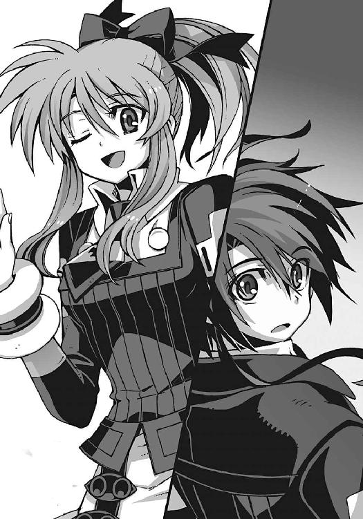
『先生、そういう大事なことを、智春一人に決めさせるのはよくないと思います！ 牛丼の大盛りと並盛りとか、自販機のジュースとか、カラオケで歌う曲とか、全っ然選べない優柔不断のドヘタレなんだから』
「なっ......」
誰がドヘタレだ、と僕は絶句する。それに並盛りと大盛りを選べなかったのは、決して僕が優柔不断だったからではなく、あの日はたまたま小銭の持ち合わせがなくて──って、そんな出来事があったのを知っているオマエは何者だ!?
唖然とする僕を見下ろしていたのは、空中を漂う、ほっそりとした少女だった。
全体的に色素の薄い感じの、どこか非現実的な姿の美少女。感情豊かな大きな瞳が、やけに生き生きと輝いている。それは、かつて僕の幼なじみだった自称〝守護霊〟──
『もう一人の当事者の意見も、きっちり聴いてもらわないとね』
なぜか根拠のない自信に満ちあふれた態度で、水無神操緒が楽しそうに笑っていた。
五章
長い昼寝を終えた直後のように、んー、と操緒が空中で背伸びをしている。
ふわあ、と口を大きく開けて長いあくび。目の端に浮いた涙を、小指の先で拭う。ついでにそのままタレ目を作って、僕を振り返りながらひと言。
『パンダ』
さすがに僕は耐え切れずに、ぶはっ、と激しく咳きこんでむせた。シリアスな会話にいきなり割りこんできておいて、この態度。空気が読めないにしても限度というものがあるだろう。嵩月やアニアも言葉をなくして、色素の薄い幽霊の少女を見上げている。
僕はぜえぜえと荒い息を吐きながら、
「......って、操緒!? オマエ、なんで!?」
『へ？ なんでって、なんで？ どうしてそんなに驚いてるの？』
操緒が、逆に驚いたような表情で訊き返してくる。
「いや......だって」
それは驚くだろう普通。ずっと行方不明で人を心配させておいて、そんな何事もなかったかのように復活されても、正直対応に困るのだ。
しかし操緒は、そんな僕たちの混乱などどこ吹く風で、
『わっ、ニアちゃん!? 美人っ......!? でかっ、なになに、これ、どうなってるの......!?』
成長したアニアの姿に、今ごろになって驚いていた。遅い。遅いよ、と僕は脱力。悪いが、その話題はもう一週間ほど前に終わってるんだよ。
しかし操緒はいつものマイペースぶりを発揮。アニアの胸をぺたぺた触るような仕草のあと、自分の胸と触り比べて、
『よかった......まだギリギリ勝ってた』
「嘘をつくなっ。どう見ても私の圧勝だろうが！」
『うんにゃ。いいとこ互角だねっ』
本気の口調で低レベルな言い争いを始める操緒とアニア。
僕は突発性の激しい頭痛に襲われながら、
「それでいいのかよ!? もっとほかに気にするところが、なんかあるだろ、二人とも！」
絶叫する僕を胡乱げに眺めて、操緒は、はあ、と呆れたように溜息をついた。
『......なに怒ってんの？ ほんの何時間か会えなかっただけじゃん』
「何時間かって......」
何気ない操緒のひと言で、僕はようやく状況を理解した。僕たちにとってのこの数日間は、操緒にとっては、ほんの数時間の出来事だったのだ。時間の流れがズレている。
僕に取り憑いているはずの操緒だけが、なぜそんなことになったのかは理解できないが、
「操緒......おまえ、今までどこにいた？」
『んー、どこだろ？ 教会？』
尖らせた唇に指先で触れながら、操緒は自信なさげに告げる。
「......教会？」
『それっぽい感じのところだったんだけど......まあいいよね、そんな細かいこと』
「よくないよ！ 重要なとこだろ、これ！」
僕は苛々と頭を抱えたが、操緒は、無理してまで思い出す必要を感じていないようだった。どうしてこいつは、こんなに大雑把な性格をしてるんだ？
ソファの肘掛けにだらしなく頬杖をつきながら、アニアが律都さんを睨んだ。
「魔橋の門を解放したのか......律都」
律都さんはにこやかに微笑んで頷き、
「彼には、その権利がある、でしょう？ 中央渦界域に降りてもらうわ」
「え？」
当事者のいないところでさりげなく交わされた二人の会話に、僕は慌てて割りこんだ。今、なんだかこの人たち、とんでもないことを言わなかったか？
「あの、魔橋ってなんですか。中央渦界域って、重力炉の中のことですよね？ そこに降りろ、とかなんとか聞こえたんですけど」
「ええ、そうよ。行きましょ」
「だからそんな簡単に言われても──」
僕は無意識に律都さんから距離をとろうと、じりじり後退。だがしかし次の瞬間、情け容赦のない浮遊感が僕を襲ってきた。じわっ、とした加速で理事長室の床が沈みこんでいく。
「エ、エレベーター......!?」
座っていた応接セットごと、僕たちは地下へと運ばれていく。あまりの驚きに悲鳴も出ない。
やたら絡繰りの多い部屋だとは思っていたが、まさかこんな仕掛けまで用意されているとは思っていなかった。実用性とか無関係に、趣味でやっているだろ、これ。
実際に降下したのはたいした距離ではなかったのだろう。三十秒も経たないうちにエレベーターは目的地についた。
そこは飛行場の管制室によく似た部屋だった。正面には映画館のような大きなスクリーン。無数の計器やスイッチが並んだ机が十席ほど。しかし今はそれらの座席は無人だ。自動運転中、ということなのか、コンピューターのＬＥＤだけが点滅を続けている。
「ここって、なんだかＮＡＳＡみたいですね」
誰もなにも説明してくれないので、僕は仕方なく自分から口を開いた。
律都さんが、少し面白そうに眉を上げて、
「ＮＡＳＡ？ 有人宇宙船のミッションコントロールルームという意味？」
「............」
僕は微妙に恥ずかしい気持ちになって沈黙する。そんな僕に、操緒が、可哀想なものを見るような同情の眼差しを向けていた。すげえムカつく。むしろ笑われたほうがまだマシだ。
しかし律都さんは、意外にも真面目な表情で、
「あながち的外れでもないわね。たしかにここは管制室よ。超弦重力炉の中に浮かぶ魔橋と、その先にあるものを制御しているの」
「重力炉の中にあるものって......たしかブラックホールですよね？」
超弦重力炉というのがどういうものか、いちおう僕も知っていた。冬琉会長に教えてもらったのだ。人工的に生み出したマイクロ・ブラックホールを発電に利用しようという、聞くからに無茶な実験施設。すると重力炉の中にあるのは、強大な磁場によって封じこめられたブラックホールそのもの、ということになる。
しかし律都さんは、それだけでは不正解、というふうに首を振り、
「超弦重力炉というのは、門なのよ」
「......門？」
「そう。数学的には、ブラックホールの内部を通り抜けることで、異なる時空への移動が可能だといわれている。ちょうど今のきみたちのようにね」
「あ」
そういえば、前にも誰かにそんな話を聞かされた気がした。いや、そもそも現在の僕たちの状況こそが、そうやって時空移動させられた結末なのだ。空間を完全制御する機巧魔神──《鋼》が解放した重力ゲートで、僕たちは、この世界に飛ばされてきたのだから。
「たった一体の機巧魔神の魔力では、ほんの小さな門しか開けない。でも、超弦重力炉の出力なら、より巨大な門を安定して開くことができるわ。発電能力なんて、それに比べたら、ほんのおまけ。マスコミ対策でそういう情報を流しているだけなの」
律都さんは、そう言って悪戯っぽく肩をすくめた。
そのニセ情報に思い切り振り回されていた僕は、苦い表情で沈黙。そんな僕の頭の上に乗っかって、操緒が明るい声で訊く。
『......門の向こう側に、なにがあるんですか？』
「次元潜行チェンバー〝うずしお〟......私たちが作り上げた、人類最後の希望、ってとこ」
『なんか、船の名前みたいですね』
身も蓋もない操緒の感想に、律都さんは苦笑。
「船というよりも潜水艦かな。そして機巧魔神の母艦でもあるわ」
「機巧魔神の......母艦？」
僕は振り返って、アニアの表情をうかがう。アニアは重々しく頷いて、
「そうだ。我々が造り出した二十一体の機巧魔神は、超弦重力炉の奥底の、どことも知れない異次元空間に沈めた次元潜行チェンバーの中に収容されている」
「どうして、そんなことを？」
唖然として僕は訊き返す。なにもそんな面倒なことをしなくても、普通に地上に保管しておいては駄目なのか？
「機巧魔神を......〝二巡目の世界〟に送りこむためだ」
はぐらかされるかと思ったが、意外にもアニアは真面目な口調で答えてきた。少しだけ億劫そうに唇を歪めながら、
「私たちは時間を巻き戻して、同じ世界をやり直しているんだ。同じセーブポイントに記録できるデータは、ひとつだけだ。〝一巡目の世界〟の歴史は、〝二巡目〟に追いつかれたときに、上書きされて消滅する。それはこの世界で造られた機巧魔神も例外ではない」
「偶然、なんらかの理由で消し忘れられた〝消え残り〟が、〝遺跡〟として発掘されることもあるけどね」
律都さんが可愛らしい口調で補足して、無愛想に首を振るアニア。
「そんな不確実なものをアテにするわけにいくか」
「だから......機巧魔神を超弦重力炉の底に沈めたのか......人工的に作られた異世界に......」
自分の足下に落ちる影を見つめて、僕は独り言のように呟いた。
ようやく少しだけ理解した。機巧魔神が、なぜ演操者の影を引き裂くようにして、どことも知れない空間から出現するのか、その理由を。
それは、ほかになかったからなのだ。いずれ滅びゆく〝一巡目の世界〟から、人類の切り札である機巧魔神を、〝二巡目〟に送りこむ方法が──
『じゃあさ、鐵もその中に？』
操緒が、にゅっ、と身を乗り出すようにして、律都さんに訊いた。律都さんは、携帯電話の待ち受け画面を自慢するような軽い口調で、
「見てみる？」
「見られるんですか!?」
思わず大声を出してしまった僕を、ちょっと迷惑そうな顔で律都さんは見上げて、
「そのための管制室だもの」
笑いながら、彼女は管制室のスクリーンの電源を入れた。
二百インチほどありそうな大型ディスプレイは、何十年も昔のブラウン管テレビのようにじわじわと明るくなり始め、やがて待ちくたびれたころにようやく画像を結んだ。コンビニの防犯カメラのようなモノクロ画面。ブロックノイズだらけの見にくい画像だ。
しかしそこに映し出されていたのは、間違いなく機巧魔神だった。
全高は、大人の男性の身長のおよそ倍程度。中世の騎士のような鎧をまとった機械人形が、円筒状のカタパルトの中に、吊り下げられるような形で立っている。
数十体もの機巧魔神が、通路を挟むような形で二列に向かい合う姿は、壮観でもあり、恐ろしくもあった。それは無数の彫像を展示する美術館のようで、そして戦士たちの遺体が眠る共同墓地のようにも思えた。
画面に映る機巧魔神には、見覚えのある機体もあれば、そうでない機体もある。空洞のまま残されたカタパルトも、ちらほら見えた。そこに格納されるはずだった機巧魔神は、おそらく過去の戦闘で失われてしまったのだ。
そして長いカタパルトの列の最後に、一体だけ、ひどく傷ついている機体が置かれていた。
満身創痍の無惨な姿を晒した、漆黒の機巧魔神が。
「......鐵......」
僕はその名前を呟いて、唇を噛む。
《鐵》の破損は予想していた以上だった。両脚は大破して、自立できずに膝を突いている。全身の鎧はひび割れてあちこち欠落し、右腕は付け根から失われていた。まだ原形を留めているのが、不思議なくらいのひどい状況だ。
「重力ゲート開放の衝撃を、まともに受けたのよ。この程度のダメージで済んだのは、むしろ奇跡的だわ。魔力装置と副葬処女の生命維持ユニットは無傷だしね」
律都さんが、僕を慰めるように淡々と告げた。彼女の言葉に、僕は少しだけ救われた気分になる。少なくとも操緒は無事なのだ。
「鐵を修理することは......できますか？」
「残念だけど」
僕の質問に、律都さんがそう言って首を振る。
彼女の代わりに言葉を続けたのは、アニアだった。
「機巧魔神には、量子重ね合わせ効果を利用した自己修復装置が組みこまれている。だが......ここまで破壊されてしまうと、もはや自己修復は不可能だ。欠損した部品が多すぎる」
「部品が足りない......ってことか」
アニアの説明は難解だったが、彼女が言いたいことは理解できた。ああ、とアニアは頷いて、
「最低限の応急処置は可能だろうが、元のように戦うことができるかどうかはわからない」
「それでも......操緒を犠牲にしたまま、僕たちに〝二巡目の世界〟に戻れと言うんですか？」
出口のない憤りを抱えたまま、僕は律都さんを睨みつけた。
律都さんは僕の視線を正面から受け止めて、
「決めるのは、きみ。でも、そうね、私はそれを望んでる」
「なぜです？」
「それは自分の目で確かめて」
「確かめるって、どうやって......まさか」
僕はぎくり、と管制室のスクリーンを見上げた。まさか重力炉の中に潜れと？
律都さんが微笑する。
「〝うずしお〟の中であなたのことを待っている人がいるわ。あなたがそれを望むなら、彼はあなたにすべての真実を伝えてくれる」
「誰......ですか？」
膨れ上がる不安に抗うように、僕は訊いた。
「この馬鹿げた計画を、たった一人で仕組んだ黒幕。そして悪魔である私の契約者」
フクロウを肩に乗せた律都さんが、少し遠い目で僕を見る。淡い緑色に輝く双眸。悪魔の瞳。そして艶やかな彼女の唇が、言葉を紡いだ。
「すでに存在しない、あなたの本当のお兄さん──〝一巡目の世界〟の夏目直貴よ」
○
超弦重力炉の内部へは、通常の空間ではなく、魔橋と呼ばれる経路を使うのだと律都さんは言った。そして魔橋に続く門があるのは、この十字稜の最深部らしい。
もはやエレベーターすら通っていない研究所地下の通路を、僕はとぼとぼと歩いている。
『どうしたの、智春。元気ないなあ』
足を引きずっている僕を見て、操緒が相変わらずの気楽な口調で訊いてきた。
「あるわけないだろ、そんなもの」
僕は投げやりな口調で言い返す。なにしろ地底のいちばん底にある牢獄といったら、それは一般に地獄と呼ばれているやつのことである。そんなところに潜らされるのに、浮かれているやつがいたらそいつは間違いなく変態だ。
『だいじょうぶ、操緒がついているよ』
励ましにもなってない無責任なセリフを口にする操緒。いくらなんでも根拠なさすぎだろ、と僕はこっそり嘆息する。そんな僕を励まそうと思ったのか、
「あ......わたしも」
嵩月がおずおずと手を挙げようとして、
「残念だけど、奏ちゃんが付き添えるのはここまで。私と一緒に、管制室でお留守番しよ」
その嵩月の手を途中で握ったのは律都さんだった。
え、と嵩月が驚いたように律都さんを見る。律都さんは、小さく肩をすくめて、
「超弦重力炉の中は位相の異なる次元......魔界なの。普通の人間は入れない」
「あ......」
「中に入れるのは、悪魔と、使い魔によって護られた契約者、そして悪魔の生贄である副葬処女だけ」
「はい......」
嵩月はそう言って力なく萎れた。僕は、あきらかに落ちこんでいる彼女の肩に手を置いて、
「べつにがっかりすることないって。まともな神経の持ち主が行くようなところじゃないだろ、魔界なんて。僕だって入らずに済むなら入りたくないよ」
『ほー......操緒は、その魔界にずっといるんですけどねえ』
操緒が半眼になって僕に顔を近づけてくる。
僕は聞こえないふりをして顔を背け、そんな僕たちを見て、嵩月はようやく少し笑った。
やがて辿り着いた通路の終着点は、地下鉄駅のホームのような姿になっていた。通路の突き当たりの階段を下りると、その先は底の知れない深いトンネルになっている。
「暗い......ね」
トンネルの奥をのぞいて、嵩月が言った。
律都さんは優しく首を振り、教師のような口調で訂正する。
「これはね、玄いというのよ」
「玄か......老荘思想だな」
アニアがぼそりと呟いた。僕は彼女の横顔を見つめて、
「......玄？」
「玄とは宇宙。すなわち天空を表す色。物質もエネルギーも呑みこむ絶対的な無限の闇。時間も空間も超越した、森羅万象の根源となるもの。陰陽に至る前の太極の混沌だ」
「......太極？ 太極はやがて両儀を生ず、ってやつ？」
ほとんど無意識に訊き返した僕を見て、操緒が怪訝な顔をした。
『なんで智春がそんな言葉を知ってるの？』
「なんでって......それは、まあ、いろいろあって......」
さすがに夢の中でもう一人の自分に教わった、などとは説明しづらい。
うろたえる僕を、アニアは少し怪訝そうに眺めて、
「両儀というのはは、陰と陽のことだ。あるいは天と地。光と闇。白と黒......それら対立するすべてのものが、宇宙の始まりでは、すべてひとつだったという思想」
「光と闇は......ひとつ......」
嵩月が、誰にも聞こえないくらいの小さな声で呟く。
「なに？」
振り返る僕に気づいて、嵩月はふるふると首を振った。
いちおう警告のつもりなのか、トンネルの入口には黄色と黒のロープが張られていた。ついでに立入禁止のプレートでもぶら下がっていれば完璧なのだろうが、
「あの......この注意書きは？」
プレートに書かれていたのは立入禁止の文字ではなく、どこかで聞き覚えのある詩文だった。マジックで乱暴に書き殴られたそれは、『この門をくぐる者、一切の希望を捨てよ』と読めた。
「私が書いたの。それっぽいでしょう？」
なぜか自慢げに胸を張る律都さん。僕は無言で顔をしかめた。いや、なんと言えばいいのか最悪のセンスだと思います。
「クロエ」
そんな僕の不満に気づかず、律都さんが自分の肩に乗せたフクロウになにかを命じた。
彼女の使い魔の猛禽は、まるで僕たちを先導するように、トンネルの入口に向かって滑空していく。どうやらここから先は、このフクロウが、案内役ということらしい。
「重力炉に続く門は、惑星の引力や潮汐力の影響を受けるの。今日はたまたま月の巡りがよかったけど、それでも門を開放できるのは、あと半日が限界。それまでに必ず戻ってきてね」
「は、はい」
微妙に恐ろしい律都さんの警告に、僕は何度も頷いた。時間までに戻れなかったらどうなるのか、あまり考えたくはない。
入口のロープに手を掛けて、それをくぐるのを僕が一瞬、躊躇していると、
『なにをもたもたしてんの？ さっさと行こうよ』
勝手にロープを越えていった操緒が、急かすように僕を手招きした。
「そうだな。さっさと行くか。時間がない」
続いてアニアもロープを乗り越え、なんでおまえらはそんな気楽なんだよ、と僕が仕方なく二人を追いかけようとしたとき、
「ニアちゃんはここにいて」
歩き出そうとしたアニアの制服の裾を握って、なぜか嵩月がそう言った。
そのめずらしい光景を僕はぽかんと見つめた。こんなふうに他人に命令する嵩月を見たのは、ものすごく久しぶりかもしれない。たぶん自分の父親を茶室から追い返したとき以来だ。
「いや......しかし智春たちだけでは......」
嵩月の気迫に圧倒されるように、もごもごと口ごもるアニア。
しかし嵩月は有無を言わせぬ口調で、
「ここにいて」
「あ、ああ」
嵩月に押し切られる形で頷くアニア。なんだかなあ、と僕は思った。結局、重力炉の中には、僕と操緒とフクロウだけで行くことになったわけか。
べつに道連れが多いほうがいいとは思わないが、
「あのさ......嵩月さん、もしかして、なにか怒ってる？」
彼女の不自然な態度が気になって、僕はおそるおそる訊いてみる。そしてすぐに後悔した。どこか思い詰めたような表情で、僕を睨んでいる嵩月とまともに目が合ってしまったからだ。
「夏目くん」
嵩月が静かな声で僕を呼んだ。
「は、はい」
僕は直立不動の姿勢で、彼女の次の言葉を待った。
嵩月は、なにかを言おうと唇を開きかけ、すぐに思い直したように首を振った。
そしていつもと同じ、ちょっと困ったような笑顔になって、
「ごめんなさい......最後まで一緒にいられなくて」
僕は安堵の息を吐きながら、ぎこちなく笑った。
「あ、うん。なるべく早く戻ってくるから」
嵩月は、まるで記憶に焼きつけようとするように、瞬きもせずに僕を見つめて、
「ごめんなさい」
もう一度だけそっと呟いた。
○
トンネルの中に入ってすぐに、僕は目眩に襲われた。
重度の船酔いに似た気分。前にも何度か経験したことのある感覚だ。
空間と空間の境界を越えるときの反動である。
その目眩がどうにか治まると、僕の周囲には奇妙な風景が広がっていた。
目が慣れた、というよりも感覚が切り替わったのだろう。その空間が単なる暗闇ではなく、実体を持った景色として認識できるようになっていた。薄暗いことは薄暗いのだが、ちょうど夜が明ける直前の青みがかった闇の色に似ている。
「これが......魔橋か......」
そんな薄闇の中。自分の足下の風景を眺めて、僕はぼそりと声を洩らした。
律都さんたちが魔橋と呼んでいた、重力炉内部に続く異界の通路。それは橋というよりも、螺旋状のスロープだった。なにもない空間に敷かれたレール状の高架橋だ。ゆるやかに渦を巻きながら、地の底に向かって延びている。どこまでも、ほとんど無限に近い長さで。
『思ったよりも普通だねえ』
操緒が無責任な感想を口にした。まあたしかに、と僕は同意。異世界という言葉から連想するほど、ぶっ飛んだ風景というわけではない。とはいえ、
「エレベーターはないのか......」
果てしなく延びている螺旋通路を見下ろして、僕はうんざりと首を振った。何時間歩き続ければ目的地に辿り着くのか、想像することもできなかった。
立ち止まっていても仕方がないので、とりあえず歩き出す。無事に戻ってこられるという自信が、ものすごい勢いで萎れていくのを感じる。
歩き始めて数分も経たないうちに、代わり映えのしない景色に飽きたのか、
『ね、智春......嵩月さんと、なにかあった？』
退屈をまぎらわすような口調で、操緒が訊いてきた。
「え......いや、特にはなにも......」
僕は平静を装いながら首を振る。しかし操緒は、それを完璧に無視して、
『嵩月さんも智春も、なんか様子がおかしかったもんね。よそよそしいっていうかさ』
「た、嵩月がああいう性格なのは、前からだろ。それに彼女は、今ちょっと体調がよくなくて......悪魔の魂と人間の身体が拒絶反応を起こしているとかで......」
『人間の身体？ ああ、そうか。ふうん、なるほどね』
嵩月の身体が人間化しているあたりの事情について、操緒に話した記憶はなかった。だが、今の短い説明だけで、操緒はおおよその事情を理解したらしい。
「呑みこみ早いな」と僕は嘆息し、
『だいたい想像してたよ。非在化して消滅寸前だった嵩月さんが元気になってた理由。ほかに可能性ないもんね......で、それだけ？ ほかには？』
「ないよ。なにも」
「嘘だね」
操緒がきっぱり断言した。そんな彼女の迷いのなさに僕は動揺し、
「え......なんで？」
ふふん、と操緒は勝ち誇ったような視線を僕に向けてきた。
『操緒だけが知ってる、智春が嘘をついてるときの七十二個の癖のひとつ。耳たぶが無意識にぴくぴく痙攣してる』
「な、マジで!?」
僕は思わず自分の耳たぶに手を伸ばした。今まで誰にも指摘されたことはなかったが、まさかそんなわかりやすい癖があったとは。てか、そんなのが七十二個もあるのかよ!?
しかしもちろん手で触っても、耳たぶの痙攣は感じられない。
そして操緒は、焦っている僕を嘲笑うように、
『なーにやってるのかな、智春？ ふふふ、引っかかったわね』
「だ、騙したのかよ！」
『先に嘘ついたのはそっちでしょ。さあさあ、彼女となにがあったのか、守護霊のお姉さんに言ってご覧なさい。怒らないから』
「く......」
僕は敗北を認めて両手を挙げた。誰が守護霊のお姉さんだ。そんなド汚い駆け引きをする守護霊がいてたまるか。僕はやり場のない怒りにまかせて、荒々しく息を吐き、
「ふられたんだよ」
あまり思い出したくもない事実を口にする。操緒はぱちくりと瞬きして、
『は？』
「だから......その......嵩月に好きだって言って、それはなかったことに......」
自分で解説しているうちに、ひどく切ない気分になってきた。
単にふられただけならまだしも、好きだと告げた事実すらなかったことにされているというのは、本当はかなり悲惨な状況なのかもしれない。いいお友達でいましょうね、という、ある意味ひどく残酷な扱い。そしてさすがの操緒もその告白には驚いたらしく、
『ひっ......ひっ、ふっ？』
驚きのあまり変な声を出している。もういいよ、と僕はふて腐れる。笑いたければ笑ってくれ。下手に同情されるよりは全然マシだ。
しかし操緒は笑わなかった。操緒が肩を震わせていたのは、笑いをこらえていたのではなかった。彼女は怒りに震えていたのだ。
『そんなことあるわけないじゃない！』
爆撃みたいな操緒の怒鳴り声に、僕はたまらず仰け反った。
「いや......だけど実際......」
『あの子が智春のこと嫌いなわけないでしょ。そんなこともわからないの。バカじゃないの』
ものすごい剣幕で操緒に詰め寄られて、僕もさすがに苛立ちを覚え、
「なんで僕が怒られてるんだよ......!? なんでバカ呼ばわり!?」
しかし操緒は、僕の言葉をもう聞いてはいなかった。
『......かも』
ガリッと自分の爪を噛みながら、操緒が呟く。そんな彼女の姿に僕は絶句する。いつも呑気でマイペースな操緒が、ここまで感情を露わにした姿を、僕は久しく見たことがなかった。
『操緒のせい......かも』
なぜか泣きそうな声で操緒が呟く。
「は？」
あまりにも的外れな操緒の言葉に、僕は拍子抜けしたような気分で、
「なんで？ 嵩月は、僕が幽霊憑きだからって差別するような性格じゃないだろ。機巧魔神のことだって知ってるんだし」
幽霊憑きという無責任な噂で差別されていた中学生のころとは違うのだ。
『だからさー......幽霊を恐がっているとか、そういうことじゃなくてさー......その......操緒に気を遣ってるっていうか』
「気を遣う？ ああ、そうか......小姑と若奥さんみたいな感じで？」
『はい？』
「いや、嵩月にしてみれば、小姑みたいな幽霊が憑いてる男子とわざわざつき合いたくはないかもな、と思って。小姑といえば、こないだのワイドショーのやつも恐かったよなー」
『だ、誰が小姑ＶＳ鬼嫁の話をしてるか！ てか、小姑ってあたしのことなの!? あー、もう！ 歯ァ喰いしばれっ！』
操緒はなぜか怒り狂って僕に憑依。乗っ取った右腕で、僕の顎を小突き上げる。脳が揺れるような衝撃に僕は悲鳴を上げながら、
「やめろーっ、射影体の憑依能力は、そういうことをするための機能じゃないんだよ......！」
言いかけている途中で、再び顎に衝撃。くぅーっ、と僕は背中を丸めて屈みこむ。舌噛んだ。声にならない悲鳴を上げながら、僕が悶絶していると、
『あのさ......智春』
操緒が、そのまま消えてしまいそうな頼りない声で訊いてくる。
「なんだよ。今、口の中血塗れで死にそうなんだけど......」
そっ、と背中に幽霊の少女が密着してくる気配。
『操緒は智春の隣にいてもいいのかな......？ 智春が操緒を生き返らせようとしているのは、やっぱり操緒が邪魔だから？』
「そんなわけないだろ」
わけもなくこみ上げてきた激しい怒りに、僕は操緒を睨みつけた。
「おまえがいなくなればいいなんて思ったことは一度もないよ。操緒は好きなところにいて、好きなことをすればいいんだ。だけどそれは幽霊じゃなくてもいいことだろ」
『そっか......』
操緒はなぜか驚いたような目をして、僕をまじまじと不思議そうに見つめた。その口元に、無邪気な笑みが広がっていく。
『幽霊じゃなくても一緒にいていいんだ』
「だからくっつくなよ。話しにくいだろ」
『へへ......』
操緒は僕の顔に頬をすりつけたまま離れない。やれやれと肩をすくめて立ち上がり、僕はそのまま歩き出そうとした。その直後、
「う......」
再び強烈な目眩に襲われて、僕は膝を突く。
『智春......？』
僕の頭上を見上げて、操緒が鋭く叫んだ。彼女につられて視線を上げ、そして僕は目を疑う。
「道が......」
『おー......消えたね』
ここまで僕たちが歩いてきた、螺旋状のスロープが消えていた。薄い闇の中、遠く背後に白い螺旋の断片だけが見える。空間を飛び越えた、というよりも、見た目どおりの距離ではなかったということなのだろう。おそらくこの通路の上では、空間の概念が僕たちの常識とは違うのだ。なるほど。たしかにこれは〝魔橋〟だ。
『──時空が連続していないんだよね』
呆然と立ち尽くす僕たちの耳元に、からかうような誰かの声が聞こえてくる。
「え？」
すぐ傍で語りかけられたような気がしたが、振り返ってもそこには誰もいない。空間が歪んでいるせいなのか、距離の感覚が狂っている。しかし、今の声──誰だ？
それでもその声の方角に向かって、僕は足を踏み出した。その瞬間、
「うわっ......！」
落下の加速が僕を襲ってきた。足下の地面が消えていた。果てしない闇の中へと──落ちる。
『智春っ！』
操緒の声が遠くなっていく。
視界が暗転する。
○
そして気づいたとき、僕は灰色の石畳の上に転がっていた。
立ち上がろうとすると、後頭部ががんがんと殴られたように痛んだ。転倒したときにぶつけたらしい。しかし、あれだけの距離を落下したわりには奇跡的な軽傷だ。普通なら死んでいてもおかしくはなかった。だからといって運がよかったとはまったく思わないが──
「どこだ......ここ？」
所在なく周囲を見回して、僕は表情を硬くする。
驚いたことに、そこは建物の中だった。
天空に向かって屹立しているような、背の高い巨大な建物だ。回廊のように長く続いている広間。石造りの無数の柱。精緻な彫刻が描かれた壁。そしてバラ窓。
「まるで教会......みたいだ......」
無意識に僕が呟くと、
『ていうか、教会でしょ......ほら』
いきなり僕の背後から、ぬっと顔を突き出して操緒が言った。びっくりした。いたのかよ。
それはともかく操緒が指さした先には祭壇があった。祭壇の上には十字架。
なるほど、たしかにここは教会だ。しかし、どうして僕たちはそんなところにいるのだろう。ここは重力炉の中じゃなかったのか？
「これが次元潜行チェンバーってやつなのか」
まさか、と思いながら呟いてみる。うーん、と操緒も困惑の表情になって、その直後、
『見て、智春！ あ......やっぱり見ちゃダメ！』
教会の壁を見上げて、一人で勝手に騒ぎ出す操緒。
「え？ なんのこと？」
僕も操緒が見ている方角を振り向いた。きらきらと瞬く淡い光が目に入る。
一瞬、天使がいたのかと思った。
地上に堕ちた天使たちの標本かと。
そこは普通の教会ならば、ステンドグラスが嵌めこまれているはずの場所だった。
石壁に穿たれたアーチ状の窪み。その中に少女の彫刻があった。水晶細工のように透きとおった少女たちの彫像だ。透明なガラスケースに囚われた彼女たちの姿は、これまでに僕が見た、どんな芸術作品よりも美しかった。目を奪われて、溜息が洩れる。
『だから見ちゃダメだって言ってるのに。やらしい』
彫像に見とれる僕を一瞥して、操緒が非難がましく言い捨てた。そんなことを言われても、
「いや、だけど、ちゃんと服着てるだろ」
「透けてるじゃん」
「服の下も透けてるからべつに一緒じゃないか......」
そう言いかけて、僕はふと気づく。水晶細工の少女が水晶細工の服を着ている？ そんなことができるのか？ まるであれは彫像ではなく、生きていた少女がそのままの姿で水晶細工に変わってしまったかのような──って、
「秋希さん......!?」
僕はその彫像の一体に目を留めて、低く呻いた。
洛高の制服。そしてパンキッシュな髪型。可愛らしい顔立ちと凜々しい表情。その少女は橘高秋希の姿をしていた。まだ高校生だったころの秋希さん──つまり〝二巡目の世界〟にいた彼女だ。鐵の副葬処女として消滅したはずの。
『哀音ちゃんもいるよ......智春。紫浬さんも......』
操緒が、かすかに声を震わせて告げる。
身体の奥に疼痛を覚えて、僕は自分の心臓を押さえる。
広大な広間の壁に飾られた、数百体の彫像。それらはすべて結晶化した少女たちの姿をしていた。ほとんどが見知らぬ少女たちだが、彼女たちの正体に僕はもう気づいていた。
ここは彼女たちを祀る墓所なのだ。
『──歴代の副葬処女たちだよ』
どこか遠い場所から聞こえてきた声が、教会の広間に反響する。
僕たちは広間の中を見回すが、声の主の居場所はわからない。
『魂を失った彼女たちは、永遠にこの混沌の世界を漂い続ける。老いることもなく、若く美しい姿のままでさ』
賛美するような声の響きに、僕は気が遠くなるほどの怒りを感じた。
「そうやって彼女たちを使い捨てにしてきたのか！ 古くなった乾電池を取り替えるみたいに！ そこまでして、あんたはなにがしたかったんだ!?」
声の主からの返事はない。ただ僕の言葉だけが反響する。それでも構わず僕は続けた。
この世界のどこかにいるはずの、その男に向かって。
「──答えろ、直貴！」
その瞬間、再び世界が暗転した。
バサアッ、と荒々しい翼の音が僕たちを包みこむ。
激しい波に翻弄されるような感覚。不連続な空間の境界を乗り越える気配。
そして目眩が消えたときには、僕たちは見知らぬ建物の中にいた。四方を石壁に囲まれた、地下聖堂のような部屋だ。壁には入口も窓もなく、天井や床にも人が通れそうな継ぎ目はない。
完全な密閉空間だ。
「いつの間に中に入った......？」
朦朧とする頭を振りながら、僕は訊いた。操緒が、わからない、と首を振る。
そのとき同じ部屋の中で声がした。
「この施設には、中と外の区別は存在しないよ。表と裏が存在しないメビウスの輪のように、内側と外側の境界が存在しない空間になっているんだ。クラインの壺というのだけどね」
「クラインの......壺？」
僕は攻撃的に身構えながら、声の方角を振り返る。
その視界の端を横切って、なにかが通り過ぎていった。
灰色の羽根に覆われた猛禽だった。僕たちの案内役のフクロウだ。
フクロウは、暗い闇に覆われた地下聖堂の奥へと飛んでいき、やがてその闇に呑みこまれて姿を消した。ホゥ、という最後の鳴き声が、何度も壁に反響して消えていく。
「ク......クロガネ？」
前触れもなくフクロウが飛び去っていったあとを、僕が唖然と見つめていると、
──────バッサアアアアアアアッッッ！
「うわあああっ!?」
突然その灰色の闇が、巨大な翼となって広がった。僕が単なる暗闇だと思っていたものは、その巨体が生み出す影だったのだ。
『フクロウ？ でかっ！』
操緒が呆れたような声を出す。
そこにいたのは巨大化したフクロウの〝クロエ〟だった。翼を広げると七、八メートルはあるのではなかろうか。由璃子さんの雷獣や真日和の風獣と並んでも遜色のない怪物──文字通りの〝魔物〟だ。
「あれが......律都さんの使い魔の本来の姿か......」
爛々と目を輝かせてこちらを見下ろしてくる巨体を、僕は畏怖の念を抱きながら眺めた。
外の世界にいたのは、使い魔のほんの一部だけ。クロエの本体は、この超弦重力炉の内部に、ずっと待機していたのだろう。
なんのために？ もちろんそれは使い魔が存在する唯一の目的を果たすため。
契約者を護るためだ。
クロエの巨体に抱かれるようにして、一人の男が立っている。
漆黒の白衣をまとった、若い男が。
「ハハッ、地獄の最深部へようこそ、智春。生まれた世界が違っても、いちおう兄弟だからさ。まあ、仲良くしようよ」
男は僕たちの姿を見下ろして、芝居がかった口調でそんなことを言った。
その口元にはニヤニヤと軽薄そうな笑みが浮かんでいた。なんとなく、見ていると殴りたくなってくるような笑顔だ。
「あんたが......本物の夏目直貴？」
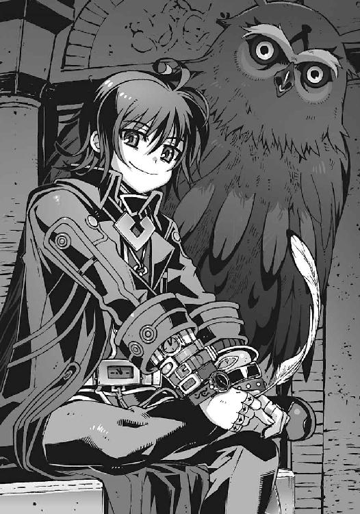
黒衣の男を見返して、僕は訊いた。どことなく目つきが鋭いような印象はあるが、基本的に、僕によく似た顔立ちの少年だ。目の下に浮いたクマが悪役っぽいが、それ以外は印象に残らない平凡な顔である。
特徴らしい特徴といえるのは、彼が身に着けている時計くらいか。
黒衣の袖口からのぞいているだけでも右手に七、八本。左手には十本以上の腕時計を巻いている。首にも懐中時計を何個かぶら下げ、よく見ればベルトのバックルも時計。高級品から安物まで、デジタルアナログ取り混ぜた脈絡のないコレクションだ。
時間の管理人を気取っているつもりなのかもしれないが、ただの時計マニアにしか見えない。
『......なんかイメージ違うね』
僕の気持ちを代弁するように、操緒が困惑気味の声を出す。
「てか、ガキ......なんだけど。どう見ても僕よりも年下だろ？」
軽く目元を覆って、僕は呟く。どうしよう。なんだか頭が混乱してきた。
こいつが本物の夏目直貴？ 僕の兄？ 期待はずれにもほどがある。これならまだニセ直貴のほうがなんぼかマシだった。
「ここは時間の流れが外とは違うんだよ」
僕たちの不満げな感想を察したのか、黒衣の少年が言い訳する。
「時間が静止している、というのも少し違うけど......同じ時間を無限にループしている世界だと考えてくれていいよ」
そう言って彼は、空中にくるくると円を描いた。渦巻き模様。螺旋。無限ループ。
「無限にループする世界か。空間だけでなく時間もつながっているのか。始まりと終わりが？」
「そのふたつはもともと同じものだよ、智春」
にこやかに笑って、時計男が告げた。
揚げ足をとられた気分になって、僕はムッとする。
「なんでそんなわけのわからないことになってるんだよ？」
「ここが人工的に造り出された異世界だからだよ。このサイズが限界だったんだ。時間的にも空間的にも。トータルで九千九百九十九秒間......三時間足らずのわずかな時間を、無限にループし続ける小さな世界」
「それが〝うずしお〟......なのか」
次元潜行チェンバーと律都さんが呼んでいた、機巧魔神の母艦というやつか。
しかし、時計男は不機嫌そうに唇を歪めて、
「その呼び名、嫌いなんだよね。格好悪いから」
「はあ」
べつに呼び名なんてどうでもいいだろと思ったが、チビ直貴は、それがさも重大事であるかのようにふて腐れている。見た目どおり、中身も子どもか。
「なんであんたはそんな小さな世界に引き籠もってるんだ？ 一人きりで......」
「まあ仕方ないよ。言い出しっぺだからね」
僕の質問に、チビ直貴はガリガリと頭をかく。
「たとえ時間がループしていても、外部からの影響を受けないわけじゃない。ここにある設備をメンテナンスする人間は必要だろ。だから、どうしても誰かがチェンバーの中に残らなければならなかったのさ」
『メンテナンス......って、機巧魔神の？』
うぇー、と操緒が露骨に嫌そうな顔をした。
その気持ちはよくわかる。なにしろ機巧魔神に封印された状態の彼女たち副葬処女は、生まれたままの無防備な姿なのだ。いくらメンテナンスのためとはいえ、こんな時計男にそんな姿を見られたくはないだろう。
しかしチビ直貴は、なぜか表情に焦りを浮かべて、
「いや、違う。心配しなくても、僕は機巧魔神には指一本触れてないよ。えーと、つまり副葬処女の皆さんの姿をのぞいたりしてないってこと。誓ってもいい」
『うわー......嘘くさ』
操緒がジト目でチビ直貴を眺める。直貴はほとんど泣きそうな顔になり、
「ば、馬鹿なことを言わないでくれ。律都は、ああ見えてけっこう嫉妬深いんだ。彼女より若い女の子の裸をのぞき見してたら、間違いなく死ぬより悲惨な目に遭わされる......」
ううう......と頭を抱えてうずくまる黒衣の少年。青ざめた顔で地面に向かって、震える声で呟き続ける。ごめんなさいごめんなさいごめんなさいごめんなさいごめんなさ......
あまり想像したくもないが、なにかトラウマになる出来事があったらしい。
操緒も多少の罪悪感を覚えたのか、後味の悪そうな表情で沈黙する。
『............』
「あの......直貴さん？」
面倒くさいやつだな、と僕は溜息混じりに彼の名を呼んだ。黒衣の少年は、ようやく我に返って顔を上げ、ゴホンとわざとらしい咳払いをひとつ。
「と、とにかく、量子転送される機巧魔神にはもともと自己修復機能があるし、それ以上の修理が必要なら、クロエがやる。だから僕が手を出す必要はないんだよ」
「──使い魔が？」
「そもそも機巧魔神は、人間の手に負える代物じゃないんだ、面倒くさくてさ。あれは機械というよりも人形だからさ。芸術品に近いシロモノなんだ」
「はあ......」
だからって、まさかフクロウが修理しているとは思わなかった。
しかし、言われてみれば〝二巡目の世界〟でも、修理が必要な機巧魔神は、潮泉家の屋敷に持ちこまれていた気がする。どうして潮泉家では機巧魔神が修理できたのか──その答えがこのフクロウか。てっきりあの爺さんが修理しているのかと思っていたが、違った。修理していたのは律都さんの使い魔だったのだ。
「僕が興味があるのは、機巧魔神なんかじゃないよ」
ようやく普段の口調に戻って、チビ直貴が言った。
「僕がここにいるたったひとつの目的は、ヤツの調査さ。ループする無限の時間を使ってヤツの正体を暴き出し、ヤツを倒す方法を見つけ出すことなんだよね。機巧魔神が造られた目的も、もともとはヤツを調べるためだしね」
「ヤツって......？」
狂気を滲ませた彼の声に、僕はわけもなく不安を覚えた。目の前の黒衣の少年は、いったいなにを言っているのだ？
「律都に聞かなかったのかい。世界を滅ぼすモノの正体」
チビ直貴が、愉悦に歪んだ表情で訊き返してきた。
「世界を滅ぼすモノ？」
僕はぎこちなく首を振る。彼女はなにも話さなかった。ただ世界の滅びる姿を見たと言っただけで。そして僕には、自分の目で確かめろ、と──
「ふーん......だったらきみも見てみるかい、智春？」
拍子抜けするほど気楽な口調で、直貴が言った。
「え？」
「クロエ」
直貴が使い魔の名前を呼ぶ。
巨大フクロウが僕たちのほうを振り返り、その双眸と目が合った瞬間、僕たちの見ている景色が切り替わった。人間の感覚では理解できない、膨大な量の情報が脳に流れこんできた。
その衝撃は、僕の意識を一瞬で破壊し、狂わせた。
自我が分裂し、意識が拡散した。閃光のような光とノイズが脳の神経細胞を埋め尽くす。
それはある種の無我の境地なのかもしれないし、単に狂気におかされただけかもしれない。
狂気の中でしか到達できないその境地で、僕は見た。
それは光の中を伸びていく巨大な樹木だった。
〝世界〟という名前の樹木だ。
たったひとつの小さな種から生まれ、無数に枝分かれし、複雑に絡み合う。
その枝のひとつひとつが〝世界〟だった。
僕たちが知覚している世界は、これら無数の枝のひとつでしかなかった。狂気に満たされた僕の意識が、それを理屈ではなく感覚で理解する。
〝世界樹〟の枝は、無限に分岐しながら、どこまでも伸びていく。
途中でやせ細り枯れてしまう枝も、再びほかの枝と融合するものもある。
しかし〝世界樹〟そのものは果てしなく永遠に成長していく。
──その前方に現れた〝腕〟が、それを遮るまでは。
「なんだよ、あれ......」
とてつもない恐怖に支配されながら、僕はそれを見た。
普通の人間の意識のスケールでは、知覚することもできない巨大な〝世界樹〟──
その行く手を阻む存在がある。
それは巨大な腕だった。
世界樹の枝を歪め、ねじ曲げ、へし折り、滅ぼす圧倒的な〝力〟──
眩い光の中から出現した、機械仕掛けの人形の腕だ。
「それはさっき説明したよ。あれが世界を滅ぼすモノ──」
直貴の声が、僕の耳元で静かにその名前を告げる。
「〝神〟だよ」
○
ふと気づいたときには、僕たちは元の地下聖堂に戻っていた。
さっきまで僕の心を満たしていた狂気と興奮は消え去って、それと同時に、完全に理解していたはずの真実の世界の姿も、忘却の彼方へと消え去っていた。
ただ恐怖の記憶だけが、余韻のように残っている。
光の中から出現する、機械仕掛けの巨大な腕の姿が──
『神って......神様のこと？』
操緒がぽつりと、誰にということもなく問いかけた。
僕は震える自分の肩を抱きながら、顔を上げる。背中を冷たい汗が流れ落ちる。
「あんないびつな外見の存在が......神？ だって、あれは......機械じゃないか......」
「機巧魔神が存在するんだから、機械仕掛けの神が存在してもおかしくないよね、べつに」
僕の言葉を、チビ直貴は愉しそうに受け流した。
「〝機械仕掛けの神〟という言葉はね、もともとは演劇の用語なんだ。物語が混乱して解決不能になったときに、突然どこからともなく〝神〟がやってきて無理やり劇を終わらせてしまう──そういう技法のこと。あまり褒められたやり方じゃないけど、今の僕たちの置かれている状況にはぴったりだよね？」
そう言いながら腕時計の回転ベゼルをカチカチカチカチと回し始めるチビ智春。文句を言うほどうるさいわけではないが、耳障りで鬱陶しい。
「あの〝神〟を、誰が造ったのかはわからない。異星人か、未来人か、あるいは本物の神様か......たったひとつだけわかっているのは、あれが、すべての世界を破壊するために造られたということだ」
「世界を......破壊する？」
僕は唖然としてチビ直貴を睨む。
「どうして......そんなことを......？」
「神が考えていることなんてわかるわけがないよ」
黒衣の少年は、肩をすくめて笑った。
「だけど......想像することはできる。おそらく原因は超弦重力炉だ」
「重力炉？」
そうだよ、と頷くチビ直貴。
「人類が、ブラックホールの制御を実用化することを阻止するためにヤツは出現した。かつてオリュンポスの大神ゼウスが、人類から火を奪おうとしたようにね。神様には、人間が重力制御の技術を手に入れたら困る理由があるんだろうね」
直貴の言葉にはなんの根拠もなかったが、奇妙な説得力があった。
神は人間が重力制御の技術を手に入れることを恐れている。それが、なにか致命的な危機をこの宇宙にもたらすからなのか、それとも彼らの地位を脅かす技術だからなのか──
『なんかさー......ケチ臭い話だねー』
沈黙する僕の頭上をふわふわと漂いながら、操緒が溜息をついた。
「ケチ臭い？」
直貴が面喰らったように訊き返す。操緒は、うんうんと首を縦に振り、
『神様だかなんだか知らないけど、要するに、ブラックホール制御の技術を手に入れた人類が、自分たちと同じレベルの存在になるのを恐れてるんでしょ？ 小っちゃい神様だよねえ』
「いいことを言う。そのとおりだよ、水無神操緒」
黒衣の少年は、そのとき嬉しそうに、本当に嬉しそうにそう言って笑った。
そんな彼の表情を見て、僕は理解した。
チビ直貴が、たった一人でこんな場所に残っていた理由。
彼が自ら望んで時間の牢獄に囚われることを選んだ原因は、怒りだ。
彼は、一方的に世界に破壊をもたらす〝神〟に対して本気で怒っている。そして神を倒す方法を探そうとしているのだ。しかしそんなことができるのか？
「──なあ、夏目直貴。あんたは、〝神〟が世界を滅ぼそうとしているのは、人類が重力炉を造ったせいだと言ったな？」
「うん。仮定だけどね」
そう言って再び腕時計を弄り始めるチビ直貴。カチカチカチカチ。やかましいっ。
「だったら......僕たちが過去に戻って、実用化される前に超弦重力炉を破壊すれば......」
僕が途切れ途切れにそう尋ねると、チビ直貴は、どこか懐かしそうに苦笑した。
「〝一巡目の世界〟の智春も、かつて僕に同じことを言ったよ」
僕は、しばらく無言でチビ直貴を見つめた。今ほんの一瞬だけ、この黒衣の少年が、やはり自分の兄なのだと実感できたような気がした。
「そうか。直貴......いや、こちらの世界の智春が、〝二巡目の世界〟で超弦重力炉を破壊しようとしてたのは......」
「超弦重力炉が実用化された歴史、を変えることで〝神〟の到来を防ごうとした──ということだろうねえ」
微苦笑を浮かべたまま、チビ直貴が言った。そういえば、と僕は思い出す。アニアも同じことを言っていた。〝二巡目の世界〟に戻って最後の遺跡を破壊しろ、と。
「それで本当に世界は救われるのか？」
「可能性はあるよ。だけど確実とはいえないね」
直貴が、カチカチと時計のベゼルを回す手を止めた。
「僕自身は、どこかの世界で重力炉が実用化された時点で、すべての世界を破壊する〝神〟の起動スイッチが入るように仕組まれていたんじゃないか、と思っている。〝神〟を造った連中も、人類のことをずっと監視していられるほど暇じゃないだろうしねえ」
証拠があるわけじゃないけどね、と自嘲気味に薄く笑う直貴。
僕は無言で、彼の言葉の意味を考える。
たしかに僕が〝二巡目の世界〟に戻って、遺跡化した超弦重力炉を破壊すれば、とりあえず重力制御技術の実用化は阻止できる。
だがしかし、重力炉の破壊と、〝神〟が止まるかどうか、という問題は別物だ。
通りすがりに薙ぎ払うように、世界樹の枝をへし折っていた〝神〟の姿を思い出す。あの化け物が、破壊する世界を選んでいた、とはとても思えなかった。
〝二巡目の世界〟の遺跡を破壊するだけで、あれが止まる可能性は低い。だからといって、無数に存在する異世界の、すべての重力炉を破壊する、なんてことは不可能だ。
だから〝一巡目の世界〟の智春は、自分に可能な最善の選択肢を選んだんじゃないのか？
だが、それでも〝神〟が止められないなら──だとすれば、どうすればいい？
『んー......じゃあさ、どうせだから〝神〟のほうをぶっ壊せばいいんじゃない？』
「は？」
緊張感のない操緒の言葉に、僕はぽかんと間の抜けた表情を浮かべた。
ムラムラと怒りがこみ上げてくる。まったくこの幽霊は。人が真面目に考えているときに──
「は......破壊するって、そんなこと出来るわけないだろ......！」
僕が思わず怒声を洩らし、しかし黒衣の少年は平然とした口調で、
「出来るよ」
「はいぃ？」
今度こそ呆気にとられて言葉を失う。通りすがりに〝世界〟を滅ぼしていくような化け物を、どうやって破壊するというのだ。地球上にある核爆弾を全部使ったって無理だ。
驚く僕に、直貴は頷き、
「もちろん人間には無理だね。今の人類の科学力では無理。そんな強力な魔力を持った悪魔も存在しない」
「だったら......！」
「だけど、いるだろ。理論上は、魔力を無限に増幅できる存在がさ」
ぞくり、と僕の背筋を冷たい感触が走り抜けた。
そう、いるのだ。この世界というシステムからはみ出した規格外品。悪魔を滅ぼす存在でありながら、悪魔の力を手に入れた禁忌の存在。
「......魔神相剋者......！」
僕はカラカラに渇いた喉で、その言葉を口にした。
カチ、と黒衣の少年の手元で、回転ベゼルが音を立てる。
「そういうこと。律都に事情は聞いてるよ。現時点で〝神〟を破壊できる可能性があるのは、塔貴也。彼と、彼のパートナーたちだけだねえ」
「......塔貴也......が」
「アニア・フォルチュナがこの世界に持ちこんだ〝点火装置〟というプラグイン......あれはそのための装置なんだ。魔神相剋者の魔力を無限に増幅して、〝神〟を破壊するためだけに造られた、なんというか超破壊兵器だよね」
「そんな......ものを......」
目が眩むような怒りを覚えて、僕はチビ直貴を睨みつけた。
「そんなものを......あの男に渡していいのかよ？ あいつは、あんたの弟を殺した──」
「──黙れ」
黒衣の少年が、低く呻くように告げた。
泣きそうに歪んだ彼の表情を見て、僕は握りしめた拳の力を抜いた。彼が隠していた怒りと哀しみを、嫌というほどに理解できたから。
「イグナイターは......」
チビ直貴は、胸元の懐中時計をじゃらじゃらと鳴らすと、何事もなかったかのように静かに微笑んで続けた。
「あれはとても特殊なプラグインでね、アニアにも、完全には構造が解明できなかったんだ。設計図もないし製造者も不明。ただ彼女が〝二巡目の世界〟からこちらの世界に持ちこんで、そしてこちらの世界に持ちこまれたから〝二巡目の世界〟の遺跡で発掘された」
「......は？」
チビ直貴がなにを言っているのかよくわからない。
イグナイターは、二巡目の世界の遺跡で発掘されて、一巡目の世界に持ちこまれた。
そして一巡目の世界に持ちこまれたから、二巡目の世界の遺跡で発掘された──？
「つまりさ、造った人間が誰もいないってこと。時間を巻き戻したせいで生まれた、初歩的な矛盾だよ。そしてその矛盾が〝神〟を破壊し得る唯一の可能性なんだ」
チビ直貴は愉快そうに、虚空に８の字型のループを描いた。無限の円環。∞。
「誰かがイグナイターを〝二巡目の世界〟に持ち帰って、塔貴也に渡す、それが〝神〟を破壊する唯一の方法だよ」
「............」
彼の話を聞き終えて、僕と操緒は互いに顔を見合わせた。
もしもその言葉が事実なら、たしかにそれは人類が確実に助かる唯一の方法、ということになる。しかし、なにかが心に引っかかる。
『ニアちゃんは、そのことを知ってるの？』
むーん、と唇を尖らせて操緒が訊いた。
黒衣の少年はあっさりと首肯。
「もちろん。イグナイターを調べていたのはもともと彼女だしね」
その返事に、僕の疑念が深くなる。アニアは世界を救う方法を知っていた。だったら、なぜそれを僕たちに言わなかったのか。遺跡を破壊する、などという不完全な計画を伝えたのか。
もしもアニアが言わなかったのではなく、言えなかった、のだとしたら？
なにか直貴が隠していることがあるとしたら──
「イグナイターを使った魔神相剋者はどうなるんだ？」
「ん？」
僕の唐突な質問に、チビ直貴はなぜか表情を消した。
無意識に目を逸らす彼に向かって、僕は再び問いかける。
「〝神〟を破壊するほどの魔力を放出して、無事でいられるのか......？」
「それはきみには関係ないことだろ？ 相手は、もうひとりのきみ自身を殺した男だしさ」
黒衣の少年は、そう言って無責任に両手を広げた。
「だけど......！」
僕は激しく首を振る。たしかに塔貴也は兄貴を殺した。だがそれは、彼が死んでもいいということにはならないのだ。、
「それに〝二巡目の世界〟の塔貴也も、イグナイターを渡せと言ってるんだろ。どういうつもりか知らないけどさ。手間が省けたじゃない」
チビ直貴が醒めた口調で言う。僕は沈黙。悔しいが、なにも言い返せない。
どのみちこのままでは世界は滅びる。そしてそれを防げるのは魔神相剋者である塔貴也だけなのだ。それがたとえ彼を犠牲にすることになっても──
僕たちの張り詰めた沈黙が、狭い地下聖堂の中を満たす。
『......鐵......修理できないかな』
そのときぽつりと呟いたのは、操緒だった。
話題の飛躍についていけずに、僕とチビ直貴は、揃って怪訝な表情を浮かべる。
「は？」
『どのみち、操緒たちが〝二巡目の世界〟に戻るためには鐵の力が要るよね。だからあたしたちは、ここまでそれを訊きにきたんだけど』
そういえばそうだったな、と僕は思い出す。チビ直貴に見せつけられた光景に圧倒されて、本来の目的を忘れるところだった。
チビ直貴は、少しやりにくそうに首を振る。
「破壊された鐵を元に戻すことは、もう無理だ。部品の欠損が多すぎる」
そう言って彼は、自分の使い魔に合図をした。
空間移動の不快な感覚が再び襲ってきて、僕は吐き気をこらえながら嘆息する。これ、正直けっこうつらいんだが。いちいち部屋を動くたびに空間を歪めるのはやめて欲しいなあ。
激しい目眩から解放されて、僕たちが移動した先は、見覚えのある回廊だった。
石畳の通路の両脇に、円筒形のカタパルトがずらりと整列。カタパルトの中にはそれぞれ、鎧をまとった機械人形が格納されていた。
管制室で見た映像と同じだ。機巧魔神の格納庫──
そこには大破した《鐵》の姿もあった。
傷つき倒れたその姿に、僕は鈍い痛みを感じた。こんな姿になってまで、《鐵》は僕を護ってくれたのだ。
「もしもきみたちが、塔貴也の代わりに〝神〟と戦おう、なんて考えているのなら、諦めたほうがいい。夏目智春。きみたちの機巧魔神はもう戦えないし、きみには契約悪魔がいない」
黒衣の少年が、冷たく告げる。彼の言葉に悪意はなく、淡々と事実だけ指摘する口調だった。
操緒はその間、大破した《鐵》の姿を、なぜか興味深そうにじろじろと眺め回していたが、
『んー......ちょっと思ったんだけど』
自分のこめかみに人差し指を当てながら、いつもの呑気な口調で言った。
『白銀の部品を使えばいいんじゃないの？』
「え？」
僕はのろのろと操緒を振り返る。呑みこみの悪い相方を操緒はやれやれと見下ろして、
『ほら、前に誰か言ってたじゃん。鐵と白銀は同型機だって。だったらさ、白銀の部品をもらってきて、鐵の修理に使ったらいいじゃん』
「それは......」
僕は軽く混乱しながら、操緒の言葉を反芻する。彼女の意見に論理的な矛盾はない、ように思える。だが、そんなことが本当にできるのか？
「悪くないアイデアだが、無理だよ。今はね」
僕の代わりに答えたのは、チビ直貴だ。操緒はちょこんと首を傾げて、
『なんで？』
「白銀は、悪魔である嵩月奏の肉体を内部に封印したことで、動作不良を起こしている。その状況を作ったのは、きみだろ、水無神操緒？」
『あー......なんか、そう言われるとそんな気も』
曖昧な記憶を辿るように、操緒が眉間に皺を寄せた。
副葬処女を失った《白銀》を共振によって無理やり操り、非在化で消滅寸前だった嵩月を救ったのは操緒だ。それは《白銀》と《鐵》が同型機だから出来たことらしい。従って二機の部品に互換性がある、という操緒の説は、あながち根拠のない話ではない。しかし、
「機能停止した白銀は、この母艦に戻ってきていない。だから部品のやりとりも不可能だ。僕を護っているクロエは、この牢獄から出られないから白銀を回収することもできないしね」
『だけど嵩月の肉体を......白銀から取り出したら......』
「そうすれば、一巡目の肉体に宿っている彼女の魂は、本来の二巡目の肉体に戻るよ。そして非在化が限界まで進行している彼女は、そのまま消滅することになるだろうね」
『う......』
黒衣の少年に言い負かされて操緒が沈黙する。
直貴は、ちらりと自分の使い魔を見上げ、
「クロエは、今の状態の鐵でも、一度きりなら時空間の移動に耐えられると言っている。副葬処女の無事も保証するってさ」
『あたしたちが〝二巡目の世界〟に戻れるってこと？』
「そうなるねえ」
直貴、無責任な口調でそう言って僕を見つめた。
「従って、きみに残された選択肢はふたつだね、夏目智春。〝二巡目の世界〟に戻って塔貴也にイグナイターを渡し、彼が世界を救う手伝いをするか。それともこのまま、こちらの世界に残って世界の滅びを見届けるか──」
黒衣の少年が僕に訊いてくる。まるで僕に契約を迫る、おとぎ話の中の悪魔のように。しかしそんな直貴の言葉は、突然の振動音によって破られた。
バサッ──と翼を広げて、クロエが振り返る。
使い魔の視線が見つめていたのは、空のカタパルトのひとつだった。無人状態のカタパルトの蓋が開き、どこからともなく帰還した機巧魔神が、その内部に格納された。大砲に自動装填される砲弾を連想させる動きだ。白い蒸気をまき散らしながら、伸びてきたシリンダーが機巧魔神を固定する。
帰還した機巧魔神は右手に巨大な剣を握っていた。銀色の鎧を持つ機械人形だ。胸部装甲は無惨に切り裂かれ、その中に封印されているはずの副葬処女の姿はない。
「白銀が戻った？ あれ、どうして......？」
直貴が困惑した表情で言う。
操緒が、帰還した《白銀》の中をのぞきこみながら訊いてくる。
『嵩月さんはどうなったの？ ねえ、智春、嵩月さんは!?』
僕はなにも答えられない。空っぽの機巧魔神の中身を呆然と見つめて、
「......嵩月に......なにかあったのか......」
ただ弱々しい声を出す。《白銀》解放されたた嵩月は、本来の悪魔の肉体に戻って、やがて消滅する──直貴に聞かされた言葉が生々しく甦る。
だが、なぜだ。律都さんと一緒に研究所に残った彼女に、なにがあった!? 人間化していた無力な嵩月に？
半ば放心状態のまま歩き出し、僕は無人の《白銀》に触れようとした。
その直後──
僕たちのいる地下回廊が、激しく揺れた。
「ば......爆発!?」
地震のように石畳の床が波打ち、僕は立ち続けられずに膝を突いた。伝わってきた衝撃で、回廊の石柱がビリビリと震えた。機巧魔神を格納したカタパルトが軋み、火花が散る。
「信じられない。こんなことが......」
直貴が、頭上を見上げて呆然と呻いていた。
なにがあった、と見上げる僕に、黒衣の少年は顔を歪めてみせた。彼を護るように翼を広げたフクロウを背に、彼が答える。
「超弦重力炉内部に──────侵入者、だ」
六章
次元潜行チェンバーとは重力炉内部の不安定な異空間に造られた密室であり、同時に異空間そのものでもある──というのが直貴の説明だった。中と外が存在しない空間、というのは、つまりそういうものらしい。
「内側が存在しないから、中に入ることができない。外側が存在しないから、外に出ることもできない──わかりやすくいうと、そんな感じ。なにしろべつの空間だからねえ。だから魔橋なんてものが必要になるんだけども」
侵入者がいる、と言っておいて、そのくせ妙に余裕ぶった態度で直貴が解説する。
その間にも次元潜行チェンバーの揺れは続いていた。何度も爆発音が鳴り響き、そのたびにもともと不安定な空間が激しく揺れる。
「で、侵入者......って、こんなところにいったい誰が？」
手近な柱につかまりながら、どうにか僕は立ち上がった。普通の人間はここには入れないんじゃなかったのか。だいたい、なにを好きこのんでこんなところに来たんだ。いったいなにが目的だ？
「こういうことをする連中の心当たりは、ひとつだけだねえ」
直貴は頭上を見上げたまま、のんびりとした声を出す。
彼の言葉に、僕は一人の女性を連想した。すでに非在化して滅びた国家の末裔。毒花を思わせるショートヘアの美女──
「クラウゼンブルヒ財団......か！」
僕の言葉に頷く直貴。そう。彼女たちには、超弦重力炉に侵入する理由がある。財団が求めていたのは機巧魔神だ。そしてこの次元潜行チェンバーは、機巧魔神の母艦なのだから。
『財団......って、誰？』
事情を知らない操緒が、僕に訊いてくる。が、説明する時間が惜しい。とにかく彼らが味方ではないことだけはたしかだ。
「連中は前から僕らのことを嗅ぎ回ってたからねえ。連中もようやく機巧魔神の在処の確証をつかんだ、ってところだろうね」
腕の時計を見下ろしながら、直貴が他人事のように呟いた。
何気ない彼のひと言に、僕は責任を感じて呻いた。財団がマークしていたのは、どちらかといえば僕たちのほうだ。その僕たちが重力炉の中を訪れたその日に、財団の襲撃。偶然ではないだろう。僕たちは財団に尾けられていたのだ。
「研究所は......無事なのか!?」
直貴を睨んで僕は訊いた。十字稜に残っているアニアや律都さんには、直接的な戦闘能力がない。ましてや人間化した今の嵩月は、ただの無力な女子高生でしかない。財団が僕たちのあとを尾けてきたのなら、彼女たちが危険だった。
「心配しなくても、管制室は無事だよ。施設の職員たちも避難を終えている」
クロエとなにか会話をして、直貴がその言葉を通訳してくる。律都さんの使い魔であるこの巨大フクロウは、離れていても律都さんたちの様子が視えるらしいが──
「だったら、白銀はどうして......!?」
無人の機巧魔神を振り返って、僕が叫ぶ。嵩月が無事だと言うのなら、なぜ《白銀》に封印されていたはずの彼女の身体が消えているのだ？
黒衣の少年は、しかし冷たく首を振り、
「さあね。でも、これできみの選択肢がひとつ増えたね。直るよ、鐵」
「なにをそんな呑気なことを──」
激昂して僕は直貴に詰め寄ろうとした。だがその前に、これまでよりも桁違いに強力な震動が回廊を襲ってきた。
詳しいことはわからないが、僕にもだいたいの状況は想像できた。次元潜行チェンバーを覆う結界が破られたのだ。このままでは、財団がこの回廊に侵入してくるのも時間の問題だ。
「──仕事だ、クロエ。彼の機巧魔神を修理してやってくれ」
直貴が、自分の傍らに立つ使い魔に命じた。
驚く僕を眺め、黒衣の少年は、ファミレスの店員に水のおかわりをねだるような口調で、
「そうだねえ。一千秒ばかり時間を稼いでもらえるかな。約十七分ってところ」
「あんたに命令されなくても──」
そうするよ、と僕は言いかけて、
「いい答えだ」
ニヤリ、と直貴は笑いながら、僕に向かって腕時計を一本放り投げた。
それを受け取った直後、僕の視界がぐにゃりと揺れる。そして視界の揺れが収まったとき、僕は教会の大聖堂にいた。
頭上に高く伸びる石の柱と、精緻な彫刻を施された壁。
そして砕けたガラスの破片と、瓦礫が散らばる大聖堂に。
「............な」
爆発の震動の中で僕が目にしたのは、無惨に破壊された聖堂の壁──
引き裂かれた美しい絵画と、砕け散った副葬処女たちの遺体だった。
○
破壊された聖堂の広間を背景に、一人の女性が立っていた。ヒールの高い靴と、網タイツ。胸を強調したタイトなスーツ。ショートの金髪と──緑の瞳。
「ダルア・ミドラマルスィ・クラウゼンブルヒ......！」
その女を睨んで、僕は唇を噛んだ。もっと早く気づくべきだった。彼女の故郷は非在化して消滅したと、彼女自身が言っていた。なのに、なぜ彼女は非在化した故郷の記憶を持っているのだ？ 彼女がこの世界の人間ならば、当然、失っているはずの記憶を──
「そうか......あなたも悪魔だったのか......」
故郷の非在化に巻きこまれ、悪魔化していたために、彼女たちは記憶を失わなかった。普通の人間には耐えられないはずの、重力炉に侵入できたのも、そのせいだ
「案内......ご苦労でしたわね。夏目智春セカンド」
ダルアが愉快そうに美貌を歪めた。破壊された聖堂内を見回して、彼女は無邪気に笑い、
「まさか重力炉の中に機巧魔神の基地があるなんて、さすがに盲点でしたわ。この空間に侵入するのに少しばかり苦労しましたから、手荒な方法をとらせていただきました」
『智春......魔橋が......』
操緒が僕の耳元で囁いた。ああ、と僕は無言で頷く。
破壊された螺旋状のスロープが、聖堂の壁に激突して大穴を穿っていた。隔離されたクライン空間には存在しないはずの〝出入口〟だ。さっきの巨大な爆発は、こいつが境界を破壊した衝撃らしい。破壊された魔橋の断面は、磨いた鏡のような滑らかさ──その切り口の異様な鋭さにゾッとする。
「僕たちを、ずっと監視してたのか......」
怒りで掠れた僕の言葉を、嘲るような表情でダルアは訊いた。
「ウフフ......忠告さしあげましてよ。後悔することになるって」
頬に手を当てて上品に微笑む美女を、少し不思議そうな表情で操緒は観察。
『ね、智春......誰、このおばさん。知り合い？』
いつもと同じ緊迫感のない操緒の声が、石材で囲まれた聖堂内にやけに大きく反響する。僕は慌てて首を振った。バカ、聞こえたらどうするんだ。
「おばっ！」
そして僕の視界の隅に、絶句するダルアの姿が映る。しっかり聞こえていたらしい。
それでもダルアは、大人の自制心でどうにか怒りを抑え、
「と、とにかく──この施設は、我々財団が接収させてもらいます。機巧魔神は、あなたがたお子様のオモチャではありませんの。それがこの世界のためなのですわ」
「......機巧魔神を手に入れても、あんたたちには使えないよ」
僕は素っ気なく言い放つ。
「悪魔であるあんたたちは、演操者にはなれない。機巧魔神の生け贄にもなれない」
『年齢的にも......ちょっと厳しいよね』
さらっと余計なことを言い足す操緒。僕は彼女の言葉をかき消すように慌てて腕を振り、
「あんたには見えなかったのかよ。世界を滅ぼす〝神〟の姿が......！」
「〝神〟......ですって」
ダルアがぴくりと眉を動かした。なにか彼女にも思い当たる知識があったのかもしれない。僕は彼女の細い瞳を睨みつけたまま、
「二巡目の世界に逃げたって同じなんだ。あいつをなんとかしない限り、いつか必ず世界は滅びる。息を潜めてやり過ごすか、それとも神と戦うか──あんたに選択の覚悟はあるのかよ？」
「......そんな言葉を、私が信じると思いまして？」
半分は自分自身に言い聞かせるような口調で、嘲りの笑みを浮かべるダルア。そんな彼女の反応に思わず微苦笑が洩れる。
「僕たちだって......信じたくなかったよ」
嘆きの言葉がダルアの耳に届く前に、彼女の背後で小さな爆発が起きた。
銃器を持った兵士たちが五人ほど、壁面の亀裂から聖堂の中に入ってくる。
重力炉に侵入してきた彼らも、おそらく悪魔なのだろう。武装していることから判断して、直接的な攻撃能力を持たないタイプなのかもしれないが、どちらにしても脅威には変わりない。
「機巧魔神のところまで案内していただけるかしら、セカンド。さもなくば、この施設を破壊してでも捜させていただきますわ」
ダルアが優艶な微笑を浮かべて、僕を脅迫する。僕は彼女を睨んで首を振る。
「悪いけど──僕も知らないんだ。どうやれば機巧魔神の格納庫に行けるのか」
「ああ、そう。そういう態度？」
ダルアはつまらなそうに呟くと、背後の兵士たちに合図した。
兵士たちの一人が、壁に向かって武器を構えた。天体望遠鏡のような巨大な筒を肩に担いで、照準器で狙いを付けている。人間の頭がすっぽりと入りそうなぶっとい砲身は、ライフルとは桁違いの迫力があった。ミサイル──いや、ロケット砲か。まさか壁をぶち抜くつもりか──
そして、彼らが狙いをつけた場所には、水晶細工の少女たちの彫像があった。
副葬処女たちの遺体が──
「やめろ──ッ！」
僕は考えるよりも先に絶叫していた。
極度の感情の昂ぶりが、悪魔本来の能力を覚醒させる。全身の血液が怒りで沸騰するような感覚。自分と世界のズレを感じ、そのズレを魔力として引き出す能力。
悪魔の魔力とは、すなわち世界との摩擦だ。
水を攪拌して白く泡立てるように、あるいは空中へと水飛沫を放つように。
それは世界の境界にいる存在にとっては、なんということもない簡単な行為だ。
だが混じり合ったふたつの異質な世界は、致命的な破壊の力へと変わる。激しく反応した酸素と水素が巨大な爆発を生み出すように、膨大な魔力が自分の身体から放たれるのを感じる。
兵士が引き金を引き絞り、ロケット弾が発射された。
その前方に漆黒の影が出現する。
暗闇を固めて造ったような妖鳥──〝悪魔〟夏目智春が召喚した魔精霊。触れるものすべてを消滅させる、闇色の魔力の塊だ。
魔精霊はロケット弾と空中で激突し、爆発を生み出すことすら許さず、そのまま弾体を喰らい尽くした。そして自らも消滅する。
対消滅──それが僕の能力の正体だ。
それを見たダルアの表情が歪んだ。
「馬鹿な子......後悔なさい！ ヘザー！」
「なっ!?」
ヒステリックに叫んだダルアの背後に、ゆらりと巨大な影が出現した。
それは巨大な爬虫類の形をしていた。全長は六、七メートルほど。全身をウロコに覆われた、恐竜めいた姿の巨体だ。凶悪で、どこかユーモラスでもあるその姿は──
「カメレオン!?」
『き......きもっ』
操緒が、ぎえっ、と嫌そうな表情を浮かべる。カメレオンに似た姿のその怪物は、額にある紅玉色の角を発光させながら、ダルアに付き従うように彼女の隣で身構える。
「使い魔！ いったいどこから......！」
前触れもなく出現したダルアの使い魔が、左右の瞳をぐりぐりと回した。金属の隙間から洩れる空気のような不快な鳴き声を響かせながら、角を深紅に輝かせ、
『智春、伏せてっ！』
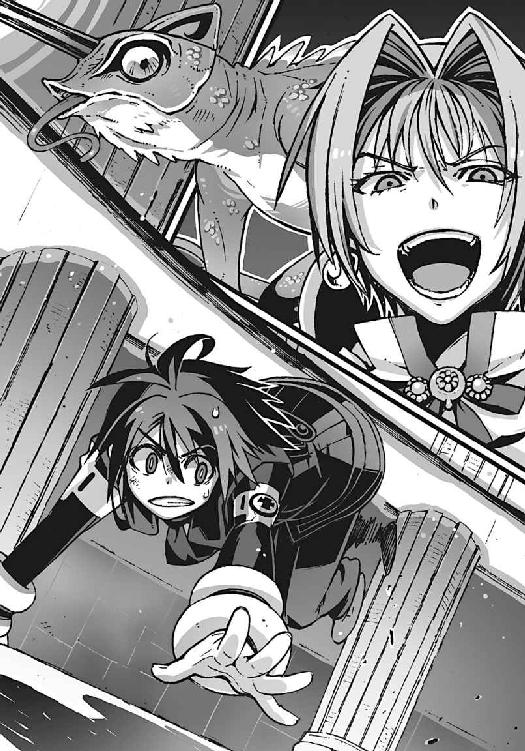
異様な気配を察した操緒の声に、僕は弾かれるように地面に転がった。
その頭上を、なにかが音もなく通り過ぎた。空中に定規で引いたような深紅の光線。それは空気中を舞う粉塵を一瞬で蒸発させ、灼けたオゾンの匂いをまき散らす。
「レーザービーム!?」
使い魔の攻撃の正体に気づいて、僕は絶望的な悲鳴を上げた。
僕の背後で、斜めに切り裂かれた石柱が、ゴトンと音を立ててずり落ちる。超高温の破壊光線。でたらめな威力の殺人レーザーだ。
冗談じゃない、と僕は呻いた。こんなものどうやって防げというのだ。一千秒間、時間を稼げ、とか直貴もムチャを言ってくれる。
「──行け、魔精霊！」
相手の攻撃を避けられない以上、先に相手を倒すしかなかった。僕の召喚に応じて、漆黒の妖鳥が出現し、ヘザーと呼ばれていたダルアの使い魔へと襲いかかる。
狙ったのは使い魔の角だった。あの角を破壊してしまえば、とりあえずレーザーは撃てないはず。
光速で飛ぶレーザーには及ばないまでも、弾丸並みの速度で魔精霊は飛翔する。そして正面から使い魔の顔面に直撃する──いや、直撃したはずだった。
だが、魔精霊はそのまま使い魔の身体をすり抜けて、そのまま背後の壁に激突した。
カメレオンに似た巨体がゆらりと揺らいで、姿を消す。
そしてそのすぐ隣に、無傷のままで再び出現する。
「瞬間移動!? いや......分身か？」
どうなってんだ、と僕は焦燥感に駆られる。あれだけの攻撃力を持つ使い魔が、実体のない幻ということはあり得ない。それなのに、なぜ攻撃が当たらない？
「対消滅能力......純粋な破壊の力......それがあなたの悪魔能力なのね、夏目智春セカンド？ 普段よっぽど鬱憤が溜まっていたのね」
僕の魔精霊が破壊した壁を見やって、ダルアが感慨深げに呟いた。
操緒は真顔で僕の目を見つめ、
『ほかにも色々たまってるよね』
「おまえはなんでそういうことを言うんだよ！」
激しい疲労を覚えながら僕は喚く。
ダルアがクッと嘲笑する。
「すごい威力だけど、当たらなくてよ。私のヘザーは、光を自由に操る。幻影を作り出すだけではなく、こんなふうに姿を消すことも──」
「なっ......」
無音で姿を消していく使い魔の巨体を、僕は呆然と見上げて呻いた。
『智春っ！』
操緒が叫んだ。だが、彼女の声に反応する前に、僕の全身を凄まじい衝撃が襲ってきた。
姿を消したままの使い魔の攻撃。おそらく尻尾による一撃なのだろう。トラックに撥ねられたような爆発的な打撃力に、僕はそのまま壁際まで吹き飛ばされた。
「くっ......」
かろうじて意識は繋がっていたが、全身が痺れて動けない。
ダルアがどうやって僕たちを監視し、重力炉の入口を見つけ出したのか、ようやくわかった。
おそらく、使い魔と同じ種類の可視光の制御能力を、ダルア自身も持っているのだろう。彼女は、その能力で姿を消して、何喰わぬ顔で僕たちのあとをついてきたのだ。
そして研究所地下の門の位置を確認したあと、研究所を占拠し、部下の兵士たちを招き入れた。こんな使い魔を連れた悪魔に、建物の内側から襲撃されたら、十字稜のようなただの民間研究所はひとたまりもあるまい。
「あらららら......痛そー」
傷ついた身体で立ち上がろうとする僕を、最高の笑顔で見下ろすダルア。
「子どもがつまらない意地を張るからそうなりますの。なにもわかっていない無力なガキは、そうやって地べたに這いつくばっているのがお似合いでしてよ──ヘザー！」
ダルアの使い魔が、紅玉色の角を発光させながら聖堂の壁を睨む。通路を塞いでいる副葬処女たちの遺体を、レーザーで薙ぎ払うつもりなのだ。
しかし使い魔は、苦悶の悲鳴を上げて攻撃を中断する。
使い魔の首筋、ウロコに覆われた皮膚が爆発し、その下の筋肉組織がのぞいている。僕の魔精霊の攻撃だ。
「やめろって言ってるだろ......」
僕は顔を上げてダルアを睨んだ。
渾身の魔力を乗せた一撃だったが、魔精霊の攻撃は使い魔にはあまり効いていない。魔法攻撃に対する使い魔の抵抗力が高いせいだろう。
それに魔精霊の召喚もそろそろ限界だった。前回の戦闘では気づかなかったが、召喚は僕自身の体力を予想以上に消耗させる。僕の全身を襲う疲労感は、使い魔に受けた攻撃のせいだけではない。しかしそれをダルアに気づかせるわけにはいかなかった。
壁にもたれるようにして立ち上がる僕の姿に、ショートヘアの美女は顔つきを歪め、
「しつこいわね」
彼女の言葉と同時に、深紅の閃光が僕の身体を貫いた。
脇腹に突き刺さるような激痛を感じて、僕は再び転倒する。化学繊維と肉の焼ける嫌な匂い。使い魔のレーザー攻撃だ。
それは身体をかすめただけだが、それでも今の僕に残されたなけなしの体力を奪うくらいの効果はあった。石畳の上に転がって、僕は無様にのたうち回る。
「ほら、ご覧なさい。あんたになにができるのよ。一人で世界を救えるとでも思ってるわけ？ ガキは黙って大人のやることを見てなさいな」
ダルアは、つまらなそうに僕を見下ろしている。
「私たちには経験がある。知識もある。組織も、壮大な計画を実施するだけの実行力もある。そういうものを手に入れるために多くの犠牲を払って、耐えてきたの。なんの努力も知らないお子様とは違うのよ！」
大人か、と僕は血の味のする唾を吐き出して笑う。
なるほど、たしかに彼女は大人だ。どうしようもなく、ただの大人だ。いつの間にか自分で決めた枠の中に閉じこめられて、その外側にあるものには気づかないふりをしている。自分が手に入れたものばかりを眺めて、失ったものの大きさに気づいていない。
故郷と引き替えに手に入れた悪魔と使い魔の力に溺れ、機巧魔神の力を手に入れるために、今度は世界を引き替えにしようとしている。
この人たちは、なにも、わかっていない。
「世界は僕が救うよ」
僕はゆっくりと立ち上がる。使い魔に吹き飛ばされ、レーザーに焼かれたボロボロの身体で。ダルアはそれを、なにか不思議なものでも見るような瞳で見つめている。
「〝二巡目の世界〟の遺跡は破壊するし、あの〝神〟も僕がどうにかする」
そう断言して、僕は笑った。
その瞬間、ダルアの美貌が醜く歪んだ。自分を理解してくれないものへの憤怒と、そして理解できないものに対する恐怖で。
「ヘザー！」
ダルアが使い魔の名前を叫ぶ。ウロコに覆われた巨大な爬虫類が、レーザーの発射準備に入る。さっきのような威嚇ではない。僕を本気で殺す気だ。
なのに僕の耳元では、クスクスと悪戯っぽい含み笑いが聞こえてくる。
『そうだね』
笑っていたのは操緒だった。空中を漂う幽霊の少女が、僕を見下ろして、どこか誇らしげに誰かに向かって呼びかける。
『それに智春は一人でもないしね......ね、そうでしょ？』
そしてその問いかけに、凜とした声が静かに答える。
「──はい」
深紅のレーザーが放たれる。膨大な魔力によって収束された灼熱の光線。
絶対に回避不能の、秒速三十万キロメートルの死の刃。
しかしその必殺の攻撃は、僕の眼前で斜めに折れ曲がり、無関係の方向へと飛び去った。
「えっ......!?」
僕も、そしてダルアも驚愕に動きを止めていた。凍りついたような沈黙の中、ふわり、と舞い降りてきた影がある。モノトーンで統一された制服。長い黒髪。右手に握られた小さな懐剣。
ほっそりとした少女が僕の眼前に立ちはだかって、レーザーの一撃を防いだのだ。
僕は震える声で彼女の名を呼んだ。
「......嵩......月」
嵩月奏だった。
○
「ヘザー──ッ！」
ダルアが怒鳴った。まるでその声に怯えたように、使い魔がレーザーを乱射した。
しかし結果は同じだった。深紅の殺人光線は、嵩月の眼前で折れ曲がり、彼女を傷つけることができない。
「光は、密度が異なる空気の層に侵入することで、屈折する──」
嵩月が全身にまとっているのは陽炎だった。
彼女の周囲の大気が、急激な温度の上昇によって、ゆらゆらと不規則に揺れている。
それは砂漠に蜃気楼が発生するのと同じ原理だ。真っ直ぐな棒を水中に入れると曲がって見えるのと同様に、熱せられた空気は光をねじ曲げる。嵩月は、熱した空気の層をまとうことで、レーザー攻撃を屈折させていた。ダルアの使い魔の攻撃は、嵩月には届かない。
「光を操れるのは、あなたたちだけじゃ......ない」
「くっ......」
ダルアが、憤激のあまり言葉を失う。
財団の女幹部と対峙する嵩月の姿を、僕は呆然と見つめていた。
なぜだ、という呟きが思わず洩れた。なぜ人間化したはずの嵩月が、炎使いの悪魔の能力を使っている？ なぜ悪魔しか入れないはずの重力炉の中にいる？
「嵩月......悪魔の身体に戻ったのか!? どうして？」
咎めるような僕の問いかけに、嵩月は微笑みながら首を振った。
彼女の長い髪の先端が、さらさらと音を立て、透明な砂のように崩れ落ちる。
「ニアちゃんに頼んで、分離器を使わせてもらいました。わたしが、あのまま人間の身体に残っていても、そう長くは保たなかった......から」
「だ、けど、......」
「わたしの身体を解放すれば、白銀は再起動して母艦に戻れる。そうすれば鐵も復活できる──白と黒はもともとひとつの存在だから」
淡々と告げられた嵩月の言葉に、僕は自分が失策を犯したことに気づいた。
〝太極は両儀を生じ、両儀はやがて太極へと還る〟──ニセ直貴が僕に残した言葉を、嵩月に聞かせてはいけなかったのだ。僕が気づかなかったあの言葉の本当の意味に、聡い嵩月は気づいていた。
かつてニセ直貴は、《鐵》を予備機だと言った。
だが、それは同型機である《白銀》も同じだったのだ。
二体のうちのどちらか──あるいは、両方が戦闘で失われても、予備機として使えるように、そのために同型の機巧魔神が用意された。
あの二体には部品の互換性がある。それらを交換することで、大破した状態からでも復活が可能だ。白と黒は同じ設計図から造られ、そしてひとつの機体へと還る。
「だけど......嵩月の身体は、《白銀》から出たら、もう......」
制服の袖からのぞく嵩月の左手は、手首近くまでが、透きとおったガラスのように変質していた。おそらく彼女の左腕はもうほとんど動かない。
そして、非在化の影響を受けているのは彼女の左腕だけではない。すでに限界近くまで非在化が進んだ嵩月は、本来なら立ち上がることもできないはず。今の彼女はいつ消滅してもおかしくない状態なのだ。彼女が悪魔の能力を使えば、さらに彼女の消滅は早まっていく。
しかし嵩月は美しく微笑んで、懐剣の鞘を抜く。
「約束しました」
懐剣の刃を握りしめた彼女の右手から、鮮血が滴った。流れ出した赤い血が、灼熱の地獄の業火へと変わる。その炎はやがて一振りの剣の形へと変わった。嵩月一族の護り刀──焔月！
「夏目くんは私が護ります──」
よせ、と制止する僕の声は、嵩月には届かない。彼女は全身に炎をまとって疾走。ダルアが恐怖の相で彼女を見つめ、
「ヘザーッ！」
使い魔が、ダルアを庇って前に出る。紅玉色の角が発光し、レーザーを放つ。しかし深紅の閃光は、嵩月には届かない。嵩月が剣を振り下ろし、灼熱の炎が使い魔の顔面を焼く。苦悶に喘ぐ使い魔が動きを止める。
「──魔精霊！」
無防備になった使い魔へと、僕は魔力を叩きこんだ。対消滅の能力を持つ漆黒の妖鳥が、使い魔の顔面に炸裂する。
絶叫が聖堂を震わせた。嵩月の炎と魔精霊の直撃が、使い魔の魔法防御を撃ち抜いたのだ。致命傷ではなかったが、使い魔は角を失っていた。殺人光線はもう使えない。
「なんてことを......っ！」
怒りの形相で、ダルアが呻く。彼女の身体が揺らめいて、背後の風景に溶けこんでいく。光学迷彩。彼女の魔力で光を操って、そのまま逃走するつもりなのだ。
だが、その試みは無駄だった。
嵩月がまき散らした地獄の業火が、聖堂内の大気を歪ませ、光の屈折率を変える。ダルアの光学迷彩は発動しない。出来の悪い合成写真のように、ショートヘアの女性のシルエットが、炎を浴びてくっきりと浮かび上がっている。
それでも逃走しようとするダルアの前に、嵩月がゆらりと舞い降りた。彼女の肢体が優雅な踊りのように舞う。炎舞。
動きにくいハイヒールに、タイトなスーツが災いした。嵩月に投げ飛ばされたダルアは、受け身をとることもできずに落下した。そこには彼女が破壊した聖堂の瓦礫が散らばっていた。
耳を塞ぎたくなるような嫌な音が鈍く響き、一瞬遅れて、
「ぎゃあああああああああああっ！」
ダルアが絶叫した。彼女の顔面から鮮血が散った。
嵩月はそれなりに手加減していたが、ダルアは予想以上に鈍かったし、運も悪かった。顔面からもろに瓦礫に突っこんだ彼女は、前歯が欠け、鼻が不自然な形に歪んでいる。
副葬処女の遺体を破壊し、僕を殺そうとした代償としては、それでもまだ足りないと思えたけれど──
「よくも......よくもっ、この私の顔を......」
鼻血と涙でドロドロの顔を上げながら、ダルアはふがふがと喚き散らした。
「どうして!? どうして邪魔するのよ。あたしたちにはもうなにも残っていないのよ！ 自分たちの祖国も、愛した人も、未来も──だからせめて〝力〟だけでも寄越しなさいよ！ あたしたちはただ安心したいだけなのよ。こんな不安な暮らしはもう嫌なの！ 機巧魔神があれば、もうあんな恐い思いはしなくて済む。恐いのはもう嫌なのよ──！」
くだらないことを言っている、と僕は思った。
どんなに強大な力を手に入れたって、自分が持っているものにこだわっている限り、安心なんてできるはずがない。幸せになれるはずがないのだ。
たったひとつしかない〝命〟すら投げ出して、僕を助けに来てくれた嵩月に、彼女が勝てるはずがない。しかし、大人であるダルアには、そんな簡単な理屈すら通じない──
「許さない......あたしは......あんたたちを......」
ダルアがスーツの胸元からなにかを取り出す。それがいったいなんなのか、僕には一瞬わからなかった。それはいわゆるリモコンに見えた。たとえば自動車の模型を遠隔操作するような。
「ミドラマルスィ卿！」
ダルアが握っているものに気づいて、彼女が連れてきた兵士たちが血相を変えた。
「待ってください、起爆装置のタイマーのセットがまだです」
「今爆発させたら、我々も巻きこまれて──」
「黙れええええっ！」
半狂乱の笑みを浮かべて、ダルアがリモコンのスイッチを押す。兵士たちが悲鳴を上げる。
操緒が顔を強張らせて振り返り、
『起爆装置って......』
「爆弾か！」
僕は聖堂のあちこちに仕掛けられていた、無数の爆弾の存在に気づいて愕然とした。
ビルの解体現場で見かけるような、大量の爆薬を束ねたリモコン爆弾。使い魔の光学迷彩で偽装されていたせいで、今までその存在に気づかなかったのだ。
冗談じゃない、と僕は思った。この次元潜行チェンバーが破壊されたら、機巧魔神はもう使えなくなる。今も機巧魔神の中に封印されている副葬処女たちが死ぬ、というだけではない。〝神〟を倒して、人類を救う手段が永遠に失われてしまう、ということだ。
そんなことをさせるわけにはいかない。
「くそっ──」
残されたわずかな体力をすべて絞り出して、僕は無数の魔精霊を召喚した。
僕の魔精霊の能力は、対消滅だ。爆弾の爆発そのものを、消滅させることもできるはず──。
聖堂内のあちこちで、同時に巨大な爆発が起きた。
僕が操る妖鳥たちが漆黒の翼を広げ、その爆発そのものを封じこめる。もちろんその効果は完全ではない。爆発の規模が大きすぎたし、なによりも爆弾の数が多すぎた。
対消滅が間に合わなかった爆弾が次々と衝撃波をまき散らし、次元潜行チェンバーを包む空間そのものを激しく揺らした。爆発は副葬処女たちの遺体を破壊し、財団の兵士たちも巻きこんだ。そして、
『智春っ──！』
操緒が初めて悲鳴を上げた。
僕のすぐ背後にも爆弾がある。それに気づいたときには、僕の視界は巨大な爆炎に埋め尽くされていた。魔精霊は間に合わない。音速を超えた衝撃波が僕たちに押し寄せ、足下の石畳をめくり上げる。巻きこまれる。急激な気圧の変化に鼓膜が悲鳴を上げる。
だが、痛みはない。
僕の眼前。逆光の中に、炎に包まれた少女のシルエットが浮かび上がる。
嵩月だ。
全身に炎をまとった嵩月が、僕の盾となって、そこにいた。
自ら生み出した巨大な火球で爆発を相殺し、僕を背後に庇って立っている。
僕を護る、という彼女の言葉どおりに──
灼熱の閃光が世界を包んだ。
そして次の瞬間、静寂が唐突に訪れた。
聖堂はまだ小刻みに揺れていたが、爆発はもう終わっている。炎に包まれた広間が、昼間のように明るくなっている。飛び散った粉塵と酸素不足で息苦しい。だが聖堂は無事だった。仕掛けられた爆弾の威力の大半を、魔精霊が相殺したからだ。
沈黙に満たされた聖堂の中で、カラン、と甲高い音が鳴った。
懐剣だった。
嵩月が持っていた懐剣が、抜き身のまま床に落ちて転がっている。
そしてそのあとを追うように、嵩月の身体がゆっくりとくずおれた。
「嵩月！」
『嵩月さん──！』
僕が嵩月の身体を抱き止め、操緒が彼女をのぞきこむ。
そんな僕たちを見て、嵩月が微笑んだ。血の気をなくした唇が、震えるように動いて、
「......ごめんなさい。失敗......しちゃいました」
氷のように冷え切った嵩月の体温に、ゾッとする。
嵩月の身体には、鋭く尖った石柱の破片がいくつも突き刺さっていた。一目で致命傷だとわかるほどの大怪我だ。しかし嵩月の身体からは出血がほとんどない。彼女の血液はそれ自体が地獄の業火だ。その血液をほとんど使い果たしている。彼女には魔力が残されていないのだ。
嵩月の右手がゆっくりと上がって、彼女の細い指が僕の頬に触れた。
彼女は、そっと僕の涙を拭う。それで僕は自分が泣いていることに気づく。
「わたしは、平気ですから」
そう言って嵩月は目を細めた。
「嵩月......」
「夏目くんが、こんな私を好きだって言ってくれたこと......嬉しかった。だから、それだけで」
静かな声で嵩月が告げる。
『──ダメだよ、そんなの！』
その声を遮って、操緒が叫んだ。
今までに見たこともないような取り乱した表情で、彼女は嵩月にしがみつき、
『嵩月さんは......奏ちゃんは、もっと幸せになっていいんだよ！ 欲しいものは欲しいって堂堂と叫んでよかったんだよ！ こんな幽霊の小姑つきのドヘタレでよければいくらでもくれてやるから、だから──』
「小姑？」
あまりにも日常的で場違いなその単語に、嵩月はちょっと驚いたように目を見開き、
「素敵、ですね......そうできたら......本当に」
屈託のない無邪気な微笑を浮かべた。最高に美しい笑顔。
僕は彼女の身体を抱き上げた。
「嵩月......待ってろ。すぐに律都さんやアニアたちのところに連れて行くから......」
連れて行ってどうなる、と思わなかったわけではなかった。
嵩月の肉体はもう限界なのだ。律都さんやアニアにも、どうにかできるとは思えない。しかしほかにどうすればいいのか、僕にはもうわからないのだ。
そのとき、するり、と嵩月の両腕が僕の首筋に回された。
まるで口づけを求めるように、彼女は、僕に顔を寄せてきた。そして僕の耳元に優しく囁く。
「夏目智春──汝は我、嵩月奏の生涯の契約者となることを誓うか？」
答えを迷う理由はなかった。
「ああ。誓う！ だから──」
僕は真剣な眼差しで、嵩月を見つめる。
嵩月は僕の視界いっぱいに、幸福な笑顔の残像を残し、
「許します」
たしかに彼女の唇は、そう動いた。
それきり嵩月の全身から力が抜ける。驚くほどに軽い彼女の身体を抱き上げたまま、僕はその場に立ち尽くした。嵩月の名前を呼ぶことすらできなかった。もし彼女からの返事がなかったら──それを確認するのが恐かったのだ。
『............』
操緒は泣いていなかった。焦点の合わない瞳をいっぱいに見開き、唇を噛んで涙を流すのを耐えている。もしも自分が泣いてしまったら、二度と嵩月が目を覚まさない。そんなふうに頑なに信じているみたいに──
爆煙がゆっくりと晴れていく。
目の前の意外なほど近い距離に、ダルアと彼女の使い魔の姿がある。
爆発の余波に巻きこまれたのか、彼女たちはずいぶん傷ついていた。そのことで逆に冷静さを取り戻したのかもしれない。瞳に酷薄な光を宿して、僕たちを冷ややかに見つめている。
「ふうん......死んだの、その子」
折れた前歯の混じった唾を吐きながら、ダルアが乱暴に言い捨てる。
「それでどうするの。まだやる気？」
「............」
僕は無言で彼女たちを見上げた。ダルアの使い魔の角は折れたまま。だが、ウロコに覆われていたその両眼が開いていた。
巨大な眼球は角と同じ紅玉色。それだけで僕は理解した。この使い魔は、角だけではなく両眼からもレーザーを撃てるのだ。それも桁外れに強力なやつをだ。
だが、それも今となってはどうでもいいことだ。
「消えろよ」
僕は溜息のような声で彼女に告げた。
ピク、と彼女のこめかみが引きつるのが見えた。しかし僕は構わず続ける。
「今ならばまだ見逃してやるよ。だから今すぐ僕の前から消えろよ。そして二度と現れるな」
「あなた、誰に向かって口を利いてるかわかっているの？」
ダルアの肩が怒りに震える。
「魔力を使い果たした雄型悪魔が一匹で、私のヘザーに勝てるとでも──」
『もういいよ、智春』
操緒が静かな声で僕に呼びかけた。どこか寂しげに微笑んだ彼女は、哀れむような目つきでダルアと彼女の使い魔を見つめ、
『もう我慢しなくていい。操緒が許すよ......だから』
ああ、と僕は頷いて、直貴に渡された腕時計を見る。
約束の一千秒は過ぎている。
「──来い、鐵！」
凝縮された怒りとともに、僕はその名前を呼んだ。
ひび割れた石畳の上に、炎が照らし出していた僕の影。それが揺らめきながら色を変えていく。漆黒の虚無の闇の色へと。
その闇色を引き裂くようにして、現れたのは一対の腕だった。機械仕掛けの、巨大な腕だ。
窮屈な影をこじ開けて、漆黒の巨人が浮かび上がってくる。
機械仕掛けの悪魔。機巧魔神。
分厚い鎧の内側で無数の歯車が蠕動し、獣の咆吼に似た轟音を響かせる。
「機巧魔神!?」
ダルアが両手を広げて喚いた。血走った彼女の両目が、歓喜の光を宿して輝く。
「母艦から量子転送されてきたというの!? 凄まじい技術力だわ。凄い、この力があれば──」
彼女の言葉にはもう、僕は興味がなかった。それは僕が操る機巧魔神も同様だ。
ダルアの使い魔に向けて、《鐵》が左腕を振り上げる。
握りしめた拳から、闇が洩れる。巨大な魔力が生み出す重力球だ。
余裕めかした表情で笑うダルア。
「無駄よ。光を自在に操るヘザーにあなたの攻撃は当たらな──」
彼女の余裕の表情が、言葉の途中で凍りつく。
彼女の使い魔の周囲を、無数の空間の亀裂が取り囲んでいることに気づいたのだ。
「光を......どうしたって？」
僕は冷淡な口調で問い返した。《鐵》が右腕に握っていたのは、一振りの巨大な剣だった。振り下ろされた銀色の刃が、空間に虹色の軌跡を描く。
「なによ、その剣......」
ダルアが声を震わせた。機巧魔神が握る巨大な剣が、空間そのものを切り裂く魔剣だと気づいたのだ。
「まさか......切り裂いた空間で......ヘザーを閉じこめる檻を......」
空間の裂け目に囚われたダルアの使い魔は動けない。僕はそれを醒めた目で見つめる。空間切断能力は、機巧魔神《白銀》の能力だ。僕の《鐵》はこの魔剣を、瑤の《白銀》から受け継いだのだ。
「たとえ光を屈折させて姿を隠しても、瞬間移動しているわけじゃない。身体を通すだけの隙間がなければ、そこからは動けないんだろ？」
「くっ......ヘザー、撃ちなさい。もういいわ、あのガキを殺してェ────！」
こぼれ落ちる鼻血を拭いながら、ダルアが叫んだ。
使い魔の両眼から、同時に無数のレーザー光線が放たれる。
それは一瞬で僕に到達して、僕の全身を焼き払う──はずだった。
だが、その深紅の閃光は僕の眼前で進路を変え、《鐵》の左手に吸い込まれていく。闇色の重力球を握った左手に──
「......そんな......重力で光をねじ曲げて......」
ダルアの声は途中で途切れる。《鐵》が掲げた拳の周囲に、魔法陣が浮かび上がったのだ。七層からなる魔法陣は、それぞれがまるで巨大な歯車のように回転し、やがて巨大な砲身のように等間隔に並んだ。
『──闇より暗き深淵より出し』
《鐵》が左腕を振り下ろす。
突き出された左腕から放たれた重力球は、魔法陣を通過するたびに段階的に加速。最後の魔法陣をくぐり抜けたとき、
『其は、科学の光が落とす影──！』
それは超高速の砲弾となって使い魔に向けて射出された。
そして空間の裂け目に閉じこめられた使い魔は、動けない。
「ヘザー！」
ダルアが絶叫した。凄まじい激突音が響いた。重力球は使い魔の巨体を吹き飛ばし、そのまま虚無の闇の中へと引きずりこむ。
「あ......ああ......あああああああああっ......」
我が身を裂かれるような激痛に、ダルアが絶叫する。
しかし《鐵》はまだ止まらない。怯える財団の女幹部に向けて、右腕の剣を高々と振り上げる。彼女は嵩月の仇──なのだ。
《鐵》が剣を振り下ろす。激突音。そして悲鳴。
「ひ、ひい────......ツ！」
銀色の剣は、大聖堂の石畳を裂いて、へたりこんだダルアの両脚の隙間に突き刺さっていた。
ダルアはすでに白目を剥いて気絶している。だらしなく唇を半開きにした彼女の口から、意味を為さない譫言が洩れる。すでに存在しない彼女の母国の言葉で、誰かに謝っているのかもしれない。
そんな彼女を見下ろして、僕は深い溜息をついた。
僕の足下の影の中に、ゆっくりと《鐵》が沈んでいく。役目を終えて、格納庫へと戻っていったのだ。闇よりも暗い深淵の底へと──
パチパチ、とどこからか拍手の音が聞こえてきたのは、そのすぐあとのことだった。
のろのろと振り返ると、少し離れた瓦礫の上に、巨大なフクロウを従えた黒衣の少年が立っているのが見えた。拍手の意味は、約束を果たして時間を稼いだことに対する謝礼か。それともダルアを殺さなかったことに対する称賛だろうか。
「上のほうもどうやら片付いたようだよ」
嵩月を抱きかかえたままの僕に、直貴はのんびりとそう告げた。
「上？」
研究所、十字稜のことか。
そうだよ、と直貴は頷いて、
「十字稜に仕掛けた警備装置が発動してね。財団の兵士たちは、皆、思いがけない不幸な事故に遭ったそうだよ」
「不幸な事故......」
僕はやれやれと首を振った。アニアの仕業か。
運喰らいの悪魔であるアニアは、物に籠められた運気を吸い取ることができる。たとえばそれが建物自体の運気であったとしても。
そして呪われたその建物に踏みこんだ人間は、場合によっては、死に至るほどの不幸な目に遭うことになる──
「財団の実働部隊はこれで壊滅だね。クラウゼンブルヒ財団の本体は、金融投資がメインの普通の人間たちだ。おそらく今度の一件で、連中は機巧魔神から手を引くだろう」
「そうか」
よかった、と僕は心の底からそう思った。これでとりあえず機巧魔神の母艦が脅かされることはなくなったわけだ。嵩月の死は無駄ではなかった。
嵩月は本当に僕たちを護ってくれたのだ。僕と交わした約束の通りに。
「......彼女は死んだのかい。完全に非在化する前に......？」
僕の腕に抱かれた嵩月を眺めて、直貴が訊く。
黙って頷く僕を見て、彼はカチカチと腕時計のベゼルを回した。
「ふーん。運がよかったね」
まるで他人事のようにそんなことを言う。
「運が......よかった？」
僕は目を眇めて直貴を睨んだ。行き場のない悲痛な感情が、怒りに変わる。
しかし直貴は、そんな僕の怒りを微風のように受け流し、
「そうさ。最初にそう言ったじゃない。きみの選択肢がひとつ増えた、って」
直貴は両腕に嵌めた時計を、カチカチと鳴らす。
カチカチ、カチカチ、カチカチ、カチカチ──
「さあ......そろそろ時間切れだ。答えを聞かせてもらおうか、夏目智春？」
黒衣の少年はそう言って、
まるで悪魔のような狂気の笑みを浮かべた。
∴ エピローグ
あと数時間で日付が変わる。クリスマスイブ前日の夕方だった。
薄暗い街灯が照らす街並み。平凡な住宅街の一角に、近所から隔離されたようにたたずむ古びた屋敷の姿がある。庭の巨大な桜の木が目立つ煉瓦造りの洋館。鳴桜邸。
その桜の木の根元に、一人の少女が立っていた。
黒革と、赤いチェックを基調にしたゴシック風のファッション。サムライを思わせるパンクな髪型。背中には日本刀を収めた革ケース。脚に巻かれた包帯がまだ少し痛々しいが、それもファッションとして着こなしている──そんな雰囲気の少女だった。橘高秋希。
彼女の肩には、灰色のフクロウが乗っている。
「──見送りに来たのは私たちだけか」
秋希さんが、近づいてきた僕たちに気づいて振り返った。
僕の隣に浮かんでいる操緒を見て、彼女は少しだけ驚いたように眉を上げた。しかし、それ以上はなにも訊かない。相変わらずおおらかな人だ。
「すみません。冬琉会長には、今は会えない理由があるものですから」
僕が曖昧に言い訳をすると、
「ああ、そう言っていたな。わかった。冬琉には内緒にしておこう」
秋希さんは、そう言って悪戯っぽく目を細めた。ありがとうございます、と僕は頭を下げる。
その僕の頭を、ぽんぽん、と秋希さんは励ますように叩いて、
「頑張れ、と言ってもいいのかな、夏目智春」
「はい」
複雑な気分でそう答える。僕はこれから彼女を生き返らせるのを阻止するために、〝二巡目の世界〟に戻ろうとしているのだ。けれど、
「あの......本当にお世話になりました」
「いや。こちらこそ貴重な経験をさせてもらった。感謝する」
微笑む秋希さんに、僕はもう一度深く礼をする。
この人に会えてよかった、と本当にそう思う。もし〝一巡目の世界〟で秋希さんに出会えていなかったら、こうして無事に操緒と再会することはできなかった。それに、彼女を生き返らせようとしている塔貴也や冬琉会長たちの気持ちも、きっと理解できないままだった。
「おっと......もう一人、見送りが来てくれたようだな」
秋希さんに言われて、僕は後ろを振り返る。
鳴桜邸の門の前に、洛高の制服の少女が一人立っていた。
大きな瞳が、思い詰めたような表情で僕を睨んでいる。軽く呼吸が乱れているのは、ここまで走ってきたせいだろう。吐く息が白く曇っている。
「やあ」
僕は、頼りなく微笑んで彼女に手を振った。いちおう伝言を頼んではみたが、本当に会えるかどうかは賭けだった。それでも、もう一度、彼女と話がしたかったのだ。
「悪いな。こんなところに呼び出したりして」
「......智春」
大原杏がゆっくりと僕のほうに歩いてくる。相変わらずの童顔だが、ほんの少しだけ大人びて見えるのは、泣き出しそうな顔をしているせいだろうか。
彼女は白く溜息をつき、どこか寂しげな表情を作って──笑った。
「行っちゃうんだね。どこか遠いところに」
大きな瞳で正面から見つめられて、僕は少しの間、沈黙した。
用意してあった嘘の代わりに、小さく頷くことを選ぶ。
「うん」
杏がクスッと声を上げて笑った。見る者に力を与えるような強い笑顔。
「そっか。行かなくちゃいけないんだね」
「え？」
「なんとなく、わかったよ。きみは、あたしの知ってる智春じゃないけど、だけどやっぱり智春なんだ。黙っていなくなっちゃえば楽だったのに、それが出来ない不器用なところ、うん、好きだったな......」
僕は黙って唇を噛んだ。目を閉じて、かつて自分が兄と呼んでいた男の気持ちを想像する。自分がヤツの立場だったとして、ここにいる同級生になにを伝えればいいだろう。
その答えは、もうとっくに出ているような気がした。それが間違いではない、という確信もあった。なぜなら彼は、僕自身でもあるのだから──
「あいつはさ、護りたかったんだよ。杏たちと出会えたこの世界を」
「え？」
杏がきょとんとした顔になる。僕は彼女に力強く笑いかけ、
「世界が行き止まりではなくて、これからもずっと続くなら......この世界にいる杏たちは消えない。たとえ過去の歴史が上書きされても〝二巡目の世界〟は一巡目には追いつけないから」
この世界はやがて滅びる。だが、それは〝兄貴〟が時間を巻き戻したせいではない。
砂に残った足跡を消して、違う足跡を刻んでも、先に通り過ぎてしまった人間には無関係だ。
気づいてしまえば簡単なことだった。
僕もダルアも、遠い未来に待ちかまえている不幸に目を奪われて勘違いしていた。どうしてこの世界の人々は助からないと信じてしまったのか。
二巡目の世界なんて関係ない。
最後までノーコンティニューで走り抜けてしまえば、セーブポイントなんていらないのだ。
ここにいる杏たちは、僕たちよりも一年先の未来を走っていく。
僕たちは彼女たちとは一周遅れで、違う景色を見ながら追いかける。二度とこうして言葉を交わすことはできなくても、彼女たちが、自分たちと同じように、傷ついたり迷ったり泣いたり笑ったりしながら生きていることを僕は知っている。
〝一巡目の世界〟は、滅びてしまったわけじゃない。
まだ間に合うのだ。間に合わせるために、こちらの世界の夏目智春は、〝二巡目〟に飛んだのだ。〝一巡目の世界〟では使えない、機巧魔神を呼び出すために。
〝神〟を倒す力を手に入れるために──
「そうなんだろ、アニア」
僕はゆっくりと振り返る。鳴桜邸の玄関扉を開けて、赤いマフラーと黒衣をまとった一人の少女が立っている。洛高の魔女。アニア・フォルチュナ。
「ああそうだ、智春──〝鐵・改〟の準備はいいな？」
ドリルビットのように渦巻く金髪をなびかせて、アニアが傲然と僕に尋ねた。
僕は頷く。〝鐵・改〟──空間制御と重力制御の能力を併せ持つ機巧魔神。それは塔貴也が手に入れた機巧魔神《鋼》と同じ能力。時空移動を可能にする能力だ。〝二巡目の世界〟に戻れるのだ。
「すまんな、樋口。こんなものまで運ばせてしまって────世話になった」
アニアはそう言って、背後に従えていた樋口から、銀色のスーツケースを受け取った。さすがに五年もこの世界で過ごしていただけあって彼女は荷物が多い。ほとんど引っ越し気分だ。
「まあ、気にすんなよ」
樋口は相変わらずの不敵な笑みを浮かべて、アニアと握手を交わす。
続いて僕と互いの拳をぶつけ合い、
「世界の滅亡も魅力的だが、神と戦うってのも悪くないからな。上手くいったら、どうにかして写真の一枚でも持ち帰ってくれよ」
気楽に言ってくれる、と僕は苦笑。だが、この男にそう言われると、それが無理ではないような気がしてくるから不思議だ。
『見て、智春......』
操緒が僕の名前を呼んだ。
僕は彼女につられて空を見上げる。その頬に冷たいものが落ちてくる。ひらひらと舞い降りてくる白い薄片。
「雪か......冷えるわけだ」
秋希さんが、どこか愉しそうな口調で言う。
「綺麗。まるで桜の花弁みたいだね」
杏が両手を広げたまま、枝越しに広がる夜空を見つめる。
僕たちはしばらくそのまま無言で、降りしきる雪を眺めていた。
「ねえ、智春。彼女は......」
やがて杏が、僕の横顔を見つめて訊いてきた。
鳴桜邸の名前の由来にもなった桜の巨木。その根元に、金属製の箱が横たえられていた。
棺桶のような大きさの銀色の箱。その上面にはガラスが嵌めこまれ、中の様子がうっすらと透けて見えている。金属製のフレームで固定され、大量のチューブとコードが接続された円筒形のカプセル。カプセル内には、一人の少女が死んだように眠っている。
漆黒の艶やかな長髪と、透けるような白い肌。人間離れした美貌の少女。
この世界では二度と目覚めることのない嵩月奏の姿を見下ろして、僕はその言葉を口にする。
「僕の......契約悪魔だよ」
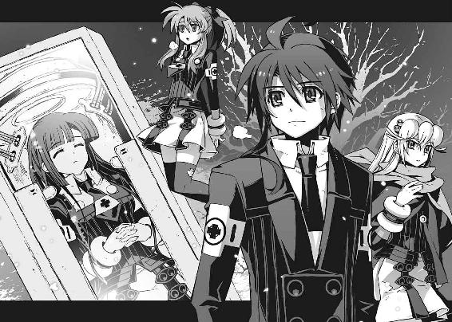
あとがき
ただいまの時刻は午前四時。風邪っぴきで熱が三十八度くらいあったりして、鼻水ずるずるなんですけど、なぜか編集部近くのホテルの一室に引き籠もって、このあとがきを書いてます。眠くならない風邪薬とユンケルのコンボはなかなか後味が強烈です。すぐ目の前にベッドがあるというのに寝たら二度と目覚めない、というかチェックアウトの時間までに起きられないのは確実なので、横になることもできないという、ある種やんわりと拷問チックな環境。前世でなんか悪いことでもしましたかねー。
というわけで十二冊目の『アスラクライン』をお送りいたします。なにやらクライマックス風味とでもいえばいいのか、派手めな展開が続いてます。十二冊かけて、ようやく、ようやくここまで辿り着くことができました。それもこれもすべてお付き合いくださった読者の皆様のおかげです。本当にありがとうございます。アスラクライン世界の裏側も、そろそろさらけ出されてきた感じですが、こんな展開を予想しておられた方もそうでない方も、皆様が少しでも楽しんでいただけたのなら、書き手としてそれに勝る喜びはありません。それに比べれば鼻水ずるずるがなんぼのもんじゃい、という感じで。
とりあえず今回も前巻に引き続いて〝一巡目の世界〟編です。普通ならば決して出会うことがなかったキャラたちの、あんな姿やこんな姿が垣間見えるような話になってます。そのあたりのｉｆの世界的要素もひっくるめて堪能してもらえたら嬉しいです。
シリーズ開始時点から何度となく作中で語られている単語ですが、アスラクラインという作品のイメージは螺旋です。同じ場所を回っているようでいて、けれど完全な繰り返しではない。ゆっくりと変化を続けながら、前に進み続けている世界。でもそれって、現実の世界にもよく似ていると思うのです。似たような失敗を繰り返して、何度も同じように後悔して。でも次は上手くやれると信じたい。体重計に乗るたびに食べ過ぎたおやつを後悔する、みたいな。いや、体重の話はべつにどうでもいいんですが。
今回のアスラクラインは、そういうぐるぐるした世界観を象徴するような話です。それはラストあたりの怒濤の展開も例外ではありません。原作者的にも眠れないくらい悩んだ部分ですが、アスラクラインという作品を描く上で避けて通れないエピソードでした。これがきっかけで同じ場所を回り続けていた物語は、少しだけ前に進むことになるはずです。
とはいえ、ここしばらく妙にスケール大きめの話が続いてたので、そろそろ智春たちも日常生活に戻してあげたいところ。ちんまりとした学園内のお話に無事に戻れるかどうか、今後の展開を予想しながら、引き続き楽しんでいただければ、と願っております。
さて、この巻の出版に先立って、あきづきりょう先生のコミック版『アスラクライン』第一巻が発売になっております。原作者としても自信を持って他人様にオススメできる完成度の高い作品です。普段あまり小説を読まない知り合いに「アスラクラインってどんな話？」と訊かれたら、とりあえずこれを見せておこうと計画中。こちらは月刊コミック電撃大王誌上での連載も続いてますので、ぜひチェックしてみてください。
そしてこの巻が皆様のお手元に届くころには、アニメの放映も始まっているはずです。幸運という言葉では片付けられないくらい素晴らしい出会いに恵まれて、スタッフやキャストの方々をはじめ、この作品にお力添えをいただいたすべての皆様に感謝の言葉が見つかりません。
そしてそして誰よりも、これまでアスラクラインを応援してくださった読者の皆様にこそ、いちばんの感謝の気持ちを伝えたいです。映像として描かれるもうひとつのアスラクラインの世界を、どうか楽しんでいただけたらと思います。
それでは最後になりましたが、本書の出版にあたりお世話になった方々、本当にありがとうございました。和狸ナオ様、担当様、なにやら大変な作業量になっておりますが、引き続きよろしくお願いいたします。
次巻の予定はまだちょっと未定......なのですが、今年は文庫のほかにも様々な場所で『アスラクライン』をお届けできる感じになると思います。もしよければマメに情報をチェックしてみてください。
再びお会いできることを心から祈っております。三雲岳斗でした。
三雲岳斗
大分県出身横浜市在住。最近になってなぜか突然きつねうどんの魅力に目覚めました。何かに取り憑かれたようにほぼ毎日食べてます。あぶらげ美味しいよあぶらげ。なんかもう豆腐ベースなのに油で揚げてあってヘルシーなのかなんだかよくわからないあたりが最高！
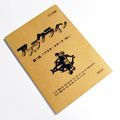
和狸ナオ
１９７６年生誕の千葉県民。くじ運は最低ながら本作の挿絵を描かせて頂き、実はすごく仕事運が良いのでは...?!と人生見直しております。遅咲きな絵描き兼ぬるいゲーマーですが、よろしくどうぞ。
電撃文庫
アスラクライン⑫
世界崩壊カウントダウン
三雲岳斗
二〇十二年八月二十四日 配信
発行者 塚田正晃
発行所 株式会社アスキー・メディアワークス
〒一〇二−八五八四 東京都千代田区富士見一−八−十九
(C)2009 GAKUTO MIKUMO／ASCII MEDIA WORKS
本書（電子版）に掲載されているコンテンツ（ソフトウェア／プログラム／データ／情報を含む）の著作権およびその他の権利は、すべて株式会社アスキー・メディアワークスおよび正当な権利を有する第三者に帰属しています。
法律の定めがある場合または権利者の明示的な承諾がある場合を除き、これらのコンテンツを複製・転載、改変・編集、翻案・翻訳、放送・出版、公衆送信（送信可能化を含む）・再配信、販売・頒布、貸与等に使用することはできません。